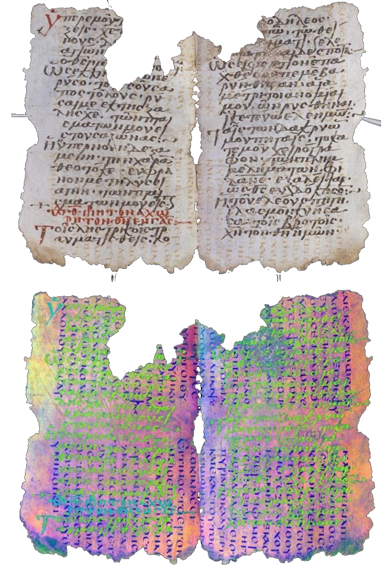
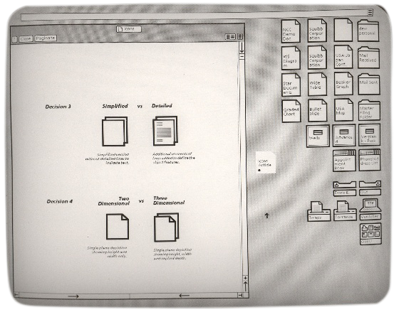
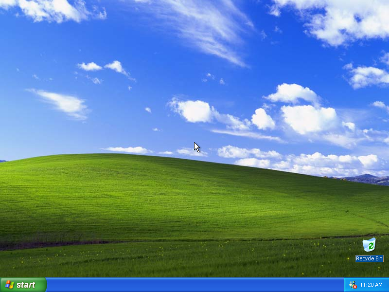

BEL1 :
Littéralement, le palimpseste est donc le fruit d’une action physique, ce qu’on “à gratté pour écrire de nouveau”.
Palimpseste d’Archimède. Codex sur parchemin de 177 pages, copie de l’ouvrage d’Archimède La Méthode datant du ixe siècle , transformée en livre de prières au xiiie siècle. ©Walters Art Museum de Baltimore.↠
Belvédère
vers une navigation palimpsestuelle ?
1 / 70
2 / 70
BEL 1-1-2 : les palimpsestes originels n’étaient pas créés pour être palimpseste, mais fruit du hasard des recyclages.
Codex Nitriensis, onciale grecque sur vélin, recto du folio 20, et verso aux rayons X, recouvert de l’Évangile selon Luc 9:22–33, 6ème siècle. Wikimedia Commons. ↠
Codex Nitriensis, onciale grecque sur vélin, recto du folio 20, et verso aux rayons X, recouvert de l’Évangile selon Luc 9:22–33, 6ème siècle. Wikimedia Commons. ↠
3 / 70

BEL 1-2b : Capture d’écran d’un Panneau de Calques dans le logiciel Adobe Photoshop 21.2.4, 2022.
4 / 70
BEL 1-2-1 : Ordonnances médicales écrites par le célèbre médecin grec Hippocrate, palimpseste sur un manuscrit du Ve et au VIe siècle, écrit sur du vélin. Photographie oculaire et à l’ultraviolet. Manuscrit découvert dans le monastère de Sainte Catherine du Sinaï (Égypte). ↠
5 / 70

BEL1-1 :
Dans l’antiquité, puis même au Moyen-âge en Europe, écrire n’est pas un geste de l’esprit quasi immatériel, mais un effort physique au contact du matériau récalcitrant qu’est le parchemin [...]
Laurence, Prieur de Durham, 1149-1154, représenté dans son activité de scribe travaillant au manuscrit de ses propres écrits. Tout en écrivant avec une plume dans la main droite, il maintient la surface lisse du parchemin avec un couteau qu’il tient dans la main gauche. MS Cosin V.III, fol.22. ©Durham University Library
Laurence, Prieur de Durham, 1149-1154, représenté dans son activité de scribe travaillant au manuscrit de ses propres écrits. Tout en écrivant avec une plume dans la main droite, il maintient la surface lisse du parchemin avec un couteau qu’il tient dans la main gauche. MS Cosin V.III, fol.22. ©Durham University Library
6 / 70
BEL1-2 :
Le réemploi était un moyen privilégié de continuer à diffuser de nouveaux textes. C’est ainsi que dans l’épaisseur de la peau ou du papyrus, se retrouvent aux rayons X des textes jusqu’alors méconnus de la Méthode d’Archimède, sous des versets de liturgie grecque.
Palimpseste d’Archimède. Photographie optique et vue aux rayons X. Codex sur parchemin de 177 pages, copie de l’ouvrage d’Archimède La Méthode datant du ixe siècle , transformée en livre de prières au xiiie siècle. Découvert en 1899 à Constantinople, puis attribué à Archimède en 1906 par Johan Ludvig Heiberg qui en fit une copie, permettant à la communauté scientifique de découvrir un texte inédit de ce savant. ©Walters Art Museum de Baltimore.↠
Palimpseste d’Archimède. Photographie optique et vue aux rayons X. Codex sur parchemin de 177 pages, copie de l’ouvrage d’Archimède La Méthode datant du ixe siècle , transformée en livre de prières au xiiie siècle. Découvert en 1899 à Constantinople, puis attribué à Archimède en 1906 par Johan Ludvig Heiberg qui en fit une copie, permettant à la communauté scientifique de découvrir un texte inédit de ce savant. ©Walters Art Museum de Baltimore.↠
7 / 70
BEL1-3 :
Par extension, comment ne pas considérer comme palimpseste, le dos en bois d’une tablette de cire, ayant gardé les traces du raclement du stylet inscrivant des centaines de textes dans la cire molle puis refondue ?
Codex de Novgorod & reconstitution dessinée d’un des textes. Livre constitué de trois tablettes en bois contenant quatre pages remplies de cire, premier quart du XIe siècle, 19 x 15 x 1 cm. Découvert en 200, à Novgorod, en Russie. Les textes sont entre autres le début de l’Apocalypse de John, une multitude de psaumes, des comptes, des énumérations des lettres de l’alphabet cyrilique… ↠
Codex de Novgorod & reconstitution dessinée d’un des textes. Livre constitué de trois tablettes en bois contenant quatre pages remplies de cire, premier quart du XIe siècle, 19 x 15 x 1 cm. Découvert en 200, à Novgorod, en Russie. Les textes sont entre autres le début de l’Apocalypse de John, une multitude de psaumes, des comptes, des énumérations des lettres de l’alphabet cyrilique… ↠
8 / 70
BEL1-4 :
En élargissant la définition originelle, que peut-on considérer comme palimpseste ?
Graffitis sur le cryptoportique de la Pescheria dans la villa Adriana à Tivoli. Détail de la fresque du IIe siècle, griffée ensuite de noms et dates. ©Charlotte Guichard (avec l’aimable autorisation du MIBAC)
Graffitis sur le cryptoportique de la Pescheria dans la villa Adriana à Tivoli. Détail de la fresque du IIe siècle, griffée ensuite de noms et dates. ©Charlotte Guichard (avec l’aimable autorisation du MIBAC)
9 / 70

BEL1-5 :
En élargissant la définition originelle, que peut-on considérer comme palimpseste ?
Jacques Villeglé, Rue du Faubourg Saint–Honoré, 25 août 1961. Affiches lacérées marouflées sur toile, 162 x 129 cm
Jacques Villeglé, Rue du Faubourg Saint–Honoré, 25 août 1961. Affiches lacérées marouflées sur toile, 162 x 129 cm
10 / 70

BEL1-6 :
En élargissant la définition originelle, que peut-on considérer comme palimpseste ?
Macule ( ombre du verso des pages apparaissant par transparence) de l’ouvrage Calque de Ryoko Sekiguchi, 2001, édition P.O.L.
Macule ( ombre du verso des pages apparaissant par transparence) de l’ouvrage Calque de Ryoko Sekiguchi, 2001, édition P.O.L.
11 / 70
BEL1-7 :
En élargissant la définition originelle, que peut-on considérer comme palimpseste ?
Solives [poutres] palimpsestes de la bibliothèque de Montaigne. Vers 1580. Citations peintes, recouvertes puis repeintes, sur les poutres du plafond de sa bibliothèque à Saint-Michel-de-Montaigne (Dordogne). Peinture noire sur un badigeon blanc. Sentences grecques et latines d’Érasme, Socrate, Horace, Lucrèce, Pline, etc. 46 solives et 2 poutres pour un total de 64 citations.
Solives [poutres] palimpsestes de la bibliothèque de Montaigne. Vers 1580. Citations peintes, recouvertes puis repeintes, sur les poutres du plafond de sa bibliothèque à Saint-Michel-de-Montaigne (Dordogne). Peinture noire sur un badigeon blanc. Sentences grecques et latines d’Érasme, Socrate, Horace, Lucrèce, Pline, etc. 46 solives et 2 poutres pour un total de 64 citations.
12 / 70
BEL1-8 :
En élargissant la définition originelle, que peut-on considérer comme palimpseste ?
Traces et repentirs de tableaux dévoilés par rayons X.
Joseph accusé par la femme de Potiphar, Rembrandt, 1655, Gemäldegalerie (Staatliche Museen zu Berlin). Peint par-dessus un portrait inconnu.
The Sampling Officials of the Amsterdam Drapers’ Guild, ou The Syndics, Rembrandt, 1662, Amsterdam, Rijksmuseum. Repentir des visages.
Portrait of Pope Julius II, Raphaël, 1511. Repentirs et veines du bois visibles par rayons X.
Portrait de la Reine Elizabeth I, artiste inconnu, vers 1600, Dessins préparatoires du squelette et rapiéçage de la toile visibles par rayons X.
Traces et repentirs de tableaux dévoilés par rayons X.
Joseph accusé par la femme de Potiphar, Rembrandt, 1655, Gemäldegalerie (Staatliche Museen zu Berlin). Peint par-dessus un portrait inconnu.
The Sampling Officials of the Amsterdam Drapers’ Guild, ou The Syndics, Rembrandt, 1662, Amsterdam, Rijksmuseum. Repentir des visages.
Portrait of Pope Julius II, Raphaël, 1511. Repentirs et veines du bois visibles par rayons X.
Portrait de la Reine Elizabeth I, artiste inconnu, vers 1600, Dessins préparatoires du squelette et rapiéçage de la toile visibles par rayons X.
13 / 70
BEL1-9 :
En élargissant la définition originelle, que peut-on considérer comme palimpseste ?
Photographie à longue exposition de 3 ans, vue de la construction du MoMa, 9 August 2001 - 2 May 2003 The Museum of Modern Art, New York, Michael Wesely, 2001 à 2003. © 2022 Artists Rights Society (ARS), New York
Photographie à longue exposition de 3 ans, vue de la construction du MoMa, 9 August 2001 - 2 May 2003 The Museum of Modern Art, New York, Michael Wesely, 2001 à 2003. © 2022 Artists Rights Society (ARS), New York
14 / 70
BEL 1-9-1 : Panographie, Mareen Fischinger 2009, photographies sur transparents.
15 / 70
BEL 1-9-2 : Floor plan drawing of the deplacements, Junya Ishigami, 2008, dessins sur calque.
16 / 70
BEL 1-9-3 : Photo Opportunities, Corinne Vionnet, 2005 à nos jours. Superposition de milliers de clichés touristiques d’un même lieu partagées sur le Web.
17 / 70

BEL1-10 :
En élargissant la définition originelle, que peut-on considérer comme palimpseste ?
Ardoise.
Untiteled (Sun State), Joseph Beuys, 1974, craie sur tableau noir. © 2022 Artists Rights Society (ARS), New York
Ardoise.
Untiteled (Sun State), Joseph Beuys, 1974, craie sur tableau noir. © 2022 Artists Rights Society (ARS), New York
18 / 70

BEL1-11 :
Transposer la perception d’un palimpseste vers la littérature. Lire la réécriture d’un texte déjà connu, un pastiche ou une paraphrase, n’est-ce pas sentir un autre texte sous-jacent, deviner la trace d’un autre auteur sous la plume d’un écrivain ?
Transtextualité autours de la célèbre phrase de Proust :
Transtextualité autours de la célèbre phrase de Proust :
longtemps, je me suis couché de bonne heure”.
Manuscrit de Marcel Proust, brouillon de la première page de A la recherche du temps perdu, septembre 1908.
Quatrième de couverture de Longtemps je me suis couché de bonheur, de Daniel Picouly, 1964.
Couverture de Longtemps je me suis couché de bonheur, de Daniel Picouly, 1964.
Couverture de Longtemps je me suis levé de bonne heure, de Guy Carlier, 2007.
Couverture de Longtemps je me suis couché de bonne heure, de Jean-Pierre Gattégno, 2004.
19 / 70
BEL1-12 :
Les relations transtextuelles, c’est à dire entre deux textes peuvent être très variées.
Schéma de Louis Hébert, 2011, in
Schéma de Louis Hébert, 2011, in
Structure, relations sémiotiques et homologation, dans Louis Hébert (dir.), Signo, Rimouski (Québec). [en ligne]
20 / 70

BEL1-13 :
Toute interface informatique contemporaine repose sur cette coprésence d’un ou plusieurs codes avec leur propre langage de programmation, et d’un affichage écran avec un langage visuel potentiellement interactif.
Palimpseste du parcours Greek Anthology 7.68, du lien faible Orphée de Jean Cocteau et du code source de la page web (2020) Plateforme Ouverte des Parcours d’imaginaires (POP), Chaire de recherche du Canada sur les Écritures numériques. Montage par Margot Mellet et Elaine Després.
Palimpseste du parcours Greek Anthology 7.68, du lien faible Orphée de Jean Cocteau et du code source de la page web (2020) Plateforme Ouverte des Parcours d’imaginaires (POP), Chaire de recherche du Canada sur les Écritures numériques. Montage par Margot Mellet et Elaine Després.
21 / 70
BEL1-14 :
Toute interface informatique contemporaine repose sur cette coprésence d’un ou plusieurs codes avec leur propre langage de programmation, et d’un affichage écran avec un langage visuel potentiellement interactif.
Affichage du code source d’un site dans le navigateur Chrome, exemple du site web Critical atlas of the internet par Louise Drulhe, image de février 2021.
Affichage du code source d’un site dans le navigateur Chrome, exemple du site web Critical atlas of the internet par Louise Drulhe, image de février 2021.
22 / 70

BEL1-15 :
Mal interprétée, souvent fantasmée, voire objet de méfiance, cette profondeur de code des interface reste un ingrédient inséparable de la culture numérique, même incompris.
Représentation couramment associée à l’informatique, issue du film Matrix, 1999, réalisé par Les Wachowski.
Représentation couramment associée à l’informatique, issue du film Matrix, 1999, réalisé par Les Wachowski.
23 / 70
BEL1-16 :
Mais comment ne pas lire le mot “hypertexte” sans penser à cette autre acception du terme, celle-ci bien plus technologique que littéraire, et que nous utilisons au quotidien sur le Web en cliquant sur les fameux “liens hypertextes” soulignés de bleu vif ?
Capture d’écran de la page consacrée à l’Hypertexte du site Wikipédia, dont le principe repose sur les hyperliens. ↠
Capture d’écran de la page consacrée à l’Hypertexte du site Wikipédia, dont le principe repose sur les hyperliens. ↠
24 / 70

BEL1-16-1 :
Ted Nelson, entre 1963 et 1965, réfléchit à l’hypertexte comme une partie d’un modèle de création et d’édition qu’il développe en privilégiant la mise en lien de contenus
Schéma de représentation de l’hypertexte, Ted Nelson, 1965.
Schéma de représentation de l’hypertexte, Ted Nelson, 1965.
25 / 70
BEL1-17 :
Le projet de Nelson n’arrivera jamais fonctionnellement à terme, mais l’idée sera reprise à chaque émergence de techniques aux effets similaires, dont le plus connu aujourd’hui encore est “l’HyperText” de Tim Berners-Lee qui propose en 1989 un protocole d’accès et de partage d’information appelé
World Wide Web” — à l’origine, bien sûr, du Web que nous connaissons aujourd’hui.
Première page de la proposition de World Wide Web de Tim Berners-Lee, écrite en mars 1989. ©CERN
26 / 70
BEL1-18 :
1987 est l’année de l’intrusion dans l’espace public de l’hypertexte. D’une double intrusion : la société Apple distribue (gratuitement) avec ses ordinateurs Macintosh le logiciel conçu par Bill Atkinson : Hypercard. En quelques mois, de confidentiel l’hypertexte devient un instrument manipulé par des milliers d’utilisateurs.
Vue du logiciel HyperCard, 1987, conçu par Bill Atkinson. Image de Jackob Nielsen. ↠
Vue du logiciel HyperCard, 1987, conçu par Bill Atkinson. Image de Jackob Nielsen. ↠
27 / 70
BEL1-19 :
Chaque territoire est unique, d’où la nécessité de “recycler”, de gratter une fois de plus (mais si possible avec le plus grand soin) le vieux texte que les hommes ont inscrit sur l’irremplaçable matériau des sols, afin d’en déposer un nouveau.
Bloc Diagramme représentant la région d’Icathia-Cornell, par OD Von Engeln, 1934. Image extraite de Palimpsestuous Ithaca : un manifeste relatif du sub-urbanisme, par Sébastien Marot, 2008. Marot y présente le territoire comme un palimpseste.
Bloc Diagramme représentant la région d’Icathia-Cornell, par OD Von Engeln, 1934. Image extraite de Palimpsestuous Ithaca : un manifeste relatif du sub-urbanisme, par Sébastien Marot, 2008. Marot y présente le territoire comme un palimpseste.
28 / 70
BEL1-20 :
Comme l’hypertexte, l’hyperville [ville du 21ème siècle] est accessible de diverses façons ; on y entre, on en sort par une multitude de points.
Vue aériennes de la ville de Monteriggioni en Italie, dont les entrées et sorties restent relativement faciles à lire, et de l’hyperville d’Orlando en Floride. Comparaison proposée par André Corboz dans sa conférence du 29 avril 1997 La suisse comme hyperville
Vue aériennes de la ville de Monteriggioni en Italie, dont les entrées et sorties restent relativement faciles à lire, et de l’hyperville d’Orlando en Floride. Comparaison proposée par André Corboz dans sa conférence du 29 avril 1997 La suisse comme hyperville
29 / 70
BEL 3-1 : Schéma du principe d’un palimpseste par addition de matière, animation gif animée, 2021.
30 / 70
BEL 3-2 : Schéma du principe d’un palimpseste par soustraction de matière, animation gif animée, 2021.
31 / 70

BEL 3-3 : Texte magique copte palimpseste sur fibres végétales (invocation au Christ, avec mention des voyelles, pour sauver une petite fille de "toute maladie'' et de "tout mauvais oeil'). Époque byzantine, 395 - 641, découvert à Deir el-Medina (région de Thèbes), 6,3x22,7 cm. Conservé au Musée du Louvres, Paris, département des antiquités égyptiennes, visible salle 173, n° d’inventaire E 32317. © 2009 Musée du Louvre / Georges Poncet ↠
32 / 70
BEL 1-21 : En demandant à quelques personnes de mon entourage de me décrire un palimpseste, j’observais en les écoutant les formes tracées dans l’espace par les mains de mes interlocuteur·ice·s, souvent chorégraphies miniatures rappelant les actions d’écrire, creuser ; bien souvent nous finissions sur un geste de superposition des mains, proche du célèbre mouvement de la Ketchup son.
Aserejésurnommé
The Ketchup songclip vidéo du single du même nom, dans l’album Hijas del Tomate, du groupe de musique espagnol Las Ketchup, juillet 2002. ↠
33 / 70
BEL 3-4 : Un peu comme dans ces scènes de film où, tournant en rond sur une île, le personnage suit des traces de pas dans le sable avant de se rendre compte qu’elles sont les siennes j’observerai des traces autant pour me demander ce qu’elles disent des marcheurs, que comment elles influencent ceux qui marcheront sur le même chemin à leur tour.
Captures d’écran de la série Le tour du monde en 80 jours, saison 1, épisode 6, Simon Crawford Collins, 2021, produit par BBC One.
Captures d’écran de la série Le tour du monde en 80 jours, saison 1, épisode 6, Simon Crawford Collins, 2021, produit par BBC One.
34 / 70
BEL 3-5 : CARAËS Marie-Haude et MARCHAND-ZANARTU Nicole , Images de pensée, 2011, Éditions de la Réunion des musées nationaux - Grand Palais, Paris, 128 pages. Postface par Jean Lauxerois.
35 / 70
BEL 3-6 : Atelier d’auto-description Où atterrir?, 2021, Consortium Où atterrir.
36 / 70
BEL 3-7a : Iannis Xenakis, compositeur, 1959 (BnF – Images de pensée, p. 101)
37 / 70
BEL 3-7b : Philippe Rekacewicz, géographe,
Mourir aux portes de l’Europe(2009) Premières esquisses de la Carte de la stratégie de la pauvreté. La grande roue (coll. particulière) – Images de pensée, p. 31)
38 / 70

BEL 3-7c : Henri Langlois, conservateur, schéma pour la création de la Cinémathèque française, 1934 (La Cinémathèque française, Paris – Images de pensée, p. 89)
39 / 70
BEL 3-10a : Travel time on London Underground [Temps de trajet du métro souterrain londonien], Tom Carden, 2005, cartographie du réseau londonien en fonction du temps de trajet depuis différentes stations. ↠
40 / 70
BEL 3-10b : London Tube Map, cartographie du métro Londonien, Transport for London, 2014. Évolution de la carte originale de 1931, par Henry Beck.
41 / 70

BEL 3-10c : Plan du métro parisien contre itinéraire généré par Google Map dans Paris.
42 / 70
BEL 3-11a : Entre les dalles, 2009, Mathias POISSON. Cartographie sensible du Colombier à Rennes réalisée par l’artiste-marcheur Mathias Poisson en 2009 à partir de promenades sensibles dans le quartier. [en ligne]
43 / 70
BEL 3-11b : Carte subjective du 23 octobre 2003, Mathias POISSON.
Prendre en sortant de la maison la 1ere à gauche puis la 1ère à droite puis la première à gauche…↠
44 / 70
BEL 3-11 : Les pistes de vaccin, 2021, Veronica Falconieri Hays. Illustration de DOLGIN Elie,
La révolution des vaccins à ARN, article de la revue Pour la science, n°522, 18 mars 2021. ↠
45 / 70
BEL 4-1 : Planisphærium cœleste, Frederik de Wit, 1620, Danemark, Koninklijke Deense Bibliotheek.
46 / 70
BEL 4-1b : Planisphærium cœleste, Frederik de Wit, 1620, Danemark, Koninklijke Deense Bibliotheek. Détail de la portion inférieure gauche, constellation de la grande ourse, des gémeaux.
47 / 70
BEL 4-2 : Condition humaine I, René Magritte, 1933, huile sur toile, National Gallery of Art.
48 / 70
BEL 4-2b : “The sunlight on the curtain looks like the Windows logo”, collection de photographies disponibles sur le fil de discussion /r/mildlyinteresting sur la plateforme Reddit, 2015. ↠
49 / 70
BEL 4-3 : Capture d’écran de “Keith Haring believed art is for everybody. We do too. Draw and paint with free brushes inspired by iconic artist Keith Haring.“ article du site d’Adobe Creative Cloud, décrivant une brosse Photoshop effet craie. ↠
50 / 70
BEL 4-4 : Illustration et définition de la phrénologie, Dictionnaire Webster, 1895.
51 / 70
BEL 4-5 : Interface graphique de Xerox Star 8010 en 1981. The Xerox Star (John- son et al., 1989) qui succède directement au Xerox Alto (Thacker et al., 1979).[en ligne] – retrieved on 2012-07-21
52 / 70
BEL 4-6 : Transparence Littérale versus Phénoménale. Pablo Picasso, L’Arlésienne, 1911-1912 et Walter Gropius, the Workshop wing of the Bauhaus, 1926 , extrait de S. Giedion, Space, Time and Architecture, 1941.
53 / 70
BEL 4-7 : Confusion versus multivalence. Walter Gropius, Bauhaus, 1925-1928, aerial view of the whole building and view of the workshop wing; Le Corbusier, Villa Stein, 1926, axonometry and view of the garden façade. Montage extrait de MAROT, Sébastien,
Extrapolating Transparency, in Mauro Marzo (dir.), L’Architettura come testo e la figura di Colin Rowe, 2010, IUAV-Marsilio, p. 114
54 / 70
BEL2-1 :
Une page n’est pas qu’un contenant, auquel cas, tentant de charger une page web, le navigateur n’afficherait que des codes html, css, javascript. Au contraire, la page, et la page web, sont des espaces performatifs : ils mettent en forme des données brutes.
Montage de l’autrice. Affichage du code source d’un site dans le navigateur Chrome, exemple du site web Critical atlas of the internet par Louise Drulhe, image de février 2021.
Montage de l’autrice. Affichage du code source d’un site dans le navigateur Chrome, exemple du site web Critical atlas of the internet par Louise Drulhe, image de février 2021.
55 / 70
BEL2-2 :
La diffusion de la notion d’interface dans notre quotidien vient de l’expression “interface homme-machine”. Mais contrairement aux stéréotypes, l’interface est bien plus une notion d’usage qu’un concept technologique.
Premier résultat de recherche pour “Human Computer interface” sur Google, le 20/02/2022. Connection concept with human finger connect to 3d rendering robot finger, image proposée par le site de vente Dreamstime, ID 108353216 © Kittipong Jirasukhanont
Premier résultat de recherche pour “Human Computer interface” sur Google, le 20/02/2022. Connection concept with human finger connect to 3d rendering robot finger, image proposée par le site de vente Dreamstime, ID 108353216 © Kittipong Jirasukhanont
56 / 70
BEL2-3 :
La proximité des typologies d’interactions de l’imprimé et du cinéma avec l’IHM ne sont pas dues au hasard : l’interface de l’ordinateur des années 80 est rendue opérationnelle grâce à des emprunts d’interactions issues d’autres langages culturels.
Évolution de l’icône d’un document, cherchant la meilleure imitation d’une feuille de papier, pour l’interface du Xerox Star 8010 en 1981. Image polaroïde numérisée, issue du DigiBarn Computer Museum. ↠
Évolution de l’icône d’un document, cherchant la meilleure imitation d’une feuille de papier, pour l’interface du Xerox Star 8010 en 1981. Image polaroïde numérisée, issue du DigiBarn Computer Museum. ↠
57 / 70
BEL2-4 :
L’héritage de métaphores familières comme celle de la fenêtre explique pourquoi on projette, sur ce nouvel espace, virtuel, de l’interface, les caractéristiques de notre propre espace, comme la tridimensionnalité par exemple. Ce n’est d’ailleurs pas un hasard si l’emblématique fond d’écran de Windows XP (une des images
Fond d’écran de Window Xp. 2001, image issue de VILLARS Timothée,
les plus vues de tous les temps) soit une vue de paysage, comme si l’écran ouvrait une trouée vers les vertes collines du comté de Sonoma, en Californie.
Fond d’écran de Window Xp. 2001, image issue de VILLARS Timothée,
L’étonnante histoire du fond d’écran de Windows XP, l’image la plus vue au monde, article du média en ligne L’Obs, 13 août 2017.
58 / 70
BEL2-5 :
Une autre métaphore à été léguée à l’écran, celle du tableau de bord,
Interface du Xerox Star 8010 en 1981. Image polaroïde numérisée, issue du DigiBarn Computer Museum. ↠
une surface plane portant des étiquettes et des icônes graphiquespour commander des actions automatisées.
Interface du Xerox Star 8010 en 1981. Image polaroïde numérisée, issue du DigiBarn Computer Museum. ↠
59 / 70
BEL2-6 :
La métaphore de la fenêtre, et celle du tableau de bord, rappellent toutes deux la séparation familière qu’offre la page de papier entre un monde en 2D et un monde en 3D — dont on peut rêver, comme dans le clip Take on me du groupe Ah-ah, passer de l’un à l’autre comme à travers une fenêtre, mais sans perdre l’ascendant de la 3D sur la 2D comme sur un tableau de contrôle, avec un coup de crayon ou de ciseau démiurge.
Captures d’écran de Take on me, BARON Steve, Clip vidéo de la chanson éponyme du groupe A-ha, 1986, 4’44”. [en ligne]
Captures d’écran de Take on me, BARON Steve, Clip vidéo de la chanson éponyme du groupe A-ha, 1986, 4’44”. [en ligne]
60 / 70
BEL 5-1 : Planisphère de Martellus, Henricus Martellus, vers 1490, 2m x 1,20m, Université de Yale.
61 / 70
BEL 5-2 : "Universalis Cosmographie descriptio in plano" dit Planisphère de Waldseemüller, publié sous la direction du cartographe Martin Waldseemüller, 1507, publié en 12 feuillets dans “Cosmographiae introductio cum quibusdam geometriae ac astronomiae principiis ad eam rem necessariis, Insuper quatuor Amerigi Vespucci navigationes; Universalis Cosmographie descriptio tam in solido quam plano eis etiam insertis que Ptholomeo ignota a nuperis reperta sunt" . Il contient la première mention du mot
America.
62 / 70

BEL 6-1 : L’Oeil de la scène, extrait de la simulation de l’interface, Audrey MCA Pety 2020. Projet ENSCI - Dans le Sens de Barge Habiter l’escale. D’octobre 2019 à Janvier 2020, sous la direction de Laurent Massaloux et Romain Cuvellier, coordination Margot Casimir.
63 / 70

BEL 6-1b : L’Oeil de la scène, extrait de la simulation de l’interface, Audrey MCA Pety 2020. Projet ENSCI - Dans le Sens de Barge Habiter l’escale. D’octobre 2019 à Janvier 2020, sous la direction de Laurent Massaloux et Romain Cuvellier, coordination Margot Casimir.
64 / 70

BEL 6-2 : Capture d’écran de l’interface Time Machine de l’autrice, 2021. Time Machine est un logiciel de sauvegarde propriétaire développé par Apple qui effectue des copies de sauvegarde du système toutes les heures, qu’il conserve pendant 24 heures.
65 / 70
BEL 6-3 : Captures d’écran de Google Street View pour le 48 rue st Sabin (ENSCI) à Paris, de 2008 à 2020. Une fonctionnalité de Google Street View qui permet de naviguer dans toutes les versions panoramiques d’un même lieu captées au fil des années.
66 / 70
BEL 6-4 : La Carte et le Paysage, atlas visuel digital collectionné et organisé par Audrey MCA Pety de mars 2020 à juillet 2021. 2363 images. Impression et édition d’un exemplaire papier unique en janvier 2021 par Audrey MCA Pety entre Paris et Grenoble ; 700 pages. Une version publique accessible en ligne n’est pas (encore) disponible. N. B. Le travail effectué relève uniquement d’une curation théorique, à usage personnel. Toutes les images répertoriées appartiennent à leurs auteurs et ne sont en aucun cas revendiquées.
67 / 70
BEL 6-5 : Phare, extrait de la simulation de l’interface, Audrey MCA Pety 2019. Projet ENSCI-SNCF - Activités, Mobilités, Territoires Imagine la vi(ll)e mobile de demain, de septembre 2018 à janvier 2019, sous la direction de Marine Rouit-Leduc, Raphaëlle Ankaoua et Patrick de Glo De Besses, Coordination Camille Jacoupy.
68 / 70
BEL 6-6 : Schéma représentant les trois échelles de postures d’interactions avec les projets analysés à l’écran, dans la main, au plafond. 2021.
69 / 70
BEL 6-7 : Schéma représentant la structure de navigation théorique dans les interfaces des trois projets sus-cités, 2021.
70 / 70
Il est possible de lire le palimpseste selon de nombreux angles, puisque si l’on reprend l’image originelle, les deux textes peuvent être lus consécutivement comme un seul panorama chronologique, en les considérant comme des couches de calques de transparence variable, en les considérant comme deux entités à part entière dont le temps et le hasard ont assuré la curation en les associant telle une collection, ou enfin en décelant des liens transversaux entre les textes comme en un réseau où la singularité des deux textes s’estompe au profit de l’ensemble complexe qu’ils forment.
0
/ 22
vers une navigation palimpsestuelle ?
la littérature comme palimpseste
le paysage palimpseste
le palimpseste de la mémoire
un édifice palimpseste
le territoire comme palimpseste
le palimpseste numérique
… l’interface comme palimpseste ?
Un printemps, au détour d’errances numériques, je fus six fois de suite cueillie par le mot “palimpseste”.
Merveille, délice ; j’avais vaguement connaissance de ces parchemins grattés Palimpseste d’Archimède. Codex sur parchemin de 177 pages, copie de l’ouvrage d’Archimède La Méthode datant du ixe siècle, transformée en livre de prières au xiiie siècle. ©Walters Art Museum de Baltimore par des recouvrements de textes d’époques diverses, mais jusque-là le terme gisait, inerte, dans ma bibliothèque mentale. Et le voilà qui s’éveillait plein de malice, promu au titre d’outil ! Et ce pas seulement une fois, mais dans six domaines : concept d’urbanisme, mais aussi littéraire, psychologique, philosophique, numérique. Le mot s’était plié à tant de disciplines que j’en voyais sa matière échauffée devenue malléable, je brûlais d’y mettre la main.
Je m’élançais pour me saisir de cette si précieuse métaphore ; voici que sa définition toujours me fuyait entre les doigts ! A peine discernais-je des caractéristiques, qu’un exemple pourtant irréfutable venait les contredire. En même temps, le palimpseste parfait me semblait de plus en plus introuvable : jamais un palimpseste considéré comme tel communément, qui n’ait quelques ambiguïtés propres.
Image volatile, insaisissable, sans doute est-ce cette versatilité qui m’a séduite : impossible de fixer ce qui “fait” un palimpseste.
Choisissant un chemin détourné, je me demandais alors ce que l’on fait face à un palimpseste. Car quelques déplacements caractéristiques au sein de leurs complexes structures se retrouvent, qui suggèrent que la navigation dans un palimpseste n’est pas due à un simple hasard.
Mais cette navigation n’est pourtant pas manifestement guidée, ou soumise à un protocole. Et pour cause, les palimpsestes originels n’étaient pas créés pour être palimpseste, mais fruit du hasard des recyclages. Codex Nitriensis, onciale grecque sur vélin, recto du folio 20, et verso aux rayons X, recouvert de l’Évangile selon Luc 9:22–33, 6ème siècle. Wikimedia Commons. Aucun des éléments n’étant voué à être avec l’autre, inutile de pointer une direction pour passer entre eux.
Dans cette désorientation, il devrait être impossible de cerner une navigation palimpsetuelle idéale. Pourtant, parmi les myriades de possibilités, il était facile de remarquer que la plupart des navigations partageaient de grandes similitudes. Toutes me semblaient étrangement familières, comme si j’y étais déjà habituée ; ou plutôt, j’utilisais des habitudes coutumières, comme si le palimpseste était un des éléments familiers dont j’use quotidiennement. Comme si.
Tantôt je manipulais les différents textes du palimpseste comme s’il était une collection d’éléments à part entière, comme les collections d’informations des bases de données.
Ou bien comme s’il était, au contraire, une seule histoire chronologique à raconter du début à la fin, se déroulant en un vaste panorama, en un seul et unique scroll défilant en continu.
Ou encore comme s’il était une superposition de calques individuels, mais qui empilés donnent une image globale, comme ceux que l’on utilise dans Photoshop. Capture d’écran d’un Panneau de Calques dans le logiciel Adobe Photoshop 21.2.4, 2022.
Ou comme si c’étaient les liens entre ses éléments qui importaient plus que les éléments eux-mêmes, tissant ainsi un réseau tels les les hyperliens de Wikipédia, sautant d’un mot à l’autre dans différentes strates de textes?
Chaque navigation dans un parchemin-palimpseste rappelait ces images quotidiennes, devenues banales jusque dans la vie digitale. Plutôt donc que de déterminer quelles caractéristiques permettaient de définir si oui ou non, une notion, un outil, une chose pouvait être qualifiée de “palimpseste”, il s’agit de pister ces mécanismes de navigation omniprésents, que le palimpseste a aussi en commun.
Ou, en creux, se demander comment la métaphore du palimpseste permet de révéler des logiques de navigation inhérentes aux interfaces digitales contemporaines ?
Chacun des mots de cette question est un mystère à lui seul, revenons donc sur ce fameux palimpseste, son statut de métaphore, son lien avec les interfaces, et enfin son influence sur nos navigations.
-
Parodie et pastiche, a-t-on dit justement, “désignent la littérature comme palimpseste”
GENETTE Gérard, Palimpseste, la littérature au second degré, 1982, Paris, collection Point, édition du Seuil. p. 556, chapitre LXXX.
Genette cite lui-même AMOSSY Ruth, ROSEN Elisheva,La dame aux catleyas : fonction du pastiche et de la parodie dans À la recherche du temps perdu
In Littérature, n°14, 1974. SectionL’effet littéraire
pp. 55-64. -
CHEVALLIER Raymond,
Le paysage palimpseste de l’histoire : pour une archéologie du paysage
in Mélanges de la Casa de Velázquez, tome 12, 1976. pp. 503-510. ↠ -
Le palimpseste de la mémoire est indestructible.
BAUDELAIRE Charles,Visions d’oxford, I. Palimpseste
in Les Paradis artificiels, 1869, édition Michel Lévy frères, pp. 329-344, chapitre VIII. -
C’est là un édifice palimpseste, où les courants artistiques se juxtaposent et se recouvrent au gré des siècles.
SOYEUX Marie,À Vannes, une cathédrale palimpseste
, journal La Croix, 1-2 août 2015, p. 11. - CORBOZ André, Le territoire comme palimpseste et autres essais, Besançon, édition de l’imprimeur, Collection Tranches de villes. Le texte était toutefois paru auparavant dans la revue Diogène, n° 121, janvier-mars 1983, pp. 14-35. ↠
-
MELLET Margot,
Penser le palimpseste numérique. Le projet d’édition numérique collaborative de l’Anthologie palatine
, article de la revue Captures, vol. 5, n° 1, mai 2020, hors dossier. ↠
Palimpseste
1
/ 22
Lorsque le palimpseste emmène vers les “cultural studies”
Si la multitude de champs qui s’étaient appropriés la métaphore du palimpseste m’a tout de suite interpellée, c’est que dans sa diversité elle me permettrait une approche transversale inspirée des “cultural studies”. J’emprunte ici les mots d’Anthony Masure pour définir ces “études culturelles” : D’origine anglo-saxonne, ce courant de pensée revendique la transdisciplinarité comme horizon et répond d’une logique éclatée. Inspiré par des auteurs comme Michel Foucault, Jacques Derrida ou Gilles Deleuze, ce mouvement affirme peut-être tout simplement que les méthodes de pensée n’ont pas besoin d’être affiliées à des disciplines particulières pour être pertinentes. Initié par Lev Manovich et Matthew Fuller au début des années 2000, le champ des “software studies” se donne ainsi pour tâche de lier la critique des logiciels à des références esthétiques, philosophiques ou anthropologiques
.
Même si je m’intéresse moins aux logiciels qu’aux interfaces*, la méthode des software studies, et notamment les analyses de Lev Manovich*, m’interpellent particulièrement pour leur approche qui laissent la part belle à l’expérience de l’utilisatrice de ces logiciels, les habitudes qu’elle développe, les images qu’elle sollicite pour y interagir et les correspondances qui se tissent par l’usage entre les médias.
Le palimpseste m’a donc semblé un prisme adéquat pour appréhender les interfaces depuis la posture des cultural et software studies.
Les origines matérielles du palimpseste : un parchemin très concret
Une image sophistiquée, une analogie raffinée, un mot complexe, certes. Mais l’origine du palimpseste est bien plus simple, concrète, matérielle.
Emprunté au latin palimpsestus, il se compose des termes grec “gratter, racler” et “de nouveau”. Littéralement, le palimpseste est donc le fruit d’une action physique, ce qu’on “à gratté pour écrire de nouveau”. Ordonnances médicales écrites par le célèbre médecin grec Hippocrate, palimpseste sur un manuscrit du Ve et au VIe siècle, écrit sur du vélin. Photographie oculaire et à l’ultraviolet. Manuscrit découvert dans le monastère de Sainte Catherine du Sinaï (Égypte). Or dans l’antiquité, puis même au Moyen-âge en Europe, écrire n’est pas un geste de l’esprit quasi immatériel, mais un effort physique au contact du matériau récalcitrant qu’est le parchemin, rappelle Mary Carruthers. Nous devons garder en tête l’activité vigoureuse, et même violente, que supposait l’inscription d’une trace sur une surface comme celle de la peau d’animal. Il fallait la rompre, la polir, la “blesser” en quelques sorte avec un instrument pointu très affûté.
Laurence, Prieur de Durham, 1149-1154, représenté dans son activité de scribe travaillant au manuscrit de ses propres écrits. Tout en écrivant avec une plume dans la main droite, il maintient la surface lisse du parchemin avec un couteau qu’il tient dans la main gauche. MS Cosin V.III, fol.22. ©Durham University Library
La plume ne faisait donc pas que déposer de l’encre sur le parchemin, il s’agissait d’inscrire les mots dans la matière. Foncièrement, écrire avait donc tout à voir avec une action en volume, existant dans l’épaisseur de la surface.
Et c’est dans cette épaisseur que prend forme le palimpseste : pour écrire un autre texte sur un parchemin déjà inscrit, une opération de grattage à la pierre ponce permettait d’effacer le texte initial. Accomplie avec plus ou moins de soin, cette étape pouvait parfois laisser subsister des traces de l’ancien texte, qui venait alors “parasiter” le nouveau. La raison d’être initiale de cette pratique est avant tout économique : les matériaux coûtant cher et étant difficiles à se procurer (de la peau de veau mort-né, notamment, réputée pour sa finesse et sa souplesse), le réemploi était un moyen privilégié de continuer à diffuser de nouveaux textes.
C’est ainsi que dans l’épaisseur de la peau ou du papyrus, se retrouvent aux rayons X des textes jusqu’alors méconnus de la Méthode d’Archimède, sous des versets de liturgie grecque.
Palimpseste d’Archimède. Photographie optique et vue aux rayons X. Codex sur parchemin de 177 pages, copie de l’ouvrage d’Archimède La Méthode datant du ixe siècle , transformée en livre de prières au xiiie siècle. Découvert en 1899 à Constantinople, puis attribué à Archimède en 1906 par Johan Ludvig Heiberg qui en fit une copie, permettant à la communauté scientifique de découvrir un texte inédit de ce savant. ©Walters Art Museum de Baltimore
Extensions : le palimpseste peut-il s’éloigner du parchemin ?
Par extension, comment ne pas considérer comme palimpseste, le dos en bois d’une tablette de cire, ayant gardé les traces du raclement du stylet inscrivant des centaines de textes dans la cire molle puis refondue ? Codex de Novgorod & reconstitution dessinée d’un des textes. Livre constitué de trois tablettes en bois contenant quatre pages remplies de cire, premier quart du XIe siècle, 19 x 15 x 1 cm. Découvert en 200, à Novgorod, en Russie. Les textes sont entre autres le début de l’Apocalypse de John, une multitude de psaumes, des comptes, des énumérations des lettres de l’alphabet cyrilique… Ce Codex de Novgorod, qui conserve ses empruntes depuis le 11ème siècle, est même appelé un hyper-palimpseste.
Mais en élargissant encore, ces fresque romaines que l’on découvre griffées de graffitis, comme les fresques de la villa Adriana à Tivoli, striées de noms, de dates et même d’esquisses, ne sont-elles pas aussi la survivance de traces successives dans l’épaisseur de la matière digne d’un palimpseste ? Graffitis sur le cryptoportique de la Pescheria dans la villa Adriana à Tivoli. Détail de la fresque du IIe siècle, griffée ensuite de noms et dates. ©Charlotte Guichard
Dans la lignée des graffitis, les superpositions d’affiches dont quelques lacérations suffisent à révéler la stratification temporelle, remontant le temps de bribes en morceaux de réclames ? Jacques Villeglé, Rue du Faubourg Saint–Honoré, 25 août 1961. Affiches lacérées marouflées sur toile, 162 x 129 cm
En dérivant, les macules, ombres du texte au recto de la page apparaissant en transparence, forment-elles des palimpsestes ? Macule ( ombre du verso des pages apparaissant par transparence) de l’ouvrage Calque de Ryoko Sekiguchi, 2001, édition P.O.L.
Et les poutres de la bibliothèque de Montaigne, qui avait fait peindre en noir sur blanc des des citations grecques et latines d’Érasme, Socrate, Horace, Lucrèce, Pline, etc., se superposant en plusieurs couches dont les ultraviolets révèlent les sentences les plus anciennes ? Solives [poutres] palimpsestes de la bibliothèque de Montaigne. Vers 1580. Citations peintes, recouvertes puis repeintes, sur les poutres du plafond de sa bibliothèque à Saint-Michel-de-Montaigne (Dordogne). Peinture noire sur un badigeon blanc. Sentences grecques et latines d’Érasme, Socrate, Horace, Lucrèce, Pline, etc. 46 solives et 2 poutres pour un total de 64 citations. Il s’agit bien de textes, mais cette fois c’est un recouvrement plus qu’une inscription, et ce par la même personne. Pourtant elles sont connues comme des “solives palimpsestes”. Ne serait-ce pas alors aussi le cas des repentirs (pentimento en italien) de la peinture, qui ne sont certes pas du texte, mais toujours une survivance historique, dont les toiles retracent la composition et les retouches de l’image par le peintre ?
Traces et repentirs de tableaux dévoilés par rayons X. / Joseph accusé par la femme de Potiphar, Rembrandt, 1655, Gemäldegalerie (Staatliche Museen zu Berlin). Peint par-dessus un portrait inconnu. / The Sampling Officials of the Amsterdam Drapers’ Guild, ou The Syndics, Rembrandt, 1662, Amsterdam, Rijksmuseum. Repentir des visages. / Portrait of Pope Julius II, Raphaël, 1511. Repentirs et veines du bois visibles par rayons X. / Portrait de la Reine Elizabeth I, artiste inconnu, vers 1600, Dessins préparatoires du squelette et rapiéçage de la toile visibles par rayons X.
Que dire des surimpressions photographiques, double exposition d’une pellicule photosensible à la lumière, qui ne gratte pas mais modifie irrémédiablement l’émulsion sensible, liant dans leur matière même les deux images ? Photographie à longue exposition de 3 ans, vue de la construction du MoMa, 9 August 2001 - 2 May 2003 The Museum of Modern Art, New York, Michael Wesely, 2001 à 2003. © 2022 Artists Rights Society (ARS), New York Que dire encore des “images fantômes” sur les écrans de sérigraphies qui, mal nettoyées, conservent des vestiges de leurs vies précédentes dans leur relief ?
Plus loin encore, les superpositions de calques Panographie, Mareen Fischinger 2009, photographies sur transparents., les jeux de transparence et de reflets
Floor plan drawing of the deplacements, Junya Ishigami, 2008, dessins sur calque., jeux de couches plus ou moins amalgamés dans la même image Photo Opportunities, Corinne Vionnet, 2005 à nos jours. Superposition de milliers de clichés touristiques d’un même lieu partagées sur le Web., pourraient-elles être reliées au palimpseste ?
Ou bien est-ce moins la trace et la superposition qui importent pour faire palimpseste, que le principe du recyclage et de la réutilisation du support ?
A l’heure des presses rotatives permettant de réaliser des tirages vertigineux d’un texte, il n’est plus question de gratter l’encre pour revenir à un état de virginité antérieure
, le cycle de vie d’un livre (impression / diffusion / retour des invendus / pilonnage) resterait-il lié au palimpseste, même si le texte initial n’est plus visible lors de la réincarnation
, comme le suppose le graphiste Tony Durand ?
Et le tableau noir marqué à la craie puis effacé, saura-il prétendre au palimpseste puisqu’il est possible de le laver en ôtant toute trace de textes antérieurs ? Ardoise. Untiteled (Sun State), Joseph Beuys, 1974, craie sur tableau noir. © 2022 Artists Rights Society (ARS), New York
Transposer la perception d’un palimpseste
La liste des prétendants-palimpsestes pourrait être encore bien plus longue, que l’on compare objets et pratiques au regard de leur processus de fabrication -volontaire ou accidentel- ou de leur rendu visuel. Une troisième approche emmène plus loin la définition, en appréhendant uniquement sa perception par un observateur. Un tel point de vue, qui est d’ailleurs souvent celui du designer, laisse de côté les informations connues sur un objet pour se concentrer sur la compréhension, et l’interaction, que n’importe qui tisse dès le premier contact avec cet objet.
Alors, que perçoit-on au contact d’un palimpseste ?
La perception d’une coprésence
Le littéraire Gérard Genette, sommité du palimpseste pour avoir écrit un ouvrage du même nom, y voit [...] un texte se superposer à un autre qu’il ne dissimule pas tout à fait, mais qu’il laisse voir par transparence.
Se concentrer ainsi sur la perception permet à Genette de transposer le palimpseste sur le plan métaphorique : lire la réécriture d’un texte déjà connu, un pastiche ou une paraphrase, n’est-ce pas sentir un autre texte sous-jacent, deviner la trace d’un autre auteur sous la plume d’un écrivain ?
Transtextualité autours de la célèbre phrase de Proust : "longtemps, je me suis couché de bonne heure”. / Manuscrit de Marcel Proust, brouillon de la première page de A la recherche du temps perdu, septembre 1908. / Quatrième de couverture de Longtemps je me suis couché de bonheur, de Daniel Picouly, 1964. / Couverture de Longtemps je me suis couché de bonheur, de Daniel Picouly, 1964. / Couverture de Longtemps je me suis levé de bonne heure, de Guy Carlier, 2007. / Couverture de Longtemps je me suis couché de bonne heure, de Jean-Pierre Gattégno, 2004.
Cette double perception caractéristique que Genette trouve dans le palimpseste, et reconnaît à de multiples reprises en littérature, il la nomme transtextualité : une relation de coprésence entre deux ou plusieurs textes
. L’intertextualité est une qualité si largement partagée que Genette finit par l’attribuer à tout travail littéraire, désignant la littérature comme palimpseste
. Pourtant cette approche axée sur la perception, si elle brasse large, permet de s’axer sur un critère de comparaisons singulier, que l’on peut ramifier pour y trouver des catégories fines et précises — Genette arrive ainsi à diviser la transtextualité en pas moins de 80 chapitres, regroupés souplement en 5 parties, comme le travestissement, le pastiche, la continuation, la transposition…
Schéma de Louis Hébert, 2011, in " Structure, relations sémiotiques et homologation ", dans Louis Hébert (dir.), Signo, Rimouski (Québec).
La transtextualité génétienne restreint cependant le palimpseste au seul champ littéraire, lorsque cette transposition métaphorique ne relève pas toujours de la lecture littérale : observant la plupart des palimpsestes sur parchemins, s’il est facile d’identifier la présence de deux entités textuelles distinctes, bien souvent elles sont dans des langues que nous ne sommes pas capables de lire sans traduction, et restent des traces entre l’inscription et l’image, moins que des textes.
Je conserverai donc, comme qualité perceptible caractéristique du palimpseste, la relation de cohérence entre deux et plusieurs entités, textuelles ou non.
La perception simultané d’une irréductibilité et d’une interpénétration : désorientation
Deux caractéristiques intriquées découlent de cette première : les entités qui composent un palimpseste sont dans le même temps irréductibles l’une à l’autre, et à la fois dans une interpénétration qui vient troubler l’une et l’autre.
Irréductibles l’une à l’autre car, comme dans le palimpseste originel, elles n’ont pas forcément la même signification, ni le même rôle, et sur le parchemin c’est le hasard du recyclage qui faisait se rencontrer les textes : aucune des entités ne peut être substituée à l’autre. Irréductible encore car la structure du palimpseste ne hiérarchise pas unilatéralement ce qui le compose : sur le parchemin, si le texte postérieur est en général plus lisible, cette hiérarchie de visibilité est contredite par la hiérarchie temporelle, qui place le texte antérieur comme premier.
Ce à quoi s’ajoute la hiérarchie d’intérêt, qui est fluctuante : aujourd’hui les palimpsestes permettent de retrouver dans les textes antérieurs des textes précieux, n’existant en nul autre exemplaire, au contraire des textes bibliques qui les dissimulent et sont souvent connus par d’autres source. Pourtant, ces textes n’auraient jamais été recouverts s’ils n’avaient eu, pour les copistes, moins d’importance que leurs successeurs liturgiques. Le palimpseste ne porte donc pas en lui-même d’ordre prédéfini.
Cette irréductibilité hiérarchique entraîne une forme de désorientation. Irréductibles l’un à l’autre,
suggère Anthony Masure citant Foucault, les deux textes principaux [...] écartent le “sens unique” dans une pluralité de voix : “Là nul chemin n’est déterminé à l’avance, nulle distance n’est supposée, nul enchaînement prescrit”.
Ce trouble est sans doute à l’origine de l’intérêt du palimpseste, propose à son tour Anthony Durand : Si le concept de palimpseste est passé dans le langage courant, c’est moins pour sa raison économique initiale que pour l’un de ses effets secondaires : ces contenus initiaux du support qui viennent se mêler aux nouveaux pour en troubler le sens, voire, par leur interaction, créer des significations nouvelles.
L’absence de sens unique, laissant la place à la recherche de multiples relations, permet la fabrique de significations. Le palimpseste est donc une expérience troublante, à la limite de la lisibilité, faute de conventions de lectures univoques.
La perception spatiale d’une rémanence
Une dernière caractéristique de l’appréhension du palimpseste me semble être la spatialité de sa dynamique de rémanence, via la perception de sa temporalité.
Je m’explique. Même lorsqu’on arrive à lire parfaitement chacun des textes du parchemin, cela ne les met pas du tout au même niveau. Qu’il soit évident ou impossible à déterminer quelle entité a précédé l’autre, quelle entité se trouve plus en profondeur, ou au contraire laquelle recouvre l’autre, le palimpseste donne par superposition l’impression d’une profondeur, qui fait chercher à départager la position de chaque entité par rapport à l’autre, comme dans l’épaisseur du parchemin.
Le palimpseste n’est donc jamais plat, et pourtant les différences de placements n’ont pas pour effet de séparer strictement les textes, ni dans des strates temporelles, ni dans des strates de autrices : au contraire, situer un niveau dans un relief ne se fait que par rapport aux autres, les faisant toujours exister par leur placement relatif.
La littéraire Margot Mellet propose pour expliquer ce mode relationnel un parallèle avec la théorie freudienne de la rémanence. Freud, dans son texte “Note sur le bloc magique”, développe un modèle pour rendre compte des liens entre perception et mémoire au sein de l’esprit humain à partir de la métaphore de l’”ardoise magique”. Il explique par cette image le processus de mémorisation et le phénomène de rémanence : l’ardoise magique est un espace d’inscription infini, si les inscriptions peuvent être effacées de la surface visible, elles restent conservées dans une strate inférieure et cachée. C’est cette même structure en strates que l’on retrouve dans le principe du palimpseste : les gestes d’inscriptions qui le définissent (au minimum de deux) divisent le support en plusieurs niveaux d’écriture et de lecture, et dès lors de conservation.
Mellet propose ainsi la rémanence comme une réactualisation par rappel constant des présences connexes, sans avoir pourtant besoin de se concentrer sur ces coprésences à tout instant. Comme l’“ardoise magique”, qui n’exige pas à chaque instant que l’on se concentre sur le souvenir de ce qui a été effacé, mais dont le principe même souligne la présence invisible des inscriptions effacées. Si pour pouvoir écrire je dois effacer, impossible d’oublier que mon écriture n’est pas la seule…
Gérard Genette vient assister Mellet pour proposer une exemple de rémanence, ou de moins de réactivation mémorielle, commentant une interprétation surréaliste par Georges Bataille d’un genre littéraire oublié : les fatrasies. Je ne crois pas pour autant que la relation entre ce qu’elles [les fatrasies] ont été et ce qu’elles seront devenues n’est que duperie, torsion de l’histoire littéraire. N’est-ce pas le télescopage opéré par Bataille qui restitue, pour la première fois, des textes oubliés durant des siècles et des siècles ? Bataille ne pouvait pas traduire en douceur les fatrasies parce qu’il lui fallait un choc, une force, pour les tirer de l’oubli et révéler aux lecteurs un objet qui ne préexistait pas, au regard de l’histoire, à cette opération. [...] il ne faut pas craindre que les fatrasies ne disparaissent sous le surréalisme, puisque c’est, au contraire, là qu’elles se révèlent.
Combiner la spatialité du palimpseste (qui rappelle la présence du reste du relief avec des positions toujours relatives) et la rémanence à l’oeuvre dans la lecture de palimpseste (où la lecture de certaines parties réactualise l’appréhension de parties précédentes) permet à mon sens de caractériser le rapport trouble, mais caractéristique, de l’espace-temps créé par un palimpseste. Les entités du palimpseste, distantes dans le temps et l’espace, se mettent l’une par rapport à l’autre en relation constante, et même lorsque l’on se concentre sur l’une d’elle, elle met l’existence des autres en valeur.
Une perception “palimpsestuelle” ?
Au lieu d’enfermer l’insaisissable palimpseste dans une définition, ces quatre caractéristiques me semblent se compléter pour décrire l’expérience de perception que l’on peut avoir au contact d’un palimpseste : constater une coprésence, remarquer des relations à la fois irréductibles et interpénétrées, et éprouver un espace de rémanence.
Tout objet d’étude combinant ces caractéristiques ne pourrait pas être qualifié de palimpseste — le raccourci masquerait que ces caractéristiques ne renvoient qu’à une fraction de ce qui constitue ultimement un palimpseste : sa perception, mais non sa fabrication, son histoire, sa nature, etc. Un adjectif ad hoc semble plus juste, pour désigner ce qui a trait au palimpseste, mais n’en est pas forcément un à part entière.
Or à ma connaissance un seul adjectif se rapportant à la notion de palimpseste existe déjà, mais il entraîne une connotation lourde de sens, qui me semble bien loin de ce que je recherche : “palimpsestueux”. Ce terme est forgé par Philippe Lejeune et sera repris par Genette, le diffusant ainsi largement.
Cette connotation que je préférerais éviter me semble clairement illustrée par une interprétation, un peu brutale, du commentateur littéraire Gilles Dupuis. “palimpsestueuse” : comment ne pas entendre l’écho de l’inceste dans ce néolgisme [...] pour désigner la pratique et surtout la conception du palimpseste chez Ferron ? Qui pratique le palimpseste se livre à une activité incestueuse : coucher sur papier, dans un même livre, des auteurs superposés à travers une filiation symbolique, ce n’est pas si différent au fond de l’acte de coucher, dans le même lit, avec un père putatif ou sa mère imaginaire…
Même en faisant abstraction des sous-entendus glissants de cette racine, mon utilisation d’un adjectif se rapportant au palimpseste sera la plupart du temps si éloigné de ce contexte littéraire de filiation, que je préfère proposer un autre néologisme, qui au plus large sera voué à désigner une ressemblance ou inspiration de l’objet palimpseste originel, et au plus précis, sera une référence aux quatre caractéristiques de perception citées tantôt : “palimpsestuel”.
Bien que cette subtilité ne soit guère nécessaire à la compréhension, je l’ai forgé en m’inspirant de l’adjectif “textuel”, de par le rapport primaire du palimpseste au texte, et la parenté que cela donne au terme avec la transtextualité.
Transpositions : affleurement de qualités palimpsestuelles dans le quotidien ;
Outre les caractéristiques originales que le palimpseste permet de discerner pour devenir un prisme d’analyse, sa valeur d’outil réside aussi dans les multiples correspondances qu’il permet avec des disciplines très variées. Le terme, à force d’être transposé métaphoriquement, hérite d’une coloration littéraire et psychologique comme montré par Genette et indirectement Freud, mais aussi d’un patrimoine digital et urbanistique.
Transpositions numériques du palimpseste
Retrouvons Margot Mellet pour débusquer une caractéristique palimpsestuelle jusque dans les fondements du digital : la programmation.
Le code lui-même agit comme un agent du processus palimpsistique : parce qu’il est une inscription en deçà du visible et qu’il conditionne la page finale, il constitue “un palimpseste mobile, animé et articulé, dont les couches profondes sous-tendent, dynamisent et permettent l’expressivité de la surface…”
Toute interface informatique contemporaine repose sur cette coprésence d’un ou plusieurs codes avec leur propre langage de programmation, et d’un affichage écran avec un langage visuel potentiellement interactif.
Palimpseste du parcours Greek Anthology 7.68, du lien faible Orphée de Jean Cocteau et du code source de la page web (2020) Plateforme Ouverte des Parcours d’imaginaires (POP), Chaire de recherche du Canada sur les Écritures numériques. Montage par Margot Mellet et Elaine Després.
Certes, on serait tenté de nier la perception de cette coprésence, quand on compare la connaissance encore peu diffusée de la programmation auprès du grand public, avec le rapport quotidien aux affichages écrans qui s’est profondément ancré dans la culture mondialisée. Nous utilisons des interfaces à longueur de journée, mais la plupart du temps sans s’interroger sur les codes informatiques qui les font fonctionner. Preuve en est que l’affichage du code source, possible dans tous les navigateurs, est une option “pour les développeurs” souvent perdue parmi bien d’autres. Affichage du code source d’un site dans le navigateur Chrome, exemple du site web Critical atlas of the internet par Louise Drulhe, image de février 2021.
Pourtant, je ne crois pas que la perception focalisée sur l’affichage dissimule tout à fait cette profondeur de la programmation. Le fait de ne pas comprendre en détails ne signifie pas que cette épaisseur n’est pas perçue, bien au contraire. Mal interprétée, souvent fantasmée, voire objet de méfiance, cette profondeur des interfaces reste un ingrédient inséparable de la culture numérique, même incompris. Représentation couramment associée à l’informatique, issue du film Matrix, 1999, réalisé par Les Wachowski.
Jean Lassègue, épistémologue, nous entraîne même plus loin en expliquant qu’une perception de coprésence, encore plus subtile, fonde la culture informatique : pour afficher des caractères latins, arabes ou chinois sur un écran, vous avez besoin d’une panoplie de programmes dits dédiés que vous ne voyez pas, que vous ne pouvez pas voir, et qu’aucun informaticien ne voit et qui transforment le signe porteur de sens en une marque sans sens uniquement traitable par un ordinateur. Vous avez beau être un as des langages de programmation, il n’empêche que vous vous situez à un niveau où, évidemment, vous ne programmez pas en binaire [...] Ainsi, lorsqu’un utilisateur saisit du texte sur son clavier, les caractères alphanumériques 2D acquièrent une troisième dimension numérique, liée à l’encodage du signe en code binaire. Il y a une profondeur invisible qui fait que chaque caractère va se retrouver traduit par toutes sortes de couches techniques. Aujourd’hui tous les systèmes d’écriture, alphabétiques ou non, relèvent de ce modèle et c’est complètement nouveau dans l’histoire de l’écriture. Cela implique que vous perdez la maîtrise du processus graphique et vous vous retrouvez obligé de faire confiance aux algorithmes existants, aux développeurs qui ont rédigé l’assembleur, aux constructeurs de la machine, etc. À tous ces niveaux, on peut toujours supposer qu’il y a de la manipulation. Cette profondeur qui nous échappe, liée à la multiplication extraordinaire des couches de traductions, alimente probablement la paranoïa ambiante
.
Une paranoïa, qui même si elle ne fait pas apparaître plus clairement cette épaisseur digitale, ne fait que prouver sa présence.
Si l’image du palimpseste n’est pas constitutive de la culture numérique, il est donc facile de transposer cette métaphore vers le digital, tant la perception de l’informatique repose sur des principes que l’on peut analyser comme palimpsestuels.
Transposition cognitive : hypertextualité
Une autre approche permet de transposer la métaphore du palimpseste dans la culture numérique. Mais pour cela, revenons faire un détour auprès de Gérard Genette, qui précisant la transtextualité, formule le cas de “l’hypertextualité” : c’est à dire toute relation unissant un texte B (que j’appellerai hypertexte) à un texte antérieur A (que j’appellerai, bien sûr, hypotexte) sur lequel il se greffe d’une manière qui n’est pas celle du commentaire.
Un rapport entre deux textes qui, par son attention à l’antériorité, rend l’hypertextualité plus proche encore du processus de fabrication d’un palimpseste que la transtextualité définie plus tôt.
Mais comment lire le mot “hypertexte” sans penser à cette autre acception du terme, celle-ci bien plus technologique que littéraire, et que nous utilisons au quotidien sur le Web en cliquant sur les fameux “liens hypertextes” soulignés de bleu vif ? Capture d’écran de la page consacrée à l’Hypertexte du site Wikipédia, dont le principe repose sur les hyperliens. Pourtant dans l’historique des deux idées, rien n’indique une quelconque inspiration de l’un par l’autre, et on serait bien en mal de déterminer la plus légitime parenté du mot.
Si l’on regarde d’abord les dates de parution comprenant le mot hypertexte, la plus ancienne revient à l’américain Ted Nelson, pionnier des technologies de l’information et de la communication, qui entre 1963 et 1965 réfléchit à l’“hypertexte” comme une partie d’un modèle de création et d’édition qu’il développe en privilégiant la mise en lien de contenus. Schéma de représentation de l’hypertexte, Ted Nelson, 1965. En 1967, il explique comment il a construit le mot : “Hypertext” est une invention récente. “Hyper-” est utilisé dans le sens mathématique d’extension et de généralité (comme dans “hyperspace”, “hypercube”) plutôt que dans le sens médical de “excessif” (“hyperactivité").[...]
Il travaille alors sur le Projet Xanadu, qu’il pense comme un système d’édition et de publication multimédia à l’échelle mondiale, permettant de lier n’importe quelle partie d’un média avec n’importe autre partie de médias, et de passer ensuite directement entre les deux. Le projet n’arrivera jamais fonctionnellement à terme, mais l’idée sera reprise à chaque émergence de techniques aux effets similaires, dont le plus connu aujourd’hui encore est “l’HyperText” de Tim Berners-Lee qui propose en 1989 un protocole d’accès et de partage d’information appelé "World Wide Web” — à l’origine, bien sûr, du Web que nous connaissons aujourd’hui.
Première page de la proposition de World Wide Web de Tim Berners-Lee, écrite en mars 1989. ©CERNHyper-
fait référence à la structure et non à la taille.
Pourtant, si l’on revient un peu en arrière, il est impossible d’en déduire que l’hypertextualité de Genette s’est forgée en regard de cette innovation technologique. En 1982 en effet, lorsque Genette parle d’hypertexte pour la première fois dans Palimpsestes : La Littérature au second degré, l’idée de Nelson est encore peu répandue hors du secteur de l’information et de la communication en Amérique, et les prémices de logiciels “d’hyperéditions” restent expérimentaux. Genette, théoricien de la littérature française, se voit au contraire dans la continuité de recherches sur les relations qu’entretiennent des textes, répondant par exemple à l’idée d”’intertextualité” énoncée 13 ans plus tôt. Il tente la “paratextualité”, “l’architextualité” faute de mieux
avant de statuer pour “transtextualité”, dont un cas particulier est l’hypertextualité
. Étymologiquement, le préfixe “hyper” hérité du grec signifie “au-dessus”, “au-delà”, et comme pour Nelson, il ne s’agit pas de taille ou de valeur, mais de structure, pour qualifier une “relation” textuelle.
A quelques années près, l’ouvrage de Genette aurait pourtant pu avoir une toute autre substance, faisant se rencontrer les deux définitions : comme l’explique le chercheur Hervé Gazel, 1987 est l’année de l’intrusion dans l’espace public de l’hypertexte. D’une double intrusion : la société Apple distribue (gratuitement) avec ses ordinateurs Macintosh le logiciel conçu par Bill Atkinson : Hypercard. En quelques mois, de confidentiel l’hypertexte devient un instrument manipulé par des milliers d’utilisateurs.
Vue du logiciel HyperCard, 1987, conçu par Bill Atkinson. Image de Jackob Nielsen.
Cet historique retrace que la notion d’hypertexte n’a pas émergé simultanément par hasard d’intuitions complètement opposées, mais que son apparition traduit peut-être un état d’esprit général, au-delà des cloisonnements disciplinaires, dont le Web serait un aboutissement. Même si les idées de Nelson et Genette n’existent pas sur le même plan, structurellement leurs hypertextes se ressemblent étrangement.
Peut-être poursuivent-ils un idéal semblable, l’accomplissement de l’utopie borgésienne
, comme le conclut Genette : Ainsi s’accomplit l’utopie borgésienne d’une Littérature en transfusion perpétuelle [...], constamment présente à elle-même dans sa totalité et comme Totalité, dont tous les auteurs ne font qu’un, et dont tous les livres sont un vaste Livre, un seul Livre infini.
Des mots qui pourraient aussi bien correspondre à l’utopie du Web lors de son invention.
L’hypertexte n’est donc pas pris entre deux conceptions qui se concurrencent, mais bien qui se complètent : Même si tous les textes [...] existent toujours en relation avec d’autres, avant l’arrivée de la technologie de l’hypertexte, de telles interrelations ne pouvaient exister que dans les esprits individuels percevant ces relations ou dans d’autres textes revendiquant l’existence de telles relations.
Loin d’anéantir le texte, la virtualisation semble le faire coïncider avec son essence soudain dévoilée.
se répondent les sommités de la littérature numérique Georges Landaw et Pierre Lévy.
Pour en revenir au palimpseste, si sa transposition métaphorique vers certaines caractéristiques de l’hypertextualité littéraire était indubitable, la connivence de ces caractéristiques avec l’hypertexte digital ne saurait s’éloigner non plus de caractéristiques palimpsestuelles. Sébastien Marot, réfléchissant à une version plus contemporaine de l’image du palimpseste, attribue ainsi au lien hypertexte des qualités palimpsestuelles : Contrairement à un texte unique donné, l’hypertexte est littéralement illisible : c’est plutôt un réseau, un moyen de relier, rapporter et articuler un certain nombre de ressources textuelles ou de documents visuels hétérogènes. En d’autres termes, c’est un outil, un système ou un protocole qui permet de naviguer entre ces différentes archives – toutes relativement indépendantes et autonomes, toutes déployant leurs propres syntaxes, ordres et significations – sans imposer idéalement la moindre hiérarchie ou séquence au voyage du sémionaute. En disant cela, nous ne voulons bien sûr pas dire que ce réseau ou ce système ne possède ni ordre ni hiérarchie, mais qu’il instaure, célèbre et renforce la liberté qu’a l’usager de virer et de glisser à volonté d’une ressource à une autre et d’improviser des passerelles ou des échelles entre des couches d’information distinctes, au milieu de relations qui ne sont pas a priori fixées ni planifiées. D’une certaine manière, l’hypertexte pourrait être comparé à un livre indéfini et dépourvu de reliure, ou à un super palimpseste fait d’une matière presque aussi transparente que l’air ou l’eau : la quatrième dimension comme si vous y étiez, et en état d’apesanteur.
Notre rapport contemporain au texte, et même plus largement à des ressources, est donc profondément marqué par cette culture de l’hypertexte, que ce soit dans sa racine théorique ou technologique. Et si le palimpseste n’est pas une métaphore dont nous usons au quotidien dans nos interactions avec des ressources, on peut assurément retrouver dans ces interactions des caractéristiques palimpsestuelles.
Transposition territoriale
La transposition du palimpseste dans une troisième direction a également marqué l’utilisation du terme, mais cette fois-ci dans ce qui est moins une analyse, qu’une tentative d’en faire une métaphore véritablement opératoire, pour inspirer de nouveaux modèles : la proposition de considérer le territoire comme palimpseste.
C’est le théoricien de l’urbanisme André Corboz* qui soumet cette idée : puisque les matrices conceptuelles qui influencent la création du paysage classique, comme le théâtre qui permettait penser un jardin comme une scène, sont devenues bien moins actuelles, Corboz cherche une autre métaphore opératoire, qui pourrait impacter les projets d’urbanisme avant même leur conception. Il propose alors l’image du palimpseste. Sébastien Marot, spécialiste de l’oeuvre de Corboz, nous explique.
Cette métaphore a joui d’une certaine fortune dans les débats sur l’urbanisme au cours des vingt ou trente dernières années. [...] Un palimpseste est ainsi un support d’écriture bidimensionnel qui s’approfondit en une matrice à trois dimensions, dans laquelle des signes, des inscriptions et des textes sont superposés les uns aux autres : métaphore commode d’un territoire qui est ainsi ramené à une surface épaisse sans cesse réécrite, en partie grattée, puis à nouveau inscrite.
Bloc Diagramme représentant la région d’Icathia-Cornell, par OD Von Engeln, 1934. Image extraite de Palimpsestuous Ithaca : un manifeste relatif du sub-urbanisme, par Sébastien Marot, 2008. Marot y présente le territoire comme un palimpseste.
Comme l’écrit Corboz, dans cet essai [Le territoire comme palimpseste] qui peut être considéré comme l’acte de candidature officiel de l’antique palimpseste à la fonction de métaphore contemporaine : “Le territoire n’est pas un emballage perdu ni un produit de consommation qui se remplace. Chacun est unique, d’où la nécessité de “recycler”, de gratter une fois de plus (mais si possible avec le plus grand soin) le vieux texte que les hommes ont inscrit sur l’irremplaçable matériau des sols, afin d’en déposer un nouveau, qui réponde aux nécessités d’aujourd’hui, avant d’être abrogé à son tour. Certaines régions, traitées trop brutalement et de façon impropre, présentent ainsi des trous, comme un parchemin trop raturé: dans le langage du territoire, ces trous se nomment des déserts.”
Corboz n’est pas le seul à penser paysages et territoire en transposant la métaphore du palimpseste, cependant il ne le prend pas comme simple outil d’analyse, mais comme outil de conception de projets, une posture opératoire du palimpseste qui n’est guère présente dans les autres disciplines. Bien qu’il ne soit pas facile de trouver d’exemple d’aménagement paysager qui ait été pensé avec la métaphore du palimpseste comme matrice conceptuelle, l’influence d’André Corboz est encore vivace dans l’enseignement de l’architecture en France, et nul doute que cette matrice subsiste dans l’esprit de quelques urbanistes. Marot, par ailleurs professeur à l’école d’architecture de Marne-la-Vallée, y donne aujourd’hui encore un cours centré sur cette notion. Ce qui explique que, pour mes amis architectes, alors que chez les designers le mot est inconnu, mon sujet de mémoire ait toujours semblé plus que limpide !
Un autre point dans l’analyse de Corboz me semble en faire une part importante de l’héritage territorial de la métaphore du palimpseste. Marot nous raconte : André Corboz lui-même, dix ans après avoir proposé cette première métaphore, et à l’instar de bien d’autres théoriciens, se [porte] vers une seconde métaphore qui a tout à voir avec l’idée de palimpseste, mais qui est aussi beaucoup plus opératoire dans la formation et l’organisation des paysages mentaux et des environnements contemporains : l’hypertexte.
L’hypertexte, à nouveau ! Qui, au regard de la partie précédente, a d’autant plus tout à voir avec le palimpseste.
Regardons ce qui interpelle Corboz dans l’hypertexte, pour en trouver une transposition opératoire dans le territoire, et tout particulièrement, la ville. On peut définir un texte comme un ensemble de paragraphes successifs, généralement imprimé sur papier, et qui se lit habituellement depuis le début jusqu’à la fin. Un hypertexte, lui, est un ensemble de données textuelles numérisées sur un support électronique et qui peuvent se lire dans des ordres très divers. Un texte — c’est le point important — est une structure linéaire, en principe hiérarchique, perceptible par les sens en tant que tout — un article, un livre se prennent en main. Un hypertexte, au contraire, n’est pas comme tel saisissable par les sens ; il ne possède pas de structure univoque et impérative; il se parcourt presque ad libitum. [...] Comme l’hypertexte, l’hyperville [ville du 21ème siècle] est accessible de diverses façons ; on y entre, on en sort par une multitude de points — du moins si l’on peut encore parler d’entrée et de sortie -; on y circule également par des itinéraires extrêmement variés, du moment que les activités y sont dispersées, et surtout qu’il n’y a pas de centre, un centre, mais des polarités.
Vue aériennes de la ville de Monteriggioni en Italie, dont les entrées et sorties restent relativement faciles à lire, et de l’hyperville d’Orlando en Floride. Comparaison proposée par André Corboz dans sa conférence du 29 avril 1997 La suisse comme hyperville.
En choisissant cette nouvelle métaphore comme modèle de conception urbain, Corboz ne dénigre pas le potentiel opératoire du palimpseste, mais le complète d’une actualisation bienvenue, et l’abstrait des spécificités restrictives du parchemin original. Dans l’hybride palimpseste — hypertexte, c’est la résurgence des caractéristiques palimpsestuelles évoquées plus haut qui, je crois, l’intéresse.
L’héritage de la métaphore du palimpseste, malgré la diversité des quelques influences détaillées ici, est d’une telle cohérence qu’il me semble témoigner d’un ancrage culturel profond des caractéristiques palimpsestuelles, que je pense retrouver dans nos interfaces contemporaines.
Insaisissable palimpseste
Bien qu’ insaisissable, la désignation de 4 caractéristiques palimpsestuelles et l’évocation métaphorique de différents domaines permettent de cerner le concept du palimpseste.
Concept ?
interroge encore André Corboz.
Au degré de généralité où nous nous plaçons ici, il serait plus prudent de parler d’horizon de référence.
Pour pasticher Corboz, je dirais qu’il y a en effet autant de définitions du palimpseste qu’il y a de disciplines liées à lui : celle des papetiers ne touche guère qu’au parchemin et à son historique de recyclage ; celle des designers, en revanche, prend en compte des facteurs aussi divers que l’histoire du document, ses modes de lecture, les conventions de hiérarchies, l’organisation de l’information, la définition de page ou de la nature du support, la perception d’un espace et d’un volume, les habitudes cognitives, l’interprétation subjective de la ressource, les biais induits par le contexte et j’en passe, non seulement dans la totalité de leurs interférences, mais, dynamiquement, en vertu d’un projet de conception en jouant sur ces facteurs. Entre ces deux extrêmes — le simple et l’hypercomplexe — prend place toute la gamme des autres définitions, celles de l’archéologue, du littéraire, du psychologue, de l’urbaniste, du paysagiste, de l’informaticien, de l’archiviste, etc.
Sans doute la finalité de ce mémoire n’est-elle que d’établir, et de partager, cet “horizon de références” personnel.
- MASURE Anthony, Introduction de Le design des programmes, des façons de faire du numérique, 2014, Thèse dirigée par M. Pierre-Damien Huyghe, Université Paris 1 Panthéon-Sorbonne, ufr 04, École doctorale d’arts plastiques et sciences de l’art. Discipline : Esthétique et Sciences de l’Art, spécialité Design. ↠
-
MAROT Sébastien,
Envisager les hyperpaysages
, traduction de l’auteur deEnvisionning Hyperlandscape
, article paru dans Harvard Design Magazine, n° 36, printemp. 2013, p. 59. - CARRUTHERS Mary, Le livre de la mémoire. Une étude de la mémoire dans la culture médiévale [The Craft of Thought : Meditation, Rhetoric and the Making of Images], 2002 [1998] Paris, éditions Macula, p.102. Traduit de l’anglais par Diane Meur.
- DURANT Tony, L’espace des signes, matérialité du langage, 2018, mémoire de DNSEP EsadHar, p. 54.
-
WIKIPÉDIA,
Palimpseste
, Français. -
WIKIPÉDIA,
Codex de Novgorod
, Français. -
formule du spécialiste du codex Andreï Zalizniak. Voir WIKIPÉDIA,
Codex de Novgorod
, Français. - GUICHARD Charlotte, Graffitis : inscrire son nom à Rome (XVIe-XIXe siècle), 2014, Seuil. ↠
- Solives palimpsestes de Montaigne. Vers 1580. Citations peintes, recouvertes puis repeintes, sur les poutres du plafond de sa bibliothèque à Saint-Michel-de-Montaigne (Dordogne). Peinture noire sur un badigeon blanc. Sentences grecques et latines d’Érasme, Socrate, Horace, Lucrèce, Pline, etc. 46 solives et 2 poutres pour un total de 64 citations.
- DURANT Tony, L’espace des signes, matérialité du langage, 2018, mémoire de DNSEP EsadHar.
- GENETTE Gérard, Palimpseste, la littérature au second degré, 1982, Paris, collection Point, édition du Seuil.
- Ibid, p. 439.
- Ibid, p. 8, chapitre I.
- CHRISTIN Anne-Marie, L’image écrite ou la déraison graphique, 2009, éditions Flammarion, collection Champs Arts.
-
A propos de J. Derrida, Glas, Paris, Galilée, coll. La philosophie en effet, 1974.
MASURE Anthony, Introduction de Le design des programmes, des façons de faire du numérique, 2014, Thèse dirigée par M. Pierre-Damien Huyghe, Université Paris 1 Panthéon-Sorbonne, ufr 04, École doctorale d’arts plastiques et sciences de l’art, p. 21. Discipline : Esthétique et Sciences de l’Art, spécialité Design. ↠
Extrait du Derridex [Consulté le 14/06/2013] :Ce texte [...] est écrit en double colonne [...] : une colonne ‹ Hegel ›, dialectique et une colonne ‹ Genet ›, galactique [...]. Entre ces colonnes [...], un autre texte, une autre logique, d’autres mots décalés ou inventés. Les deux colonnes sont tronquées, taillées, incrustées, elles se dressent l’une contre l’autre, elles ne communiquent pas, mais elles sont indiscernables. Il y a [dans ce livre] une difficulté particulière, qui ne tient pas qu’au contenu ni à la présentation, mais au rapport texte/autre texte, à leur interpénétration.
- FOUCAULT Michel, Les Mots et les Choses, 1990, Paris, Gallimard, collection Tel, p. 38.
-
FREUD Sigmund,
Note sur le “bloc-notes magique”
, in Huit études sur la mémoire et ses troubles, 2010 [1925], Paris, Gallimard, p. 129-141. Traduit de l’allemand par Denis Messier. -
Cette réflexion liant mémoire et structure de strates communicantes se retrouve également dans le Memex (contraction de
memory extender
) de Vannevar Bush (1945). Il s’agit d’un projet de liaisons de documents au sein d’un même objet, qui influencera la notion denavigation hypertextuelle
de Ted Nelson (1965). -
GENETTE Gérard,
La littérature selon Borges
, in Dominique de Roux et Jean de Milleret (coord.), Jorge Luis Borges,1964, Paris, Cahiers de L’Herne. - LEJEUNE Philippe, Moi Aussi, Paris, 1986, Paris, Éditions du Seuil, p. 115.
- GENETTE Gérard, Palimpseste, la littérature au second degré, 1982, Paris, collection Point, édition du Seuil. Notamment p. 452, chapitre LXXX.
-
DUPUIS Gilles, Le Lais (ou
Petit Testament
) de Ferron in Jacques Ferron : le palimpseste infini, sous la direction de Brigitte Faivre-Duboz et Patrick Poirier, 2002, Lanctôt Éditeur, pp. 42–43. ↠ - Mellet aussi est à la recherche du terme adéquat : chacun son néologisme !
- BATTLES Matthew, Palimpsest. A History of the Written Word, 2016, New York, W. W. Norton & Company, p. 79.
-
MELLET Margot,
Penser le palimpseste numérique. Le projet d’édition numérique collaborative de l’Anthologie palatine
, article de la revue Captures, vol. 5, n° 1, mai 2020, hors dossier. ↠ -
LASÈGUE Jean,
Des grilles et des rubans : Les machines formelles d’Alan Turing , avril 2018, Entretien réalisé par Kévin Donnot et Anthony Masure à Paris, le 11 juillet 2017 pour la revue Backoffice N°2, édition B42. ↠ - GENETTE Gérard, Palimpseste, la littérature au second degré, 1982, Paris, collection Point, édition du Seuil, p. 16.
-
C’est en 1965 que le terme sera officiellement publié pour la première fois. Voir MI Joyce, Did Ted Nelson first use the word
hypertex
(sic), meaning fast editin at Vassar College?, Vassar, archivé du site original le 2013-03-24. - NELSON Theodor H., Brief Words on the Hypertext, 23 January 1967. ↠
- KRISTEVA Julia, Sēmeiōtikē : recherches pour une sémanalyse, 1963, Paris, éditions du Seuil.
- GENETTE Gérard, Palimpseste, la littérature au second degré, 1982, Paris, collection Point, édition du Seuil.
- GAZEL Hervé, L’hypertexte en geographie : un instrument d’organisation des enonces et une metaphore des organisations spatiales, à l’occasion du colloque du 9 octobre 1997 à Sion (Suisse).
- GENETTE Gérard, Palimpseste, la littérature au second degré, 1982, Paris, collection Point, édition du Seuil, p. 559.
-
LANDAW Georges,
Hypertext and Collaborative Work : The Example of Intermedia
, in Intellectual Teamwork : Social and Technological Foundations of Cooperative Work, 1990, Lawrence Erlbaum Associates, Hillsdale, New-Jersey, p. 426. -
LÉVY Pierre, Qu’est-ce que le virtuel ?, 1988, Paris, La Découverte, collection
Essai
, p. 48. -
MAROT Sébastien,
Envisager les hyperpaysages
, traduction de l’auteur deEnvisionning Hyperlandscape
, article paru dans Harvard Design Magazine, n° 36, printemp. 2013, p. 58. - CORBOZ André, Le territoire comme palimpseste et autres essais, Besançon, édition de l’imprimeur, Collection Tranches de villes. Le texte était toutefois paru auparavant dans la revue Diogène, n° 121, janvier-mars 1983, pp. 14-35. : ↠
-
MAROT Sébastien,
Envisager les hyperpaysages
, traduction de l’auteur deEnvisionning Hyperlandscape
, article paru dans Harvard Design Magazine, n° 36, printemp. 2013, p. 56. - CONAN Michel et BROSSARD Sylvie, Approche des représentations culturelles et des pratiques esthétiques qui sous-tendent la perception paysagère, 1987, Paris, Association de Recherche Paysage. ↠
-
MAROT Sébastien,
Envisager les hyperpaysages
, traduction de l’auteur deEnvisionning Hyperlandscape
, article paru dans Harvard Design Magazine, n° 36, printemp. 2013, p. 58. -
CORBOZ, André, La Suisse comme hyperville, conférence du cycle
Suburbanisme et paysage
organisé par la Société des paysagers francais, 9 avril 1997. ↠ - CORBOZ André, Le territoire comme palimpseste et autres essais, Besançon, édition de l’imprimeur, Collection Tranches de villes. Le texte était toutefois paru auparavant dans la revue Diogène, n° 121, janvier-mars 1983, p. 14, troisième paragraphe. ↠
Représentation
7
/ 22
Lorsque le palimpseste regardé diffère de sa représentation vue
A force d’observer les reproductions de parchemin palimpsestes glanées sur le web, je fus prise d’un doute. Est-ce que tout en regardant ces images, je n’en voyais pas plutôt les représentations que je m’en était fabriquées, et non les palimpsestes eux-mêmes ?
Au début de ma recherche, j’avais commencé à classer ces images : par exemple, “palimpseste par addition de matière” (recouvrement d’une autre encre) ou “ palimpseste par soustraction (gravures successives dans la matière du parchemin). Pour expliquer, en premier lieu à moi-même, ces différentes typologies, je dessinais des petits schémas : tantôt différentes couches d’encre recouvrant le parchemin Schéma du principe d’un palimpseste par addition de matière, animation gif animée, 2021. ; tantôt des sillons à travers l’épaisseur exagérée du parchemin
Schéma du principe d’un palimpseste par soustraction de matière, animation gif animée, 2021.. Ces images étaient très vivaces dans mon esprit, pourtant cela était très loin des toutes les photographies de palimpseste que j’avais observées. Sur le net, toujours des photographies frontales, jamais dans la configuration macro, ni la perspective cavalière approximative qui m’apparaissaient.
Même pour le parchemin palimpseste byzantin
Texte magique copte palimpseste sur fibres végétales (invocation au Christ, avec mention des voyelles, pour sauver une petite fille de "toute maladie'' et de "tout mauvais oeil'). Époque byzantine, 395 - 641, découvert à Deir el-Medina (région de Thèbes), 6,3x22,7 cm. Conservé au Musée du Louvres, Paris, département des antiquités égyptiennes, visible salle 173, n° d’inventaire E 32317. © 2009 Musée du Louvre / Georges Poncet[en ligne], observé en personne au musée du Louvre, la distance, les reflets de la vitrine et mes yeux de myope ne m’aidaient guère à en saisir l’épaisseur, pourtant je ne pouvais m’empêcher d’y voir le volume d’un palimpseste par addition.
Déformation estudiantine peut-être, causée par mon habitude des vues en coupe et en éclaté ? Sans avoir mené d’enquête exhaustive, j’ai très vite écarté cette objection en demandant à quelques personnes de mon entourage de me décrire un palimpseste. J’observais en les écoutant les formes tracées dans l’espace par les mains de mes interlocuteur·ice·s, souvent chorégraphies miniatures rappelant les actions d’écrire, creuser ; bien souvent nous finissions sur un geste de superposition des mains, proche du célèbre mouvement LAS KETCHUP, "Aserejé"" surnommé "The Ketchup song", clip vidéo du single du même nom, dans l’album Hijas del Tomate, du groupe de musique espagnol Las Ketchup, juillet 2002. de la Ketchup song.
Cela rejoignait une intuition de longue date : en navigant sur n’importe quelle interface, malgré la planéité de l’écran et sans concurrencer les images de l’affichage en pixel, se forme, presque à notre insu, une représentation de l’espace de l’interface qui n’est pas forcément ressemblante.
L’exemple du palimpseste confirmant cette intuition, je résolus de cerner cette “représentation”, en commençant par interroger ce qui pourrait en être la toute première étape, l’élément déclencheur du processus : la perception de cet espace.
Nos perceptions s’accumulent pour créer une représentation : la carte du "je peux"
La perception
, nous dit le géographe Boris Beaude, ne saurait se résumer à un processus passif, photographique. La perception est au contraire une expérience des choses plutôt que la réception d’expériences. De ce point de vue, la perception d’une ville à la lecture d’une carte est aussi une expérience urbaine. C’est pourquoi elle s’inscrit dans l’ensemble de nos représentations, parmi d’autres expériences spatiales.
Cette dimension active de la perception, que ce soit d’une ville, d’une interface, d’un palimpseste, fait non seulement de la perception une expérience
, mais ajoute cette expérience à un ensemble d’expériences précédentes. Et ce sont ces expériences qui constituent l’ensemble de nos représentations
, c’est-à-dire notre compréhension des choses expérimentées ; compréhension qui influe ensuite elle-même sur nos expériences futures.
Peut être une version de ce que le philosophe Maurice Merleau-Ponty nomme la carte du je peux
: Tous mes déplacements par principe figurent dans un coin, sont reportés sur la carte du visible. Tout ce que je vois par principe est à ma portée, au moins à la portée de mon regard, relevé sur la carte du je peux
. Et cette carte du “je peux” se complète autant par la perception d’espaces physiques comme une balade en ville, que dans la perception d’espaces en représentation comme la lecture d’une carte de ville.
Des représentations comme traces et influences d’espaces mentaux
Une représentation physique comme témoin d’une représentation mentale
Si cette “carte du je peux”, construite par la perception, peut être qualifiée de “représentation mentale”, il est facile de confondre cette compréhension personnelle (qui ne peut se partager telle quelle en tant que chose mentale) et la matérialisation de cette compréhension pour la rendre partageable à d’autres (qui demande une transposition en mots, en actes ou en images) que l’on peut aussi qualifier de représentation. La différence entre ces deux types de représentations, l’une imaginaire et l’autre à l’existence physique, est d’autant plus ténue qu’elles sont dues l’une à l’autre, comme avec l’exemple tantôt de la représentation cartographique d’une ville dont la perception engendre notre représentation mentale de la ville.
L’observation directe de représentations mentales autres que les miennes (et encore) étant par essence impossible, j’ai décidé de travailler sur des représentations partageables — en gardant en tête que je les analyserai moins pour elles-mêmes, que pour tenter de comprendre ce qu’elle reflètent et structurent des perceptions spatiales.
Beaude fait d’ailleurs remarquer que c’est lorsqu’un espace immatériel acquiert une matérialité que l’on commence vraiment à se questionner sur sa nature. Il rappelle ainsi que si nous sommes confrontés depuis longtemps à des espaces immatériels (notamment depuis les premiers réseaux de télécommunication), le fait que le web ait une représentation, celle de ses interfaces, pousse à s’interroger sur sa nature
.
Les interfaces sont des représentations spatiales, puisqu’elles incarnent des espaces immatériels, et vont contraindre la manière dont nous nous les représentons. Si elles les contraignent, nos espaces mentaux ne sont pourtant pas les simples reflets des interfaces : comme pour le palimpseste, dont les descriptions ne se résument pas à une perception plane, toutes sortes d’autres images, métaphores, formes, complètent la perception de l’espace de l’interface, et vont elles aussi influencer nos actions dans cette interface.
La représentation comme trace, pour un savoir conjoncturel et prédictif
Je considère ces représentations comme des “traces”, à la manière du chercheur David Benqué qui, ne pouvant “regarder” directement des algorithmes, et donc jamais les cartographier avec exactitude, se concentre dans sa thèse sur les traces qu’il peut en collecter. Il emprunte à l’historien Carlo Ginzburg sa définition de “traces” : Pour lui, l’interprétation de traces fait partie d’un mode de savoir conjectural, qui prend racine dans “le savoir-faire de la traque des premiers chasseurs, mais aussi dans la divination mésopotamienne”. C’est le type de production de savoir dont font preuve les chasseurs lorsqu’ils “reconstruisent l’apparence d’un animal qu’il n’ont jamais vu” en interprétant les traces qu’il a laissées derrière lui.
Considérer les représentations matérielles, partagées, d’un espace comme des traces, me semble d’autant plus juste que ces traces offrent à la fois, comme le formule Benqué, un savoir conjectural et prédictif : ces images partagées peuvent être utilisées pour comprendre les représentations mentales à l’origine de ces images, mais également pour réfléchir à la manière dont ces images influeront sur les représentations mentales de ceux qui les observeront ensuite. Un peu comme dans ces scènes de film où, tournant en rond sur une île, le personnage suit des traces de pas dans le sable avant de se rendre compte qu’elles sont les siennes Captures d’écran de la sérieLe tour du monde en 80 jours, saison 1, épisode 6, Simon Crawford Collins, 2021, produit par BBC One. : j’observerai des traces autant pour me demander ce qu’elles disent des marcheurs, que comment elles influencent ceux qui marcheront sur le même chemin à leur tour.
Typologies de représentation
Le terme représentation, restreint à son acception physique, reste malgré tout fort large, car un grand nombre de médias et de conventions existent pour partager une certaine compréhension d’un espace. Toutes sortes de buts motivent le choix de ces formes et l’utilisation ou non de ces conventions : l’adresse à des initiés ou une accessibilité au plus grand nombre possible, un encouragement à l’appropriation active de la représentation ou au contraire l’incitation à une attitude plus passive et spectatoriale, la mise à disposition d’information ou la proposition d’une expérience, l’établissement d’un protocole strict aux déroulés prédéterminés, ou l’offre de variables permettant des imprévus…
A la recherche de traces d’espace mentaux, je parcours des typologies de représentations hétéroclites, dont j’ai discerné trois familles majeures (mais toutes très poreuses aux autres) : les images de pensée, les visualisations, les cartes et les itinéraires.
Des images de pensées :
J’emprunte ce terme à l’ouvrage éponyme CARAËS Marie-Haude et MARCHAND-ZANARTU Nicole ,
Images de pensée, 2011, Éditions de la Réunion des musées nationaux - Grand Palais, Paris, 128 pages. Postface par Jean Lauxerois. de Marie-Haude Caraës et Nicole Marchand-Zanartu. Forme beaucoup plus simple que les précédentes, elle ne se veut pas une fin en soi, et est l’accompagnement d’une réflexion spontanée qui ne nécessite pas de réflexion pour la rendre partageable. Ou, comme le formule Caroline Bougourd, puisqu’il s’agit de pensée à l’œuvre
, force est de constater qu’il n’est nul besoin de maîtriser les outils et logiciels numériques pour réfléchir graphiquement
.
Bien que l’ouvrage se concentre effectivement sur des images graphiques issues presque dans tous les cas de coups de crayons sur un brouillon, je considère que l’image de pensée ne se restreint pas à cette seule forme. En travaillant sur des ateliers collectifs en 2020, avec le protocole Où atterrir, le placement sur le vif de participants Atelier d’auto-description Où atterrir?, 2021, Consortium
Où atterrir. les uns par rapport aux autres, dans l’espace, décrivant leurs relations dans un territoire, me semblait en effet un support de discussion traduisant bien une pensée à l’œuvre
sans passer par le dessin. Pour reprendre encore les formules de Caroline Bougourd, il s’agit moins d’un processus graphique qu’une mise en image de la réflexion ainsi qu’une mise en espace de processus cognitifs
.
L’image de pensée est d’ailleurs un témoin particulièrement signifiant de la mise en espace des représentations mentales, puisqu’elle repose sur des dynamiques relationnelles : toute image n’est pas une image de pensée. Le basculement se fait lorsque l’image transcrit une disposition qui met les éléments dans des placements signifiants les uns par rapport aux autres. Où, comme le précise la préface de l’ouvrage la figure ne devient image de pensée qu’à condition d’être dans des exigences de relations où les signes fonctionnent entre eux.
Henri Langlois, conservateur, schéma pour la création de la Cinémathèque française, 1934 (La Cinémathèque française, Paris – Images de pensée, p. 89)
Cette exigence de relation, cette cohérence des signes, existe aussi dans les autres formes de représentations spatiales, cartes, diagrammes, interfaces… Mais alors que la carte veut donner à voir, à lire, à comprendre un territoire spatial ou relationnel précis, l’image de pensée est un processus de réflexion où les formes en gestation sont incertaines. Philippe Rekacewicz, géographe,
Mourir aux portes de l’Europe
(2009) Premières esquisses de la Carte de la stratégie de la pauvreté. La grande roue (coll. particulière) – Images de pensée, p. 31) La pensée surgit progressivement, sans intention esthétique prédéfinie, sans volonté de proposer une belle image comme cela peut être la tentation dans certaines pratiques cartographiques.
Ainsi les règles qui donnent leur signification à l’image de pensée pour son auteur·ice existent bel et bien, mais ne précèdent pas forcément son exécution. Elles s’inventent en même temps que prend forme cette image, mais de manière tacite, située, ajoutant des exceptions et des changements de règles non par défaut, mais à chaque fois qu’un exemple se présente. L’apparition d’une image de pensée crée un système de signification, mais qui n’a pas vocation à s’en détacher.
Il n’est pas autonome, d’où souvent l’absence de légende ou de grille de lecture partageable Iannis Xenakis, compositeur, 1959 (BnF – Images de pensée, p. 101). Une formule qui n’est pas vouée à se répéter, et au contraire d’autres formes donc, l’image de pensée a le charme de l’inachevé – et la grâce du commencement.
Des cartes [et itinéraire] :
La dénomination carte
est d’usage très versatile, mais je choisis de mettre en valeur sa dimension de support de partage de possibilités.
Je retiens en effet la parenté du terme avec le support qui historiquement lui donne corps, “carte cartonnée”, “carte à jouer” ou “carte d’un menu”... Un support qui donne corps à la carte donc, en la rendant partageable, et qui permet à d’autres de faire des choix parmi l’ensemble de possibles partagés : une direction ou telle autre, une commande ou telle autre, une décision ou telle autre.
Bien qu’elle ne se limite pas à son application géographique (la “carte mentale”, entre autres, fait florès en design), la carte ne peut complètement faire abstraction de l’héritage technique très développé de cette branche. Margot Vigne fait ainsi remarquer que toutes sortes de pratiques géographiques peuvent être reprises dans des cartes heuristiques, subjectives. Elle pense par exemple au codage et au légendage, classiques de la démarche cartographique, auxquels s’ajoute le procédé de la figuration. La représentation figurée, et plus largement l’hybridation des codes, laisse plus de marge à l’imagination même si elle correspond moins aux canons des codes cartographiques.
C’est d’ailleurs une des forces de la cartographie, qui peut pratiquement user de conventions largement diffusées et donc familières. Reprenant un certain nombre de codes conventionnels, la carte subjective usurpe en apparence le statut officiel d’une carte classique. Cela passe par le respect, dans le dessin même, d’un certain nombre de principes graphiques indispensables pour acquérir une légitimité minimum (orientation nord/sud, légende, lisibilité)
…
La cartographie géographique nous a habitués à combiner efficacement deux types de mémorisation, dont hérite la cartographie en général. L’une de ces mémorisations, axée sur la pensée par les mots
(selon une formulation de l’expert en intelligence collective Jean-Michel Cornu), avec la prépondérance du nommage dans les cartes géographiques, qui tirent une grande partie de leur signification du nom des villes, villages, régions, pays, fleuves, massifs, etc.
L’autre, axée sur la pensée par l’espace
, met en rapport ces noms, non pas juste deux à deux comme le feraient un texte ou une liste, mais spatialement, donnant lieu à un très grand nombre d’interrelations.
Notre capacité de réflexion est limitée à l’enchaînement de trois concepts
développe encore Cornu. Mais l’utilisation d’un ensemble de “mots symboliques” qui font partie de notre langage stocké dans la mémoire à long terme, nous permet d’aller plus loin et d’enchaîner autant de concepts que nécessaire au développement cohérent d’un discours.
Cornu explique ainsi que la cartographie nous permet d’appréhender des situations d’un point de vue “allocentré”, correspondant par exemple à celui d’un personnage de jeu vidéo qui voit où mène chaque chemin (du point A à plusieurs points B, C, D)
; là où les démonstrations linéaires, promouvant le développement direct d’une idée (d’un point A à un point B)
, faites d’une logique cause-conséquences, s’appuient sur une position “égocentrée” : celui qui marche dans la forêt et doit choisir à chaque embranchement d’emprunter un chemin ou l’autre.
Point de vue Egocentré Travel time on London Underground [Temps de trajet du métro souterrain londonien], Tom Carden, 2005, cartographie du réseau londonien en fonction du temps de trajet depuis différentes stations.
Point de vue Allocentré London Tube Map, cartographie du métro Londonien, Transport for London, 2014. Évolution de la carte originale de 1931, par Henry Beck.
La distinction entre ces deux points de vue reste pourtant trouble, par la nature très subjective de l’expérience de représentation, autant que de l’expérience de lecture : ce n’est qu’en parcourant en détail chaque embranchement, depuis son point de vue égocentré, qu’une vision plus allocentrée d’un espace se constitue (voir la partie navigation). Parcourir une carte est d’ailleurs souvent motivé par une vision très égocentrée, puisqu’elle ont souvent pour but de définir un itinéraire unique à emprunter. Loup Cellard et Ingi Brown font ainsi remarquer que loin du mythe de la carte parfaite, unique, objective, les défis d’aujourd’hui dans le domaine de la cartographie de la mobilité se situent dans la conception de réponses diversifiées répondant aux besoins des usagers.
Si L’utilisation d’applications cartographiques comme le célèbre Google Map a remplacé le geste de déplier une carte Michelin, souvent c’est moins une carte allocentrée qui intéresse l’utilisatrice que l’itinéraire égocentré que va proposer l’application.
Plan du métro parisien contre itinéraire généré par Google Map dans Paris.
Je distingue donc, parmi les traces qui me permettent de conjecturer sur la représentation d’un espace mental, la carte de l’itinéraire, bien que les deux se complètent. Dans le champ fourmillant des cartographies subjectives, je distingue par exemple les cartes qui rendent compte de plusieurs expériences agglomérées en une représentation d’espace Entre les dalles, 2009, Mathias POISSON. Cartographie sensible du Colombier à Rennes réalisée par l’artiste-marcheur Mathias Poisson en 2009 à partir de promenades sensibles dans le quartier.[en ligne] , et les itinéraires qui témoignent d’une expérience particulière, représentant un espace autant par son récit que par ses réserves
. Carte subjective du 23 octobre 2003, Mathias POISSON. Prendre en sortant de la maison la 1ere à gauche puis la 1ère à droite puis la première à gauche…
Des visualisations :
Souvent la visualisation est présentée comme une discipline “parapluie”, dont la cartographie, la fabrication de diagrammes, la conception d’interfaces, seraient des sous-catégories. Personnellement je pense que la visualisation peut également être comprise d’une façon plus restreinte.
Comme la présence de la “vision” le laisse entendre dans le mot même, il s’agit du produit de l’action de rendre visible. La définition du CNRTL apporte cependant une précision moins évidente : il s’agit de l’ action de rendre visible un phénomène qui ne l’est pas
. C’est sur cette représentation de phénomène que repose pour moi la différence entre la visualisation et la cartographie.
Là où la cartographie rassemble des possibilités, par exemple de passage entre différents éléments dans l’espace représenté, et se distingue dans leur présentation simultanée, la visualisation n’a pas pour but de compiler des possibilités spatialisées entre des phénomènes, mais de rendre visibles les phénomènes eux-mêmes, et donc leur propre spatialité.
La visualisation d’actions au niveau moléculaire, comme la représentation du mode d’action des vaccins ARN dont nous avons vu passer moult exemplaires ces dernières années, n’est par exemple pas une cartographie des possibilités spécialisées de l’action du vaccin, mais la représentation du phénomène dans son ensemble. Une compilation des diverses subtilités entre chaque type de vaccins, regroupant par proximité leurs points communs et plaçant leurs différences les unespar rapport aux autres dans un même espace aurait, en revanche, été plus proche d’une cartographie des différents phénomènes de vaccination à ARN.
Les pistes de vaccin, 2021, Veronica Falconieri Hays. Illustration de DOLGIN Elie, La révolution des vaccins à ARN
, article de la revue Pour la science, n°522, 18 mars 2021. [en ligne]
Le fait que la visualisation rende visible des phénomènes invisibles (et donc fonde notre compréhension d’eux ), peut porter à confondre le phénomène lui-même et sa (ses) représentation(s). Johanna Drucker, critique éminente de cette confusion, explique ainsi que la plupart des visualisations sont des actes d’interprétation, et non de présentation, [...] elles sont des images qui font comme si elles nous montraient ce qui est, mais en fait ce sont des arguments mis sous une forme graphique
. Les autres types de représentations ont un rôle tout aussi rhétorique, les cartes devant choisir de hiérarchiser les possibles, les interfaces conditionnant une certaine interaction avec des données, etc. Cependant les cartes et les interfaces sont perçues comme utiles grâce à leur distance avec ce qu’elles représentent : la carte géographique simplifie le territoire, l’interface digitale traduit un langage binaire en formes, mots et couleurs manipulables. La visualisation, en revanche, peut donner l’impression qu’elle est ce qu’elle représente, puisqu’il est impossible de la comparer avec un référent préexistant, à part une autre visualisation.
Il est donc important de garder à l’esprit que, selon une formule de Benqué, la visualisation ne décrit pas un objet mais seulement des relations qui permettent de l’imaginer
: Ce qui importe plutôt sont les “significations obtenues par des mises en relations, pas des révélations”
.
-
Texte magique copte palimpseste sur fibres végétales (invocation au Christ, avec mention des voyelles, pour sauver une petite fille de
toute maladie
et detout mauvais oeil
). Époque byzantine, 395 - 641, découvert à Deir el-Medina (région de Thèbes), 6,3x22,7 cm. Conservé au Musée du Louvres, Paris, département des antiquités égyptiennes, visible salle 173, n° d’inventaire E 32317. ↠ -
LAS KETCHUP,
Aserejé
surnomméThe Ketchup song
clip vidéo du single du même nom, dans l’album Hijas del Tomate, du groupe de musique espagnol Las Ketchup, juillet 2002. ↠ -
BEAUDE Boris, et NOVA Nicolas,
Topographies réticulaires
, in Réseaux, vol. 195, no. 1, 2016, pp. 53-83. ↠
Beaude et Nova citent GIBSON James, The ecological approach to visual perception, 1986 [1979], Hillsdale, NJ, Lawrence Erlbaum Associates, p. 239) - Ibidem.
- MERLEAU-PONTY Maurice, L’œil et l’esprit, 1985, Coll. Folio/Essais, Gallimard. Notemment le chapitre II, p.17. ↠
-
MOUREAUX-NÉRY Caroline, World Wide Web, plongée dans les logiques de navigation web, 2020, mémoire de fin d’étude sous la direction de Loup Cellard, ENSCI - Les Ateliers, p. 26.
Caroline paraphrase BEAUDE Boris, Internet, changer l’espace, changer la société, Limoges, 2012, Fyp éditions, p. 45. - BENQUÉ David, Case Board, Traces, & Chicanes Diagrams for an archaeology of algorithmic prediction through critical design practice [Mur d’enquète, traces & chicanes ; Diagrammes pour une archéologie de la prédiction algorythmique par la pratique du design critique], janvier 2020, thèse dirigée par Teal Triggs et Richard Banks, Londres, Royal College of Art School of Communication. Transcription et traduction depuis l’anglais par l’autrice. Notamment p. 137. ↠
-
Ibid, p. 137. Benqué cite GINZBURG Carlo,
Morelli, Freud and Sherlock Holmes : Clues and Scientific Method
, in History Workshop, n°9, 1980, Oxford University Press, pp. 5–36. Transcription et traduction depuis l’anglais par l’autrice. ↠ - CARAËS Marie-Haude et MARCHAND-ZANARTU Nicole, Images de pensée, 2011, Éditions de la Réunion des musées nationaux - Grand Palais, Paris, 128 pages. Postface par Jean Lauxerois.
-
BOUGNOUD Caroline,
La pensée à l’oeuvre
, revue du média en ligne strabic.fr, 15 mai 2012, ↠ - Ibidem.
-
Initié d’après l’ouvrage de Bruno Latour Où atterrir ? Comment s’orienter en politique, le consortium du même nom met en place divers ateliers collectifs
d’auto description du territoire”. J’ai personnellement suivi pendant un an et demi les ateliers de Saint-Junien, Arles et Ris-Orangis en tant qu’analyste cartographe. ↠.
-
BOUGNOUD Caroline,
La pensée à l’oeuvre
, revue du média en ligne strabic.fr, 15 mai 2012, ↠ - CARAËS Marie-Haude et MARCHAND-ZANARTU Nicole, Images de pensée, 2011, Éditions de la Réunion des musées nationaux - Grand Palais, Paris, préface des autrices.
-
BOUGNOUD Caroline,
La pensée à l’oeuvre
, revue du média en ligne strabic.fr, 15 mai 2012, ↠ - LAUXEROIS Jean, postface de CARAËS Marie-Haude et MARCHAND-ZANARTU Nicole, Images de pensée, 2011, Éditions de la Réunion des musées nationaux - Grand Palais, Paris, 128 pages.
-
CNRTL,
Carte
, article du Trésor de la Langue Française Informatisé. -
BOISSIER Perrine,
Mindmapping
article du média en ligne strabic.fr, 14 mai 2012. -
VIGNE Margaux,
Géographie Subjectives : conception collaborative de cartes subjectives
article du média en ligne strabic.fr, 13 mai 2012. ↠ - Ibidem.
-
BOISSIER Perrine,
Mindmapping
article du média en ligne strabic.fr, 14 mai 2012. - Ibidem.
-
Entretien avec Jean-Michel Cornu, réalisé par Perrine Boissier le 19 octobre 2011.
Cité dans BOISSIER Perrine,Mindmapping
article du média en ligne strabic.fr, 14 mai 2012. - Ibidem.
-
BOISSIER Perrine,
Mindmapping
article du média en ligne strabic.fr, 14 mai 2012. - Ibidem.
-
CELLARD Loup et BROWN Ingi,
Attoma : cartographier la mobilité
article du média en ligne strabic.fr, 21 mai 2012. ↠ - Entre les dalles, 2009, Mathias POISSON. Cartographie sensible du Colombier à Rennes réalisée par l’artiste-marcheur Mathias Poisson en 2009 à partir de promenades sensibles dans le quartier. ↠
-
Carte subjective du 23 octobre 2003, Mathias POISSON.
Prendre en sortant de la maison la 1ere à gauche puis la 1ère à droite puis la première à gauche…
↠ -
CNRTL,
Visualisation
, article du Trésor de la Langue Française Informatisé. -
Les pistes de vaccin, 2021, Veronica Falconieri Hays. Illustration de DOLGIN Elie,
La révolution des vaccins à ARN
, article de la revue Pour la science, n°522, 18 mars 2021. ↠ -
DRUCKER Johanna, Graphesis. Visual Forms of Knowledge Production [Graphesis. Formes visuelles de production de savoir], 2014, Harvard University Press. Transcription et traduction depuis l’anglais par l’autrice.
Cité par MARENKO Betti et BENQUÉ David, Speculative diagrams: plotting to reclaim algorithmic prediction [diagrammes spéculatifs : tracer pour comprendre la prédiction algorithmique, 2019, présenté à la conférence Research Through Design conference, Delft, 19-23 mars. Transcription et traduction depuis l’anglais par l’autrice. ↠ - BENQUÉ David, Post instagram via le compte de la communauté designenrecherche, 28 janvier 2022.
- ANANNY Mike et CRAWFORD Kate, Seeing without knowing: Limitations of the transparency ideal and its application to algorithmic accountability. 2016, New Media & Society. p. 5.
Métaphore
10
/ 22
Lorsque le palimpseste n’intéresse que pour éclairer ce qu’il n’est pas
L’un des phénomènes les plus intriguants lors de mes recherches sur le palimpseste, était qu’avant de m’y pencher sérieusement, pas une fois il n’était apparu pour être étudié en lui-même. Toujours la notion de palimpseste venait comme un contrepoint pour rehausser un développement dans une discipline totalement éloignée de la lecture d’un parchemin : psychologie, architecture, numérique… Instinctivement, j’ai qualifié le lien mystérieux que je voyais surgir entre l’antique objet et différents médias et phénomènes de métaphore.
Mais comment était-on arrivé à n’utiliser un objet matériel que comme un chemin détourné, théorique, imaginaire, pour mieux observer des objets si différents ? Comment opérait cette métaphore ? Quel était son principe, son processus, son but ?
J’emprunte à Mathias Ungers sa définition du principe de la métaphore :
Les métaphores sont des transformations d’un événement réel en une expression figurative, l’évocation d’images par la substitution d’une notion abstraite au profit de quelque chose de plus descriptif et illustratif. Il s’agit habituellement d’une comparaison implicite entre deux entités dissemblables mais qui peuvent être comparées d’une façon imaginative. Cette comparaison a lieu principalement via un saut créatif qui va lier différents objets entre eux, produisant une nouvelle entité dans laquelle on retrouve des caractéristiques de chacune des deux autres entités.
Les termes d’Ungers, prélevés de son essai Morphologie : City Metaphors, mettent en avant la généralité du processus métaphorique, sans l’enfermer dans le champ du langage et des figures de style. Il s’agit au contraire d’un processus cognitif répandu, qui peut être employé dans des contextes très différents, et qui permet rapidement de maîtriser un compromis pourtant complexe : orienter la compréhension d’un élément en y attachant un élément très différent.
Or la force de la métaphore tient dans ce que cette liaison n’ajoute pas de la complexité, en n’obligeant pas à faire en permanence une sorte de grand écart mental entre les deux éléments. Dans le gap entre les deux, on se réfère à une nouvelle entité, inspirée par l’un et l’autre mais qui pourtant ne force pas à se confronter aux limites qu’un seul des deux pourrait avoir dans le contexte. Sans nier les différences, cette entité hybride devient un référent très efficace.
Ungers souligne d’ailleurs que cette efficacité en fait un outil : Les concepteur·ice·s utilisent la métaphore comme un instrument de pensée qui remplit une fonction de clarté et de vivacité, et ce en précédant ou contournant les processus logiques.
C’est cette intuitivité de la perception qui procure son efficacité à la métaphore, sans passer par les longueurs d’un raisonnement logique forcément à étapes. Une métaphore est une perception intuitive des similitudes parmi le dissemblabl
, comme l’a définie Aristote.
Produire un référent général est plus efficace qu’accumuler des informations individuelles à reconnecter pour comprendre une entité inconnue
Ungers va même plus loin en avançant que ce processus métaphorique est inhérent à des mécanismes de compréhension fondamentaux. Notre expérience du monde qui nous entoure dépend de la manière dont nous le percevons. Et sans une perception comprise, la réalité nous apparaîtrait comme une masse de phénomènes sans liens et de faits sans significations, en d’autres mots totalement chaotiques. Être dans un tel monde serait équivalent à vivre dans le vide : tout serait d’une importance égale ; rien ne saurait attirer notre attention ; et il n’y aurait aucune possibilité d’utiliser notre esprit.
Il donne l’exemple des constellations, dont les noms imagés sont issus de comparaisons métaphoriques entre la disposition des astres et certaines formes connues. Il a probablement fallu beaucoup de temps pour structurer l’immense ciel étoilé, et pour développer un système cohérent dans une réalité chaotique bien longtemps avant que la science soit capable de calculer et de mesure les orbites, la gravité, l’intensité et la vitesse de la lumière des étoiles, et de compiler toutes les données pertinentes pour cela. Auparavant, la compréhension était entièrement fondée sur des concepts imaginatifs. Planisphærium cœleste, Frederik de Wit, 1620, Danemark, Koninklijke Deense Bibliotheek. Le firmament était rempli d’images et de personnages, tels qu’Orion, Castor et Pollux,
Planisphærium cœleste, Frederik de Wit, 1620, Danemark, Koninklijke Deense Bibliotheek. Détail de la portion inférieure gauche, constellation de la grande ourse, des gémeaux. la grande ours et d’autres. Ces images étoilées représentaient une réalité sensible dans la conscience humaine. C’est pourquoi nous pourrions conclure : la réalité est ce que notre imagination perçoit qu’elle est. [...] Tout comme la signification d’une phrase entière est différente de la signification qu’aurait l’addition de mots individuels, ainsi fonctionnent la vision créative et la capacité de capter une unité caractéristique dans un ensemble de faits, au lieu d’analyser ces faits comme un ensemble seulement composé de morceaux individuels. La conscience captant la réalité à travers une perception sensible et l’imagination est un véritable processus créatif puisqu’il permet un d’atteindre une compréhension plus organisée que la simple méthode de tester, enregistrer, prouver et contrôler.
.
Canaliser la métaphorisation qui se produit de toute façon : un moyen
Ce processus de compréhension métaphorique n’est donc pas forcément le constat et la compréhension d’un rapprochement signalé par d’autres entre deux éléments distants. Ungers suggère que ces rapprochements s’effectuent instinctivement, même sans qu’ils soient proposés au préalable, nous ne faisons donc pas que l’accueillir et l’approuver, mais nous la fabriquons aussi facilement.
La perception de l’unité caractéristique d’un ensemble peut elle-même invoquer directement une autre organisation caractéristique. L’association, une fois créée, peut devenir à la fois un moyen mnémotechnique de retenir l’organisation, mais également un moyen de faire comprendre à d’autres et de partager cette vision organisée. Si donc toute perception provoque des associations avec des éléments issus d’autres contextes, autant en jouer lorsque l’on met en forme un objet qui devra être perçu par d’autres, lors de la création la représentation d’un ensemble de données, voire d’une interface permettant d’interagir avec ces données. Gérard Poulain, décrivant les liens entre les métaphore et le multimédia digital, propose ainsi d’utiliser la métaphore comme un moyen : un moyen de transposition d’une situation source connue vers une situation cible plus abstraite, plus complexe ou insuffisamment maîtrisée
. L’objectif est de faciliter l’apprentissage de l’utilisateur par un transfert direct des connaissances antérieures
.
Lev Manovich*, théoricien des nouveaux médias, propose d’ailleurs que d’un média à l’autre, ces transferts de connaissances métaphoriques peuvent être retracés. Le cinéma, dont une des métaphores est celle d’une fenêtre donnant sur un autre monde
, a ensuite légué à l’ordinateur la tradition occidentale de l’illusionnisme dans lequel l’écran fonctionne comme une fenêtre
Condition humaine I, René Magritte, 1933, huile sur toile, National Gallery of Art.
ouvrant sur un espace virtuel
, pour aider à la compréhension de ce nouveau média ; un héritage qui se retrouve encore au sein même de l’écran, dans les différents cadres contenant une application ou un navigateur que l’on nomme eux-mêmes fenêtre
. “The sunlight on the curtain looks like the Windows logo”, collection de photographies disponibles sur le fil de discussion /r/mildlyinteresting sur la plateforme Reddit, 2015.
Comme l’expliquent Manovich et Poulain, les métaphores permettent donc de comprendre ce qui nous est présenté, et leur utilisation assumée permet de supposer qu’une série d’actions possibles avec l’élément métaphorique sont permises par l’objet utilisé, sans être trop perturbé si ces actions n’ont pas des conséquences exactement semblables. Ainsi, dans Photoshop, lorsque j’utilise pour la première fois la brosse “craie”, Capture d’écran de “Keith Haring believed art is for everybody. We do too. Draw and paint with free brushes inspired by iconic artist Keith Haring.“ article du site d’Adobe Creative Cloud, décrivant une brosse Photoshop effet craie. je peux supposer que les concepteurs de cet outil m’indiquent un possible effet granuleux sur mes tracés, semblable à celui d’une craie qui s’effrite sur un tableau noir. Pourtant, puisque je suis face à un ordinateur, je sais que je ne vais pas me retrouver avec les mains pleines de poudre de craie, ou encore que mon tracé ne risque pas de s’effacer si quelqu’un souffle sur mon écran : la métaphore de la craie, ici, a bien créé une entité hybride entre ce que je sais de la craie et ce que je connais de mon ordinateur et de Photoshop. Une entité à laquelle je me réfère mentalement en faisant des hypothèses, sans m’encombrer à chaque seconde de questions métaphysiques sur un changement de dimension potentiel d’un objet craie entre la 2D et la 3D.
La métaphore influence notre compréhension
et conditionne notre perception des possibilités, mais pas toujours de façon prévisible
L’efficacité des métaphores n’est pas à prendre à la légère, car une fois instaurées les représentations et logiques qu’elles engendrent peuvent continuer à influencer des champs très variés. Manuel Lima, en étudiant les représentations de réseaux au cours du temps, explique que l’habitude des systèmes centralisés, qui a pu aller jusqu’à influencer des thèses de médecine, nous pousse spontanément à interpréter plus facilement des structures comme centralisées plutôt que décentralisées.
Par exemple, la phrénologie Illustration et définition de la phrénologie, Dictionnaire Webster, 1895. a finalement été reconnue comme un système extrêmement défectueux qui est simplement entré dans l’histoire comme une poursuite scientifique divergente. Cela a cependant contribué à un stéréotype durable concernant la modularité de l’esprit. Beaucoup de gens pensent encore au cerveau en termes de modules gauche et droit, avant et arrière, ou croient en la présence d’un contrôle centralisé unique responsable de la grande diversité des tâches cognitives et des comportements humains. "L’idée d’un ‘centre’ pour différentes fonctions dans le cerveau est si attrayante intuitivement qu’il est difficile d’y renoncer", explique la célèbre neuroscientifique Susan Greenfield.
De plus, si la métaphore est un outil utile à la conception, son utilisation est loin d’être infaillible, et il est difficile de prévoir les limites de son influence. Pour reprendre une formulation de Manovich, si des métaphores peuvent me permettre de communiquer une idée clef, [...] comme toutes les métaphores, elles vont mettre en lumière et distordre, montrer et cacher à la fois.
De la même manière qu’organiser des données en “fichiers” et “dossiers” Interface graphique de Xerox Star 8010 en 1981. The Xerox Star (John- son et al., 1989) qui succède directement au Xerox Alto (Thacker et al., 1979).
[en ligne] – retrieved on 2012-07-21 aide à la fois à comprendre la nature des données, à leur appliquer des logiques de classement familières et à faire le pont avec les documents imprimés et rangés dans une bibliothèque physique, cette métaphore conserve l’impossibilité de ranger un même fichier sous deux dossiers à la fois, là où le numérique n’est pas limité à cette organisation physique via, par exemple, l’invention des liens hypertextes.
L’hybride métaphorique devient également un référent beaucoup moins intéressant quand il se rapproche trop d’une des entités qu’il relie : Boris Beaude, spécialiste de la spatialité informatique, explique ainsi que si le Web regorge de métaphores spatiales, avec ses “sites”, ses “adresses” et ses “navigateurs”, toute logique territoriale n’y est pas appréciable. Des applications comme le Jeu Second Life, reproduisant les contraintes de distances et de proximité territoriales, offrent selon son analyse moins d’intérêt que la forte connexité que proposent par exemple Facebook et LinkedIn, avec des liens hypertextes qui permettent de passer instantanément entre des données classées à l’opposé.
L’efficacité des métaphores est donc loin d’être infaillible, et reste à manipuler avec précaution comme outil de conception.
Différentes intensités métaphoriques :
- la métaphore illustrative pour expliquer,
- la métaphore par transposition comme outil critique,
- la métaphore opératoire de conception
En m’intéressant au potentiel du palimpseste comme métaphore, je me suis vite rendue compte que cette utilisation métaphorique revêtait différentes intensités.
la métaphore illustrative pour expliquer
Le premier niveau de ces utilisations métaphoriques est ce que j’ai appelé une métaphore illustrative. J’emprunte ce terme à la littéraire Margot Mellet, qui explique que le plus souvent le palimpseste, [a] un rôle de métaphore illustrative dans les théories de la textualité
, c’est à dire qu’il n’est utilisé que comme une image convoquée pour sa teneur concrète, visuelle, dès qu’il est question de mettre en relation des textes, de déceler leurs liens. Ici l’emploi métaphorique n’a qu’une fonction de support d’un autre propos, au mieux pour ouvrir une nouvelle dimension poétique, mais les caractéristiques du palimpseste lui-même ne sont pas analysées et développées.
Je pense en particulier au théoricien Gérard Genette, qui dans son ouvrage Palimpsestes, la littérature au second degré, ne fait intervenir la notion que dans les dernières pages du dernier chapitre, après avoir décrit toutes les typologies de production littéraire d’après des oeuvres antérieures, parodies, pastiches, imitations, reprises, références… La figure du palimpseste [est] utilisée chez Genette comme une métaphore-modèle pour illustrer et unir sous une même image les différents schémas de textualités de la littérature
: un exemple, donc, d’une utilisation du palimpseste qui reste illustrative.
la métaphore par transposition comme outil critique
Une métaphore peut aussi être utilisée avec une intensité supérieure en tant qu’outil critique, à la fois pour comprendre mais surtout pour analyser les éléments qui s’y rapportent. Il s’agit alors de détailler à la fois le comparé et le comparant de la métaphore, pour comprendre si l’un peut être compris comme une forme de transposition de l’autre.
Je pense ici par exemple aux travaux de l’historien des arts Colin Rowe, qui, comme le formule un de ses exégètes français Sébastien Marot, s’impose incontestablement, dans l’histoire de la critique architecturale, comme un maître dans la transposition depuis la peinture jusqu’au bâtiment et de l’architecture à l’urbanisme
. Marot s’intéresse particulièrement à un essai où Rowe et son collègue Robert Slusky cherchent, là où Hitchcock n’avait décrit qu’une simple similitude
, à démontrer une analogie profonde et fonctionnant sans équivoque
entre des pratiques picturales cubistes et des pratiques architecturales modernes comme celles de de Walter Gropius et Le Corbusier. Pour faire le pont entre les deux, Rowe et Slusky définissent le concept de “transparence phénoménale”.
En effet, au lieu de chercher une correspondance visuelle entre des effets de supperpositions et de reflets picturaux, et l’utilisation de surfaces vitrées et transparentes en architecture, qui se rapporterait à une transparence littérale, les deux théoriciens analysent certains effets caractéristiques de la peinture cubiste sur le spectateur, et cherchent si ces effets se retrouvent dans la perception de l’architecture moderne. Ils démontrent ainsi que l’interpénétration des plans superposés trouble la compréhension de l’épaisseur dans l’Arlésienne de Picasso, et ces ambiguïtés engagent l’esprit qui observe dans une lecture active
, donnant de la profondeur à la toile sans avoir à donner une illusion d’espace réel par de la perspective — artifice qui ne ferait que souligner la platitude de la toile sans en jouer.
C’est ce type de perceptions qu’ils appellent transparence phénomènale
, et qui va leur servir de référence pour qualifier la Villa Stein de Le Corbusier, comme une transposition des effets de transparence de la peinture cubiste, avec ses trouées et successions de plans mettant l’esprit à l’oeuvre en un seul coup d’oeil pour comprendre le volume du bâtiment. Au contraire, le Bauhaus ne permet jamais de saisir d’un seul coup d’œil chacun des plans qui le compose, puisque sa structure en croix n’est immédiatement compréhensible que vue du ciel, de telle sorte que Rowe et Sulsky ne peuvent lui attribuer de transparence phénoménale. Transparence Littérale versus Phénoménale. Pablo Picasso,
L’Arlésienne, 1911-1912 et Walter Gropius,
the Workshop wing of the Bauhaus, 1926 , extrait de S. Giedion, Space, Time and Architecture, 1941. Confusion versus multivalence. Walter Gropius, Bauhaus, 1925-1928, aerial view of the whole building and view of the workshop wing; Le Corbusier,
Villa Stein, 1926, axonometry and view of the garden façade. Montage extrait de MAROT, Sébastien, Extrapolating Transparency
, in Mauro Marzo (dir.), L’Architettura come testo e la figura di Colin Rowe, 2010, IUAV-Marsilio, p. 114
Rowe ne parle pas de métaphore pour qualifier le rapprochement entre pratique picturale et architecturale, mais de transposition, ou d’extrapolation d’une distinction dans une réalité de n+1 dimension
: une extrapolation du concept de transparence depuis la 2D jusqu’à la 3D. Dans la mesure où cette transposition selon Rowe passe par la création d’un concept hybride entre des qualités perceptibles dans chacune des dimensions, je crois qu’on peut y voir un exemple particulièrement fin de comment une métaphore peut servir d’outil critique pour comparer des éléments de nature très différente. Je choisis donc, d’après Rowe, de considérer comme une métaphore par transposition les analyses qui déterminent les liens entre deux entités par la transposition de qualités de l’une à l’autre.
A mes yeux, le palimpseste n’est donc pas limité au rang de métaphore illustrative, mais peut aussi servir d’outil d’analyse en cherchant si certaines de ces caractéristiques de perceptions peuvent se retrouver transposées dans certaines pratiques médiatiques.
la métaphore opératoire pour concevoir
Enfin, j’ai trouvé important de distinguer un dernier type de métaphore, qui celui-ci n’advient pas après la production des entités pour les comprendre, mais qui engendre la conception de la deuxième entité : la métaphore opératoire.
Cette terminologie m’est encore une fois inspirée par un théoricien de l’architecture et de l’urbanisme, retour de Sébastien Marot, mais qui prend ici une posture davantage de concepteur. Il explique ainsi que le paysage classique fut envisagé et produit à partir d’une métaphore opératoire : celle du théâtre, qui était alors, comme dispositif et comme paradigme, le médium à travers lequel le monde se représentait à lui-même, et se projetait. [...] Le grand problème des études paysagères contemporaines viendrait donc de ce que nous continuons à subir l’ascendant de cette métaphore classique, alors qu’elle n’est plus capable de traduire la structure complexe du monde dans lequel nous vivons. Seule une autre métaphore, vraiment opératoire (c’est-à-dire plus qu’une simple analogie), seul un modèle mieux adapté à ce qu’est devenu notre monde pourrait libérer nos esprits de cette représentation dépassée, et nous permettre d’envisager les paysages contemporains.
Pour remplir un tel rôle, Marot pense alors à la métaphore du palimpseste proposée quelques dizaines d’années auparavant par André Corboz, qui pourrait aider à ne pas concevoir les interventions urbanistiques comme une table rase du territoire pour en mettre en scène un nouveau, mais au contraire à mettre en valeur ses traces, prêter attention à son usure, semblable à celle du parchemin qui se troue à force d’être trop gratté.
Utiliser cette image en amont d’un projet serait effectivement opératoire puisqu’elle pourrait en faire basculer drastiquement les décisions, de la tabula rasa à la conservation d’un patrimoine. Mais l’aptitude du palimpseste à constituer une véritable métaphore pour le(s) paysage(s) d’aujourd’hui est discutable
, nuance Marot. À la différence du théâtre pour les classiques – qui était à l’évidence une matrice de représentation effective, une manière de voir efficace, organisant et encadrant des réalités à la fois physiques et mentales –, le palimpseste n’est pas exactement un outil que nous employons dans la vie quotidienne, mais plutôt une sorte d’image sophistiquée, un analogue raffiné [...]. Il n’y a donc rien d’étonnant à ce qu’André Corboz lui-même, dix ans après avoir proposé cette première métaphore, et à l’instar de bien d’autres théoriciens, se soit porté vers une seconde métaphore qui a tout à voir avec l’idée de palimpseste, mais qui est aussi beaucoup plus opératoire dans la formation et l’organisation des paysages mentaux et des environnements contemporains : l’hypertexte.
La métaphore, pour être opératoire, doit donc également être suffisamment familière pour être une matrice de réflexion, et suffisamment actuelle pour refléter des processus cognitifs partagés et donc pour répondre à des problématiques contemporaines.
Pourtant Marot ne disqualifie pas pour autant le palimpseste d’une fonction opératoire. Tout bien considéré, je combinerais volontiers ces deux analogies (le palimpseste et l’hypertexte) plutôt que de choisir l’une contre l’autre. Alors que le palimpseste confère une dimension bienvenue de matérialité, de présence, de pesanteur, d’inertie et de tenue qui manque à l’hypertexte pris séparément, ce dernier infuse ces notions de potentialités, de liens [...] sans lesquelles nos territoires palimpsestes se figeaient en autant de “magasins d’antiquités”
. Faute d’une image unique et idéale, les métaphores opératoires peuvent donc se combiner pour être plus justes, hybrider les entités hybrides qu’elles créent, pour nous aider à concevoir avec plus de pertinence.
Il m’est vite apparu que pour ce mémoire, il serait vain de chercher à faire du palimpseste une métaphore opératoire d’interface à part entière. Pourtant, à la lumière de ces distinctions d’intensités métaphoriques, il est devenu à la fois un riche outil critique, en transposant certaines des caractéristiques de perception du parchemin originel vers d’autres médias, mais aussi en transposant des analyses déjà existantes du palimpseste dans d’autres domaines comme son appréciation littéraire, son utilisation paysagère, pour les extrapoler vers la conception d’interface.
Plus encore, si le palimpseste à lui seul ne peut être qualifié de métaphore opératoire, d’autres métaphores ayant servi de matrices conceptuelles d’interfaces, plus ou moins consciemment, existent sans nul doute. Les rechercher et tenter de les comprendre peut peut-être mettre au jour des caractéristiques palimpsestuelles, et leur croisement peut être de cerner les hybrides opératoires pour de nouvelles interfaces.
-
UNGERS Oswald Mathias,
Designing and thinking in images, metaphors and analogies
in Morphology City Metaphors, 2013, Lemis Yayin, p. 10. Transcription et traduction depuis l’anglais par l’autrice. ↠ - Ibidem.
- Ibidem.
- Ibidem.
- POULAIN Gérard, Métaphore et multimédia, concepts et applications, Paris, La documentation française, 1996, pp. 29-30.
- Ibidem.
-
MANOVICH Lev, Le langage des nouveaux médias [The Language of New Media], 2010 [2001], les presses du réel, traduit de l’anglais (américain) par Richard Crevier. Chapitre 2
L’interface
, p. 171. - Ibid, p. 194.
- LIMA Manuel, Visual complexity: mapping patterns of information, 2011, New York, Princeton Architectural Press, p.52. Transcription et traduction depuis l’anglais par l’autrice.
- MANOVICH Lev, Software takes command [le logiciel prends le pouvoir], 2013, New York, Bloomsbury Academic, p. 168. Traduction depuis l’anglais par l’autrice. ↠
- BEAUDE Boris, Internet, changer l’espace, changer la société, Limoges, 2012, Fyp éditions, p. 47.
-
MELLET Margot,
Penser le palimpseste numérique. Le projet d’édition numérique collaborative de l’Anthologie palatine
, article de la revue Captures, vol. 5, n° 1, mai 2020, hors dossier. ↠ - Ibidem.
-
MAROT, Sébastien,
Extrapolating Transparency
, in Mauro Marzo (dir.), L’Architettura come testo e la figura di Colin Rowe, 2010, IUAV-Marsilio, p. 113. Traduction depuis l’anglais de l’autrice. - ROWE Colin et SLUTSKY Robert, Transparency: Literal and Phenomenal I [Transparence : Littérale et Phénomènale volume I, 1955, in C. Rowe, The Mathematics of the Ideal Villa and Other Essays, Cambridge, Mass., 1976, p. 161.
- HITCHCOCK Henry Russel, Superimposition: Le Corbusier, Model of Villa Savoye, 1929 ; Fernand Léger, Le Grand Déjeuner or Trois Femmes, 1921, New York, Museum of Modern Art, extrait de Painting Toward Architecture, 1948.
-
MAROT, Sébastien,
Extrapolating Transparency
, in Mauro Marzo (dir.), L’Architettura come testo e la figura di Colin Rowe, 2010, IUAV-Marsilio, p. 120. Traduction depuis l’anglais de l’autrice. - Ibid, p. 116.
- ROWE Colin et SLUTSKY Robert, Transparency: Literal and Phenomenal I [Transparence : Littérale et Phénomènale volume I, 1955, in C. Rowe, The Mathematics of the Ideal Villa and Other Essays, Cambridge, Mass., 1976, p. 161.
-
MAROT, Sébastien,
Extrapolating Transparency
, in Mauro Marzo (dir.), L’Architettura come testo e la figura di Colin Rowe, 2010, IUAV-Marsilio, p. 114. Traduction depuis l’anglais de l’autrice. -
Voir JACKSON John Brinckerhoff
Landscape as Theater
, in The Necessity for Ruins and Other Topics, 1980, Amherst, University of Massachusetts Press ; trad. fr. Sébastien Marot, De la nécessité des ruines et autres sujets, Paris, Éditions du Linteau, 2005. -
MAROT Sébastien,
Envisager les hyperpaysages
, traduction de l’auteur deEnvisionning Hyperlandscape
, article paru dans Harvard Design Magazine, n° 36, printemp. 2013, p.56. - Ibid, p. 59.
- Ibidem.
- Ibidem.
interface
14
/ 22
Lorsque le palimpseste transforme la page en interface
Une partie du trouble que m’inspirait la notion de palimpseste, venait de son rapport avec la page. La page est-elle un espace contenant du texte, un support qui se laisse remplir même par un palimpseste ? Ou au contraire le palimpseste était-il un type de page ?
Mais une page désigne aussi un mode d’organisation d’informations, une lecture codifiée qui fait appel à des mécanismes conventionnels : un palimpseste fait de deux conventions de lectures différentes serait alors deux pages différentes ? Ce trouble sur la nature de la page de papier me semblait résonner avec celui qui définit une page web : La page web est-elle un simple contenant, désigne-t-elle un emplacement du web rempli indifféremment ?
Répondre que la page n’est qu’un contenant, avec du contenu dedans, semble un peu trop facile : je serai bien surprise si, voulant consulter une page web, s’affiche sur mon écran une adresse, et des lignes de code html, css, javascript. Montage de l’autrice. Affichage du code source d’un site dans le navigateur Chrome, exemple du site web Critical atlas of the internet par Louise Drulhe, image de février 2021. J’imagine qu’une lectrice médiévale aurait plus ou moins fait la même tête si, voulant consulter une page d’ouvrage, on lui avait fourni encre, parchemin et l’adresse d’un lieu où écouter une dictée du texte.
Ces deux images mettent en scène trois éléments qui me paraissent former une page, dans un triangle bien moins simple qu’il n’y paraît : un “contenu” à consulter, une utilisatrice voulant le consulter, et une mise en forme du contenu à l’endroit de la page permettant la consultation. Plus encore que pour la page, pour le parchemin palimpseste, tout me semble se jouer dans cet instant de mise en forme : deux contenus voués à être consultés séparément, mis en forme par hasard en une même page. Mais pour la lectrice, impossible de consulter un des contenus directement, elle n’y a accès que via la page, que via la mise en forme.
Pour comprendre cet étrange moment, à la fois de contact et de mise en forme, j’ai interrogé la notion d’interface.
Un ensemble de modalités d’interactions
Revenons sur la diffusion de cette notion d’interface dans notre quotidien, en compagnie de Lev Manovich, qui nous explique son origine d’“interface homme-machine” — IHM, pour les initiés. Premier résultat de recherche pour “Human Computer interface” sur Google, le 20/02/2022. Connection concept with human finger connect to 3d rendering robot finger, image proposée par le site de vente Dreamstime, ID 108353216 © Kittipong Jirasukhanont
Le terme “interface homme-machine” désigne les manières dont l’utilisatrice interagit avec l’ordinateur
. Bien que sortis d’un contexte hautement technologique, pour Manovich, c’est l’usage qui prime dans la définition : il ne s’agit pas de se demander comment fabriquer une interface, mais comment interagir avec elle. Et Manovich divise ces interactions en trois types :
- évidemment, les outils physiques d’interaction ou périphériques d’entrée et de sortie
, comme un écran, un clavier et une souris
- mais aussi, des métaphores servant à conceptualiser l’organisation des données informatiques
dont la plus connue est celle du bureau, des fichiers et des dossiers d’ordinateurs, née en 1984
- enfin, différentes façons de manipuler les données, c’est-à-dire une grammaire d’actions significatives qu’elle permet à l’utilisateur d’accomplir
, comme le fameux copier/coller
Revenons à présent un peu en arrière. Ces trois manières d’interagir avec une interface ne sont pas réservées à l’IHM : le fichier ou le copier/collé sont par exemple inspirés des médias imprimés, l’écran du cinéma — pourraient-ils être eux aussi des interfaces ?
Manovich suggère que bien d’autres médias possèdent ces trois modalités caractéristiques d’interactions (une interface physique spécifique, sa propre grammaire d’actions, ses propres métaphores), et en particulier l’imprimé et le cinéma. Un livre ou un magazine est un objet solide composé de pages séparées ; les actions consistent, entre autres, à passer linéairement d’une page à l’autre, à en marquer certaines et à utiliser la table des matières. Quant au cinéma, son interface physique consiste en l’agencement architectural particulier de la salle de projection; sa métaphore est celle d’une fenêtre donnant sur un espace virtuel 3D.
La proximité des typologies d’interactions de l’imprimé et du cinéma avec l’IHM n’est pas due au hasard : l’interface de l’ordinateur des années 80 est rendue opérationnelle grâce à des emprunts d’interactions issues d’autres langages culturels. Évolution de l’icône d’un document, cherchant la meilleure imitation d’une feuille de papier, pour l’interface du Xerox Star 8010 en 1981. Image polaroïde numérisée, issue du DigiBarn Computer Museum.
Si l’on reprend encore notre triple distinction, l’interface physique spécifique du clavier d’ordinateur hérite des caractères séparés de la tradition imprimée, et de l’habitude des machines à écrire ; la métaphore des fenêtres d’ordinateur répond à la métaphore de la fenêtre de l’écran de cinéma ; la grammaire d’action de se référer à un menu se rapporte à l’utilisation d’une table des matières d’un livre…
Manovich précise que l’ordinateur est le premier à être fait d’emprunts à d’autres traditions, mais qu’il s’agit d’une dynamique d’usage commune : Les utilisateurs sont capables d’acquérir de nouveaux langages culturels, que ce soit le cinéma, il y a cent ans, ou les interfaces culturelles aujourd’hui, parce que ces langages sont basés sur des formes culturelles antérieures et déjà familières. S’agissant du cinéma, les formes culturelles qui entraient dans sa fabrication comprenaient le théâtre, les spectacles de lanterne magique et autres formes de divertissement du XIX siècle.
Et ces traditions familières peuvent être très solides, même une fois que de nouveaux langages culturels sont acquis, au point d’en devenir des verrous socio-techniques. Un exemple est le clavier azerty dont la disposition des lettres imite encore celle qui évitait aux machines à écrire de s’emballer ; un autre exemple est la hiérarchie dossier/fichiers, facile à copier depuis une bibliothèque physique sur un ordinateur, mais qui reproduit ses limites, puisqu’elle ne permet d’organiser un fichier qu’à un seul emplacement, alors que nos usages d’Internet et des liens hypertextes nous ont habitués à voir un même élément appartenir à plusieurs catégories (voir partie collection).
Quoiqu’il en soit, c’est ce partage de traditions culturelles qui me fait affirmer qu’en termes d’usages, l’interface désigne un assemblage de typologie d’interactions, plus qu’une réalité technique. Dans cette perspective, l’interface n’est donc ni forcément digitale, ni foncièrement une interface entre l’Homme et la Machine : elle se résume toute entière dans cette interaction.
Mais une interaction d’une utilisatrice avec quoi, puisqu’il ne s’agit pas forcément d’un ordinateur, d’une machine ?
Une interface utilisatrice / données, mais qui change la définition du contenu lui-même
A la fin des années 90, les interfaces ont dépassé l’interaction homme-machine, puisqu’elles ne sont plus seulement les maillons d’une chaîne de production pour obtenir une page imprimée ou une cassette : sans sortir d’une interface d’ordinateur, nous pouvons stocker, distribuer et accéder à tous les médias. Comme le formule Manovich, nous n’avons plus de rapports “interfaciaux” avec un ordinateur, mais avec une culture encodée sous forme numérique
. Il ne s’agit donc pas d’interagir avec une machine, mais — pour utiliser une terminologie qui fait florès sur les réseaux sociaux — d’interagir directement avec des “contenus”, sans se soucier de la machine qui permet ces interactions.
l’interface n’est pas une présentation du contenu neutre
Il n’est pourtant pas si facile de distinguer strictement ce contenu fraîchement désigné, de l’interface elle-même. La tentation serait forte de remplacer la dichotomie classique “contenu / forme” par celle de “contenu / interface”, pourtant, toujours en termes d’usage, la distinction n’est pas du tout évidente.
Manovich rappelle que dans l’art, le lien entre contenu et forme (ou, s’agissant des nouveaux médias, entre contenu et interface) est motivé
, le choix d’une forme dépend du contenu de l’oeuvre elle-même, puisque tout choix formel influe profondément sur la teneur de l’oeuvre — s’il n’en allait pas ainsi, toute peinture de la montagne Sainte-Victoire aurait le prix d’un Cézanne ! Cet argument s’étend au delà de la sphère artistique, car la dimension expérientielle
d’une interface joue sur les mêmes biais que celle d’une oeuvre : elle aussi fait montre d’une configuration particulière de l’espace, du temps et de la surface articulées
, d’une succession particulière des activités
de l’utilisatrice durant le temps de son interaction avec l’interface… S’il est impossible de séparer fond et forme, séparer contenu et interface l’est sans doute tout autant.
C’est d’autant plus flagrant dans le cas des interfaces digitales qui tendent vers de plus en plus de personnalisation : génération à la volée, réglages aléatoires, choix de la taille et parfois des couleurs des caractères, publicités ciblées, information en direct… Beaucoup d’entre nous utilisons sur Internet les mêmes plateformes, programmées d’une seule manière pour s’adapter à chacun, sans doute voyons-nous souvent passer les mêmes données sous forme de photos et vidéos, pourtant il semble évident que nous n’avons pas — pour le meilleur et pour le pire — les mêmes expériences à raconter sur Instagram ou sur Facebook.
L’interaction avec un contenu n’est pas neutre
Un autre aspect expérientiel empêche de séparer complètement une interface de son contenu : sa nature interactive. Bien sûr, la présentation d’un contenu, fut-il personnalisé, est un aspect crucial de l’interface. Mais cette présentation ne sera jamais aussi importante que les interactions que nous pouvons avoir avec ce contenu, qui peuvent totalement en changer la perception. Le fait de pouvoir changer d’échelle ou non, zoomer ou non (dans une carte c’est tout particulièrement capital), de pouvoir copier, modifier, commenter, archiver, la manière même dont nous passons d’un contenu à l’autre (c’est là notre fameuse navigation) peut changer notre perception.
Il possible d’interagir avec un même contenu d’un grand nombre de manières suivant l’interface choisie, et ce avec une structure de données identique : on peut ouvrir un fichier.psd avec l’application photoshop et avoir accès à toutes les couches qui le composent, et le modifier ; ou bien l’ouvrir avec un logiciel d’aperçu qui en fera une prévisualisation dans laquelle on ne peut que zoomer ; ou bien avec un navigateur Web qui n’arrivera pas à l’afficher ; ou encore un logiciel vidéo qui permettra de faire bouger individuellement chacune des strates qui le compose…(voir partie calques)
Même en considérant des structures de données différentes (formats de fichiers différents) ou des médias différents, ces structures conditionnent toujours moins les interactions possibles avec les données que l’interface elle-même. À titre d’exemple de la manière dont l’interface impose sa propre logique aux médias, considérons les opérations “couper/coller” que l’on trouve normalement dans tout logiciel tournant sous une interface utilisateur moderne
, conseille Manovich. Ces opérations rendent insignifiantes les distinctions traditionnelles entre médias temporels et spatiaux puisque l’utilisateur peut couper/coller de manière exactement identique des fragments d’images, des régions de l’espace et des parties d’une composition temporelle. L’interface est également “aveugle” aux distinctions d’échelles traditionnelles : l’utilisateur peut couper/coller de la même manière un simple pixel, une image ou un film numérique entier. Et, enfin, ces opérations rendent également insignifiantes les distinctions traditionnelles entre les médias : on peut “couper/coller” de la même manière des textes, des images fixes et en mouvement, des sons et objets 3D.
L’exemple du copier-coller est d’autant plus intéressant, qu’il est aujourd’hui difficile d’imaginer s’en passer. Écrire sur du traitement de texte ne veut pas dire la même chose. Ni dessiner, que ce soit du dessin libre ou technique. Il semble si naturel de le trouver implémenté dans toutes les interfaces digitales (et même dans l’imprimé, pour cela voir calque, reproduction papier calque) qu’il a conditionné la façon dont nous concevons et les médias, et les “contenus”.
Enfin, une autre définition d’interface soulevée par Manovich résume définitivement le lien entre interface et contenu, démontrant que par son absence de neutralité, l’interface conditionne le contenu. En termes sémiotiques, l’interface informatique agit comme un code [ici au sens littéral, et non de code informatique] qui véhicule des messages culturels dans divers médias. [...] Dans la communication culturelle, il est rare qu’un code soit simplement un mécanisme de transport neutre ; il influe généralement sur les messages transmis par son intermédiaire. Il peut de la sorte faciliter l’expression de certains messages et en rendre d’autres inconcevables. Un code peut aussi apporter avec lui son propre modèle du monde, son propre système logique ou idéologique ; les messages culturels ou les langages entiers qu’il servira ensuite à créer seront limités par le modèle, le système ou l’idéologie qui l’accompagne.
(pour un exemple du conditionnement du contenu par une interface, voir la partie calque avec l’exemple du logiciel photoshop)*.
L’interface transforme des données en contenu : jamais nous ne sommes face aux données brutes
Pour toutes ces raisons, plutôt que de définir une interface comme permettant une interaction entre une utilisatrice et du contenu, peut-être est-il plus juste de formuler que l’utilisatrice interagit avec des données, et que le “contenu” naît de cette interaction. Bien qu’ayant lui aussi une forte connotation informatique de nos jours, j’utilise le terme “données” car il désigne ce qui est connu, défini, déterminé, fixe, en mathématiques dans un énoncé par exemple, mais aussi ce qui sert de base à une élaboration ou un raisonnement : ce caractère premier, prédéfini, est important, car que l’on soit face à une cartographie papier ou une infographie générée en direct, le travail de l’interface sera de transformer, traduire, mettre en forme, hiérarchiser, et connecter ces données pour nous les rendre lisibles, les transformer en “contenu”.
C’est cette opération qui rendra appréciable un contenu pour l’utilisatrice : pour elle, jamais le contenu ne sera des données brutes, mais toujours leur mise en forme dans, ou en, une interface.
Si l’interface est un contact, le contact doit-il toujours être plat ?
Si une interface est un ensemble de modalités d’interactions entre une utilisatrice et des données, via des périphériques physiques, des métaphores et une grammaire d’action, il s’agit d’une forme de rencontre. Cette rencontre entre l’utilisatrice et le contenu signifierait un contact entre deux espaces, un espace physique de l’utilisatrice, et un espace virtuel de l’interface, qui ne se réduit pas au premier.
Ce contact se constate dans une manifestation récurrente : c’est l’écran qui donne corps aux interfaces.
On peut y voir une nouvelle occurrence du partage de traditions entre les médias : cette rencontre entre deux espaces n’est pas nouvelle dans l’histoire de l’art européen. La culture visuelle de l’époque moderne, de la peinture au cinéma, se caractérise par ce phénomène intriguant : l’existence d’un autre espace virtuel, d’un autre monde tridimensionnel circonscrit par un cadre et situé à l’intérieur de notre espace normal. Le cadre sépare deux espaces totalement distincts et qui, en quelque sorte, coexistent.
C’est à nouveau Manovich qui nous propose cette définition de l’écran comme un phénomène traversant plusieurs médias.
L’écran, entre la fenêtre et le tableau de bord : de l’importance de la spatialité dans les interfaces
L’héritage de métaphores familières comme celle de la fenêtre explique pourquoi on projette, sur ce nouvel espace, virtuel, de l’interface, les caractéristiques de notre propre espace, comme la tridimensionnalité par exemple. Ce n’est d’ailleurs pas un hasard si l’emblématique fond d’écran de Windows XP (une des images les plus vues de tous les temps
) est une vue de paysage, comme si l’écran ouvrait une trouée vers les vertes collines du comté de Sonoma, en Californie.
Fond d’écran de Window Xp. 2001, image issue de VILLARS Timothée, "L’étonnante histoire du fond d’écran de Windows XP, l’image la plus vue au monde ", article du média en ligne L’Obs, 13 août 2017.
Pourtant l’interface n’est pas soumise aux mêmes contraintes qu’un espace physique vu à travers une fenêtre : à moins de les recréer, la gravité ou encore la distance n’y existent pas. Au contraire, et cela fait partie d’une des forces de l’interface : comme un tableau de commande alignant boutons et contrôles à portée de doigt, tout y est “sous la main”, chaque action est immédiatement disponible, pas la peine de se déplacer. Lev Manovich relie ainsi à l’écran une autre métaphore héritée, celle du tableau de bord, une surface plane portant des étiquettes et des icônes graphiques
pour commander des actions automatisées. Interface du Xerox Star 8010 en 1981. Image polaroïde numérisée, issue du DigiBarn Computer Museum.
Ces deux métaphores, de la fenêtre et du tableau de bord, ne sont pas foncièrement opposées : toutes deux font la part belle à l’idée d’une surface de séparation de deux espaces, soulignant que l’interface est une zone de contact et d’échange, une sorte de frontière. Elles rappellent toutes deux la séparation familière qu’offre la page de papier entre un monde en 2D et un monde en 3D — dont on peut rêver, comme dans le clip Take on me du groupe Ah-ah, passer de l’un à l’autre comme à travers une fenêtre, mais sans perdre l’ascendant de la 3D sur la 2D comme sur un tableau de contrôle, avec un coup de crayon ou de ciseau démiurge. Captures d’écran de Take on me, BARON Steve, Clip vidéo de la chanson éponyme du groupe A-ha, 1986, 4’44”.
Pourtant ces métaphores traduisent deux relations à l’espace très différentes, l’une composant avec la transparence de la vitre pour observer du proche et du lointain avant de pouvoir s’y rendre, l’autre reposant sur le masquage et l’éloignement de la complexité d’un mécanisme, en observant une représentation simplifiée, pour ne pas avoir à s’y rendre. Ou, comme le résume encore Manovich : Le concept d’écran associe deux conventions picturales : celle, ancienne, de la tradition occidentale de l’illusionnisme dans lequel l’écran fonctionne comme une fenêtre ouvrant sur un espace virtuel, sur quelque chose que le spectateur peut regarder mais sur quoi il ne peut agir ; et celle, plus récente, des interfaces infographiques comme un tableau de bord virtuel. Il en résulte que l’écran informatique devient un champ de bataille où s’affrontent un certain nombre de définitions incompatibles entre elles : profondeur et surface, opacité et transparence, l’image comme espace de l’illusion et comme instrument de l’action
.
Sous l’angle de l’expérience utilisatrice, ce qui compte n’est pas lesquelles de ces définitions gagneront la bataille, mais quel espace alternatif, hybride, entre compromis et invention de nouveaux codes, sera l’espace créé par sa perception de l’interface.
Le cas spécifique de l’écran peut être dépassé, ou à hybrider lui-même, avec les performances croissantes des interfaces vocales et sonores, et des environnements en réalité virtuelle. Mais cet enjeu spatial reste commun à toutes les interfaces : elles sont les supports de création d’un espace mental qui n’est ni le reflet, ni l’adversaire, d’un espace réel.
Et pour tenter de cerner quels espaces sont créés par l’expérience des interfaces, j’ai choisi de chercher comment un utilisateur s’y déplace, pour comprendre en creux comment il se le représente.
-
MANOVICH Lev, Le langage des nouveaux médias [The Language of New Media], 2010 [2001], les presses du réel, traduit de l’anglais (américain) par Richard Crevier. Chapitre 2
L’interface
, p.165. - Ibidem.
- Ibidem.
- Ibidem.
- Ibidem.
- Ibidem.
- Ibidem.
-
Je pense par exemple à la pratique du micro-ciblage, notamment sur les réseaux sociaux, qui ciblent des publics cibles en croisant des critères extrêmement précis pour plus de persuasion. De telles pratiques s’étendent jusqu’à de la publicité politique et de la diffusion d’informations mensongères.
Voir LAMBE Kaili et RICKS Becca,Micro-ciblage et publicités politiques sur Facebook : les bases à connaître
, article publié sur le site de la fondation Mozilla, 14 janvier 2020. ↠ -
MANOVICH Lev, Le langage des nouveaux médias [The Language of New Media] , 2010 [2001], les presses du réel, traduit de l’anglais (américain) par Richard Crevier. Chapitre 2
L’interface
, p.158-159. - Ibidem.
-
CNRTL,
Donnée
, article du Trésor de la Langue Française Informatisé. ↠ -
MANOVICH Lev, Le langage des nouveaux médias [The Language of New Media] , 2010 [2001], les presses du réel, traduit de l’anglais (américain) par Richard Crevier. Chapitre 2
L’interface
, pp. 204-205. -
VILLARS Timothée,
L’étonnante histoire du fond d’écran de Windows XP, l’image la plus vue au monde
, article du média en ligne L’Obs, 13 août 2017.↠ - Ibidem.
-
MANOVICH Lev, Le langage des nouveaux médias [The Language of New Media], 2010 [2001], les presses du réel, traduit de l’anglais (américain) par Richard Crevier. Chapitre 2
L’interface
, pp. 194-195. - BARON Steve, Take on me, Clip vidéo de la chanson éponyme du groupe A-ha, 1986, 4’44”. ↠
-
MANOVICH Lev, Le langage des nouveaux médias [The Language of New Media], 2010 [2001], les presses du réel, traduit de l’anglais (américain) par Richard Crevier. Chapitre 2
L’interface
, pp. 194-195.
navigation
17
/ 22
Lorsque le palimpseste rend la lecture spatiale au lieu de temporelle
Une autre façon de formuler mon intérêt pour le palimpseste a très tôt été qu’il transformait la page en un espace
.
Une page de manuscrit conventionnelle, non palimpseste, semble en effet ne pas être un espace mais un objet, ne faisant qu’une avec le texte qui la qualifie. Le principal enjeu étant alors de lire ce texte, suivant des conventions très stables, la seule question posée par la page est temporelle : en combien de temps lire ce texte depuis le début jusqu’à la fin. Ou bien en lire le début, un peu de la fin, pas le milieu : cela reste un parti pris par rapport à cette dimension temporelle unique.
Mais au lieu d’être d’être un simple support, subordonnée à un texte, conditionnée par ce dernier à un sens de lecture unique, hiérarchisée et ordonnée de conventions temporelles de lectures, la page devenue palimpseste non seulement se détachait du texte, mais prenait aussi une troisième dimension.
D’une part, dans le cas d’un palimpseste, la page et le texte se singularisent l’un de l’autre. Face aux (au moins) deux écrits, la lectrice reconnaît consécutivement deux sens de lectures, deux hiérarchies différentes, et si les textes peuvent être orientés similairement sur une même page, chacun a son début et sa fin propre. Pour abriter et concilier ces deux conventions de lectures simultanément, la page devait donc se détacher de l’un et de l’autre, pour pouvoir les mettre en relation l’un par rapport à l’autre. Se faire espace, pour que les textes puissent se faire objet et être considérés chacun en temps qu’objet singulier. La page ne peut guère rester liée indistinctement à chacun des textes, sinon il faudrait s’acquitter du difficile exercice de lire deux choses à la fois, en même temps, dans des directions opposées et parfois dans deux langues différentes ! La page, donc, se singularise des textes et en devient l’espace d’accueil. Les textes ne sont plus fondus dans la page mais ont un placement dans l’espace en deux dimensions de la page.
D’autre part, la page du palimpseste acquiert une profondeur oubliée sur les pages standard, lui ajoutant même une troisième dimension. En effet, le recouvrement d’un texte par un autre force à se poser la question duquel a été écrit par dessus l’autre, les hiérarchisant sur différents plans dans l’espace. Leur position n’est alors plus seulement relative en distance, mais aussi en hauteur, faisant donc basculer la page en 3D.
Ainsi, dans le cas d’un palimpseste, le choix du chemin dans la page n’est plus polarisé par une unique référence temporelle. C’est l’itinéraire choisi entre différents endroits de la page qui lui donne sa temporalité, et ce pas uniquement dans des rapports de proximité et d’orientation, mais aussi de hauteur.
Lire un texte signifie donc se demander, dans un palimpseste, non pas quand commencer, mais où. Une telle appréhension de la lecture ressemble à celle que Lev Manovich propose pour envisager la lecture d’une interface. Pour lui, cette lecture relève peut-être moins du temps tel que l’ordonne un écrivain ou un orateur que de l’errance spatiale. Le lecteur hypertextuel ressemble à Robinson Crusoe marchant dans le sable et ramassant un journal de bord, un fruit pourri, un outil dont il ignore l’usage ; laissant des empreintes qui, tels les hyperliens informatiques, vont d’un objet trouvé à un autre.
Et ce déplacement, Manovich le nomme : navigation.
Pour désigner le déplacement dans des interfaces digitales, l’expression “naviguer” est couramment utilisée ; on la retrouve jusque dans le logiciel qui permet d’accéder au site de ce mémoire : le “navigateur” web.
Lev Manovich, encore, démontre que cette idée de navigation est présente dès l’origine des interfaces informatiques, puisque quand le mathématicien Norbert Wiener invente la “cybernétique” en 1947, il fait dériver ce mot du grec ancien kybernetikos qui signifie bon timonier
, ou habile navigateur
.
Cette terminologie empruntée au lexique du voyage n’est pas anodine, là où elle aurait pu être livresque en utilisant la consultation ou le feuilletage (“browser” en anglais qui désigne notre “navigateur” français). Non seulement elle confirme la dimension spatiale du déplacement sur le web, mais elle fait appel à un imaginaire d’exploration et de découverte.
Il s’agit de se déplacer dans une masse d’information comme sur l’océan, non pas seule sur ses jambes, mais avec un ordinateur, outil qu’il faut apprendre à piloter tel un bateau, et savoir se laisser porter dans un milieu contraint, comme une navigatrice qui doit affronter les conditions maritimes, faire avec le vent et les vagues.
Naviguer n’est pas seulement se déplacer :
en créant une narration et une compréhension du monde, la navigation influence tout futur déplacement
La navigation crée une narration
Mais cette navigation brasse des enjeux plus larges qu’un simple déplacement. Manovich, prenant l’exemple de jeux vidéo, dont Doom et Myst sont les pionniers dans les années 90, explique que si la navigation en est une clef si importante, c’est qu’elle a un enjeu narratif.
Contrairement à la littérature moderne, le théâtre, et le cinéma, qui sont construits autour des tensions psychologiques entre les personnages et le mouvement dans l’espace psychologique, ces jeux informatiques nous renvoient aux anciennes formes de récit où l’intrigue est guidée par le mouvement spatial du héros principal, parcourant des contrées lointaines [...], pour trouver le trésor, pour vaincre le Dragon, etc.
Le déplacement dans les espaces du jeu, comme dans les espaces des récits antiques, va de pair avec le déplacement psychologique du personnage qui évolue, découvre le monde et se découvre, et ajoute un développement à son histoire pour chaque nouveau lieu. Tels sont les récits au sens grec ancien du terme, car, comme le rappelle Michel de Certeau, “En grec, la narration est appelée diagêsis : elle établit un itinéraire (‘elle guide’) et elle passe au travers (elle ‘transgresse’)”.
Manovich élargit ce lien navigation / narration à bien d’autres interfaces que celles de jeux vidéos proposant des “espaces navigables” : le simple mouvement “flythrough” (littéralement “voler à travers”) automatique et infini, classique des espaces 3D, est le road movie ultime
; les simulateurs de mouvement créent une expérience complète en ne négligeant de reproduire ni le départ, ni l’arrivée ; les outils de modélisation 3D permettent de comprendre l’architecture d’un bâtiment avant même sa construction, ou d’expliquer la composition d’une molécule complexe en tournant autour de sa structure ; et cela peut même être le cas de visualisation de données dont le placement organise le classement, comme dans les Information Landscapes (paysages d’information) de Muriel Cooper.
La navigation influence la compréhension
Les exemples d’espaces navigables de Manovich ont en commun la simulation d’un espace en 3 dimensions. Un autre enjeu de la navigation me permet cependant d’élargir la notion d’espace navigable à toutes les interfaces, et pas seulement celles en forme d’espace 3D.
Pensons à un navigateur célèbre : Christophe Colomb découvrant l’Amérique ne savait pas qu’il allait la trouver, sa vision du monde ne reposait que sur l’accumulation d’expériences de navigations précédentes, composant une certaine vision du monde, comme le montre le planisphère de Martellus
Planisphère de Martellus, Henricus Martellus, vers 1490, 2m x 1,20m, Université de Yale. dessiné en 1490, à la pointe des connaissances géographiques européennes. La navigation de Collomb changea cette vision du monde : dès 1507, une carte "Universalis Cosmographie descriptio in plano" dit Planisphère de Waldseemüller, publié sous la direction du cartographe Martin Waldseemüller, 1507, publié en 12 feuillets dans “Cosmographiae introductio cum quibusdam geometriae ac astronomiae principiis ad eam rem necessariis, Insuper quatuor Amerigi Vespucci navigationes; Universalis Cosmographie descriptio tam in solido quam plano eis etiam insertis que Ptholomeo ignota a nuperis reperta sunt" . Il contient la première mention du mot America
. montre l’Amérique du Nord et du Sud… telles que les dernières navigations les ont cernées : fort maigrelettes ! Et ces visions de l’espace sont importantes car elles ont de l’influence sur les actions futures, elles conditionnent les possibles navigations envisagées par la suite. Si des navigations vers l’Inde n’avaient pas précédées l’expédition de Collomb, comment aurait-il eu l’idée d’essayer de s’y rendre en passant par l’Atlantique — avec le résultat que l’on connaît ?
Je pense que toute navigation dans une interface est telle la navigation d’un explorateur, de mondes nouveaux ou connus : chaque excursion dévoile une présentation d’un jeu de données inconnues, la topographie d’une hiérarchie particulière, des détails ignorés… Je ne crois pas qu’une interface puisse livrer tous ses secrets sans navigation : même une carte papier, s’il est facile d’en avoir une idée générale en un coup d’oeil, n’aura d’intérêt que dans son examen par le détail, le passage d’une légende à l’autre créant, pour la lectrice, une représentation de l’espace anamorphique, proportionnellement aux zones explorées.
De la même manière, je pense qu’une interface, même ne simulant pas trois dimensions, est navigable puisque chaque action effectuée en son sein nous renseigne sur sa structure, le détail de ses options, la présentation de ses données… Et c’est ainsi que s’apprivoisent, par exemple, les subtilités d’un logiciel ou d’une application. A force de navigation, le timonier et l’équipage savent comment profiter des vents et des courants, lire les signes d’une tempête, éviter l’emplacement des récifs, et plus encore. De même, l’utilisatrice, à force de navigation sur l’interface, aura une certaine représentation des possibles navigables, mais sera également capable d’anticiper comment se comporte cet espace, et de prévoir les effets des différentes typologies d’action dans différents cas de figure.
Stéphane Hugon, dans son ouvrage Circumnavigation, va même jusqu’à suggérer que c’est la navigation qui fait exister l’espace, parlant d’errance sur le Web : la Toile [...] ne se révèle que par l’incursion, comme à la lueur d’une bougie, qui ne fait exister l’espace que lorsqu’il est immédiat.
Ainsi la navigation tisse dans le même temps une narration qui structure l’expérience personnelle ; et une représentation de l’espace expérimenté dans l’interface.
Cela ne signifie pas pour autant que l’expérience d’une interface due au seul fait de l’utilisatrice, ni que la navigation soit imprévisible. Au contraire, je pense que le véritable travail des concepteurs d’interfaces est de proposer des modalités de navigations, avec une narration assumée qui accompagne la construction d’une représentation de l’espace exploré.
S’il est juste de parler d’une navigation dans un espace, cet espace n’est pas une copie du territoire
S’il est utile d’utiliser des métaphores inspirées de l’espace physique pour appréhender la navigation dans des interfaces, ces deux espaces ont des logiques spatiales très différentes, qu’il s’agit de ne pas amalgamer.
L’environnement physique est régi par des contraintes de gravité, de distance, de matérialité, qui n’existent pas par défaut dans les espaces navigables des interfaces. Dans son mémoire de fin d’études, mon amie Caroline Moureau-Néry explique ainsi très bien qu’un espace en général, et donc l’espace d’une interface en particulier, n’est pas par essence régi par des lois physiques, au contraire d’un territoire : Le territoire se caractérisee par sa contiguïté (ses éléments sont côte à côte) et surtout par sa matérialité (on peut le toucher). L’espace quant à lui est une conception humaine, une vue de l’esprit, qui est bien réelle mais immatérielle. “L’espace n’est pas une chose, mais l’ordonnancement des choses”. Il est réel mais idéel.
Par exemple, Internet, et son application la plus connue, le Web, créent un espace à part entière dans lequel la distance n’est plus pertinente
puisque tout y est potentiellement à un clic, et que l’on peut mettre en lien direct des données contenues dans des sites très différents. Les espaces numériques ont donc peu à peu trouvé une écriture qui leur est propre et qui se base sur la connexité
, au lieu de la distance.
Le théoricien d’Internet Boris Beaude fait d’ailleurs observer qu’il est possible d’imiter des logiques spatiales territoriales dans des interfaces, mais que cela n’est pas forcément souhaitable : en introduisant une logique territoriale dans les télécommunications, ces espaces créent de la distance où l’on cherche précisément à la réduire. [...] Le succès de Facebook ou de LinkedIn témoigne du succès de la démarche inverse : ces sites doivent en effet leur succès à la forte connexité (liens hypertextes) qu’ils mettent en œuvre, en ne reprenant pas les formalismes de la proximité territoriale.
Alors, si les interfaces peuvent bien être naviguées en tant qu’espaces, ces navigations ne sont pas la projection de logiques spatiales territoriales. Elles réactivent des expériences spatiales anciennes, liant navigation et narration, navigation et compréhension du monde, mais pour les transposer dans avec de nouvelles grammaires d’action, de nouvelles métaphores, de nouvelles représentations.
Ainsi le palimpseste et son vaste héritage, autant spatial que cognitif, se retrouve-t-il par touches discrètes mais omniprésentes, dans nos navigations dans des interfaces contemporaines.
-
MANOVICH Lev,
Navigable Space
, 1998, p. 3. Transcription et traduction depuis l’anglais par l’autrice. ↠. Une version de cet article traduite existe également dans l’ouvrage postérieur Le langage des nouveaux médias, au chapitre 5. - Ibidem.
- Ibidem.
- Ibidem.
-
HUGON Stéphane, Circumnavigations, L’imaginaire du voyage dans l’expérience Internet, 2010, Paris, CNRS Éditions.
Cité par CELLARD Loup,Circumnavigations, l’imaginaire du voyage dans l’expérience internet
, article du média en ligne strabic.fr, 10 décembre 2011. ↠ -
MOUREAUX-NÉRY Caroline, World Wide Web, plongée dans les logiques de navigation web, 2020, mémoire de fin d’étude sous la direction de Loup Cellard, ENSCI - Les Ateliers.
Caroline cite le CNRTL,Espace
, article du Trésor de la Langue Française Informatisé. - MOUREAUX-NÉRY Caroline, World Wide Web, plongée dans les logiques de navigation web, 2020, mémoire de fin d’étude sous la direction de Loup Cellard, ENSCI - Les Ateliers, p. 24.
- MOUREAUX-NÉRY Caroline, World Wide Web, plongée dans les logiques de navigation web, 2020, mémoire de fin d’étude sous la direction de Loup Cellard, ENSCI - Les Ateliers, p. 25.
- MOUREAUX-NÉRY Caroline, World Wide Web, plongée dans les logiques de navigation web, 2020, mémoire de fin d’étude sous la direction de Loup Cellard, ENSCI - Les Ateliers, p. 27.
- BEAUDE Boris, Internet, changer l’espace, changer la société, Limoges, 2012, Fyp éditions, p. 47.
Table d'orientation
20
/ 22
Notes sur ce que je cherche
Si je tente de définir ce que j’ai cherché à faire depuis que j’ai commencé à concevoir des interfaces, la première idée qui me vient à l’esprit est que je n’ai jamais eu envie de répéter une formule, un système ou une manière élaborés dans une interface précédente, et qu’elles sont, cependant, toutes semblables.
Cette similitude systématique pourrait certes s’expliquer par de multiples raisons, plus ou moins évidentes : de la zone de confort à l’appétence naturelle acquise dès l’enfance, en passant par la séduisante hypothèse de la “patte” de l’experience designer.
Malgré la justesse de ces causes pourtant, en débutant ma recherche de mémoire sur le palimpseste, il m’a vite semblé que mon attrait pour l’antique parchemin était loin d’une curiosité intellectuelle purement théorique. Pouvait-il s’agir d’une métaphore de la représentation parfaite que je semblais chercher malgré moi, en remettant toujours sur le métier des interrogations voisines ?
Bien sûr, une telle chimère m’avait tout de suite échappé : point de recette magique inspirée par le palimpseste pour concevoir une interface parfaite.
Pourtant, la parenté de la métaphore du palimpseste avec mes projets semblait toujours bien vivace. Si trouver, dans le palimpseste donc, matière à concevoir une interface, m’était impossible, la réciproque n’était pas vraie : trouver, dans des interfaces existantes, des caractéristiques palimpsestuelles, s’est révélé une piste fertile.
Pourquoi alors, ne pas pousser jusqu’à chercher ces indices de palimpseste jusque dans mes propres interfaces, pour mieux en discerner l’attraction ?
Je n’avais réalisé aucun projet en ayant vraiment connaissance de cette notion de palimpseste, mais avec en tête mille autres images inspirantes : il s’agissait donc de décrypter lesquelles de ces représentations récurrentes déjà à l’œuvre, j’avais ensuite retrouvées dans la notion de palimpseste.
Un premier projet, réalisé en 2019, m’y faisait instinctivement penser : pour une institution culturelle itinérante le long de la Seine, j’avais proposé de documenter les variations du paysage fluvial au cours du temps : un Oeil de la Seine. L’Oeil de la scène, extrait de la simulation de l’interface, Audrey MCA Pety 2020. Projet ENSCI - Dans le Sens de Barge Habiter l’escale. D’octobre 2019 à Janvier 2020, sous la direction de Laurent Massaloux et Romain Cuvellier, coordination Margot Casimir.
Le bateau de l’association, dans ses allers-retours du Havre à Paris, pouvait facilement capter des prises de vues automatiques des deux rives. Ces photos sont assemblées en direct en un vaste panorama de la Seine, où les évolutions du paysage se superposent au cours du temps. Une interface en ligne, publique, archive les images et permet à tout un chacun de découvrir ce point de vue fluvial. L’Oeil de la scène, extrait de la simulation de l’interface, Audrey MCA Pety 2020. Projet ENSCI - Dans le Sens de Barge Habiter l’escale. D’octobre 2019 à Janvier 2020, sous la direction de Laurent Massaloux et Romain Cuvellier, coordination Margot Casimir.
Je me souviens m’être inspirée alors des codes d’autres interfaces pour naviguer à la fois dans le temps et dans l’espace : la Time Machine
Capture d’écran de l’interface Time Machine de l’autrice, 2021. Time Machine est un logiciel de sauvegarde propriétaire développé par Apple qui effectue des copies de sauvegarde du système toutes les heures, qu’il conserve pendant 24 heures
et ses strates temporelles de sauvegarde,Google Street View Captures d’écran de Google Street View pour le 48 rue st Sabin (ENSCI) à Paris, de 2008 à 2020. Une fonctionnalité de Google Street View qui permet de naviguer dans toutes les versions panoramiques d’un même lieu captées au fil des années. et ses frises chronologiques pour retrouver les dates de prises de vue… Rien qui ne revendique une inspiration palimpsestuelle donc, mais des enjeux d’organisations spatio-temporelles qui lui sont pourtant fort semblables.
J’en retiendrai deux dynamiques bien distinctes, celle de l’enchaînement linéaire, seulement bidirectionnel mais très compréhensible, et celle la superposition dans l’épaisseur, accumulant des couches dissimulées parmi lesquelles il faut choisir. Deux dynamiques qu’instinctivement, j’associe à la métaphore du panorama pour la première, et à celle du calque pour la deuxième.
Une fois discernées, ces deux images m’ont semblé particulièrement récurrentes dans ma pratique : en 2020, j’avais par exemple superposé un gigantesque corpus d’images pour composer une immense frise ;
deux ans plus tôt, j’avais mis au point pour une compagnie ferroviaire des protocoles pour imager l’itinéraire des trains souterrains au long du trajet, en des paysages sensibles continus.
Mon corpus de 2020, réalisé lors du premier confinement où se déplacer était impossible, avait été un voyage dans des cartes et des représentations de voyages, fusionnées les unes aux autres par transparence. Le cheminement thématique ainsi tracé forme un immense panorama, mais dont les images s’empilent comme des calques, et dont les pages repliées fabriquent une épaisseur toute en couche sous la main.
La Carte et le Paysage, atlas visuel digital collectionné et organisé par Audrey MCA Pety de mars 2020 à juillet 2021. 2363 images. Impression et édition d’un exemplaire papier unique en janvier 2021 par Audrey MCA Pety entre Paris et Grenoble ; 700 pages. Une version publique accessible en ligne n’est pas (encore) disponible. N. B. Le travail effectué relève uniquement d’une curation théorique, à usage personnel. Toutes les images répertoriées appartiennent à leurs auteurs et ne sont en aucun cas revendiquées.
A une échelle bien plus grande, les itinéraires ferroviaires de 2018, accompagnant les trajets souterrains des wagons aux fenêtres aveugles, défilaient au rythme du cheminement sur un écran au plafond de la rame tel un hublot. En fonction de données spatio-temporelles en direct, je proposais que des animations suggestives préenregistrées s’assemblent par superposition en différentes couches et couleurs, et défilent en créant des panoramas in-situ. Phare, extrait de la simulation de l’interface, Audrey MCA Pety 2019. Projet ENSCI-SNCF - Activités, Mobilités, Territoires Imagine la vi(ll)e mobile de demain, de septembre 2018 à janvier 2019, sous la direction de Marine Rouit-Leduc, Raphaëlle Ankaoua et Patrick de Glo De Besses, Coordination Camille Jacoupy.
En reprenant les mêmes logiques de calques et de panorama dans des contextes fort différents, ces trois projets déclinent les deux images de l’échelle de la page sous le doigt jusqu’à celle du dessus de la tête, en passant par l’écran à la main de l’Oeil de la Seine. Schéma représentant les trois échelles de postures d’interactions avec les projets analysés à l’écran, dans la main, au plafond. 2021. Ils proposent des postures de navigation variées à l’utilisatrice, entre le feuilletage du corpus fini, classique mais proactif sans quoi il resterait fermé ;
la consultation interactive de l’interface paysagère en expansion, dans des modes géographiques ou temporels ;
et l’observation sans contrôle de l’écran du train, diffusant des images toujours uniques. Pourtant, en interrogeant l’image mentale que je me fais de chacune de ces trois propositions, et que je crois elles laissent transparaître, elles me semblent toutes organisées dans des structures semblables, aux airs tout à la fois de longues bandes panoramiques et de calques empilés. Schéma représentant la structure de navigation théorique dans les interfaces des trois projets sus-cités, 2021.
Chacune d’entre elles, dans sa spatio-temporalité, dans son équilibre entre couche et linéarité, pourrait se mettre en lien avec des caractéristiques palimpsestuelles.
Mais rétrospectivement, j’y décèle aussi des logiques qui ne semblent directement liées à aucune des deux images.
Pour revenir à l’Oeil de la Seine, l’interface est remplie de fonctionnalités annexes, qui ne participent pas à sa singularité comme le permettent l’esthétique du calque et du panorama. Mais ces logiques complémentaires manqueraient cruellement aux l’habitué.es d’informatique. Ainsi, le fait de pouvoir rechercher un lieu ou une date et d’y accéder directement, sans dérouler tout le panorama ou les strates temporelles, de pouvoir consulter les listes d’escales et de géolocalisation, de connaitre les connexions entre les différentes ressources… J’ai naturellement repris les codes communs à bien des interfaces de gestion d’un grand nombre de données et de ressources : indexées, requêtes de recherches, et filtres. Plus encore, la mise en évidence des interrelations et des raccourcis entre des différentes images joue sur une caractéristique plus habituelle encore des interfaces web : le passage d’hyperliens en hyperliens.
Ainsi, si l’organisation spatio-temporelle inspirée du calque et du panorama pouvait évoquer des caractéristiques palimpsestuelles, elle ne pouvait pas se passer d’une organisation des ressources à la manière d’une collection (à indexer, rechercher, compiler) et interconnectée en un réseau (pour passer d’une ressource à l’autre).
Ces modèles complémentaires sont plus encore visibles dans le corpus de carte et de paysage, qui valorise l’individualité de chacune de ses ressources en les numérotant, les légendant, les indexant, les listant, permettant la recherche et la consultation d’une collection plutôt que l’exploration d’un amas indistinct et continu.
D’un autre côté, la génération automatique des itinéraires ferroviaires de 2018 n’est possible que grâce à un organigramme précis, mettant en relation des variables et les différents types d’animations préenregistrées à composer. S’il n’est pas visible, il repose néanmoins sur un réseau de liens entre les animations, et les données GPS, temporelles, météorologiques, événementielles issues de différents canaux.
En complément des structures métaphoriques du calque et du réseau, je retire donc de ma propre pratique deux autres images qui sous-tendent ma curiosité pour la métaphore du palimpseste : celles de la collection et du réseau.
4 points cardinaux
Si un monde nouveau était découvert aujourd’hui, saurions-nous le voir ?
Saurions-nous écarter de notre esprit toutes les images que nous avons l’habitude d’associer [...] pour saisir la véritable différence qui se présentait à nos yeux ?
Force m’est de constater que non : face à la notion inconnue de palimpseste, je n’ai pu m’empêcher d’associer un grand nombre d’images familières. Quatre d’entre elles, extraites de ma pratique, se sont donc imposées, elles sont les points cardinaux de mon terrain de recherche. En voici un tour d’horizon, qui, peut-être, permettra à d’autres d’user de cette grille de lecture pour repérer, à leur tour, quels types de navigations proposent de possibles palimpsestes.
REMPLACER IMAGE
Points cardinaux de mon analyse, rebonds vers mon expérience personnelle de conceptrice, fenêtres vers d’autres imaginaires formels, chaque image offre une nouvelle approche, mais aussi une nouvelle manière de lire le palimpseste. Je pose en repères principaux les images dupanorama, du calque, de la collection et duréseau, chacune certes si large qu’on pourrait y voir autant d’horizons de références.
Il est possible de lire le palimpseste selon autant d’angles, puisque si l’on reprend l’image originelle, les deux textes peuvent être lus consécutivement comme un seul panorama chronologique, en les considérant comme des couches de calques de transparence variable, en les considérant comme deux entités à part entière dont le temps et le hasard ont assuré la curation en les associant telle une collection, ou enfin en décelant des liens transversaux entre les textes comme en un réseau où la singularité des deux textes s’estompe au profit de l’ensemble complexe qu’ils forment.
Pour nuancer ces polarités, et parce que le passage entre ces quatre points ne me semble pas abrupt, je les ai placées en cercle dans la continuité les uns des autres :
- Des calques, assemblés et mis bouts à bouts, peuvent finir par donner une sorte de patchwork si étendu qu’il en devient un panorama. Ou bien, qu’est-ce qu’un panorama sinon des portions d’images si bien superposées qu’elles fusionnent ?
- Un panorama fige une progression linéaire entre diverses endroits ou entités qui, délimitées et prises séparément, peuvent être listées, indexées, comparées… formant une collection. Ou bien, chaque visite d’une collection, itinéraire arbitraire parmi tant d’autres, en dresse un panorama unique.
- Si on observe les éléments d’une collection suivant des critères précis, on peut en rapprocher certains, tirer des liens entre eux, hiérarchiser la nature de ces liens. Une fois ces relations dessinées apparaît le réseau de leurs liens. Ou bien qu’est-ce qu’un réseau, sinon l’oubli de la singularité d’éléments au profit de la mise en valeur de certaines interactions ?
- Dans un réseau, il est rare que tout soit sur le même plan, surtout lorsque le réseau est complexe. Cette hiérarchie organise les éléments comme sur différentes dimensions parallèles mais communicantes, à la manière de calques. Ou bien, comment passer d’un calque à l’autre sans observer un réseau de relation entre eux ?
REMPLACER IMAGE
Le cercle obtenu circonscrit ma recherche, tout en l’ouvrant à bien plus que quatre directions : Entre panorama et collection, il y a lieu d’investiguer la question de l’itinéraire, de la narration, du spectacle, de la démonstration… Entre le panorama et les calques, celle du mashup et de l’hybridité, de la limite, de la porosité…
Après voir spatialisé toutes mes références dans ce cadre, et pour ne pas me perdre dans tous les nouveaux horizons ouverts, j’ai décidé de mener dans ce terrain un nombre limité d’excursions, balisant avec plus ou moins de profondeur jusqu’où ce terrain pouvait mener depuis mes quatre points cardinaux, perdant parfois de vue le palimpseste, mais qu’importe, puisque le belvédère permet toujours de reprendre de la hauteur et de voir qu’il se nourrit de toutes les problématiques que nos quatre images peuvent développer. Ces quatres promenades ont été pensées comme un échantillon des représentations qui peuvent être interrogées une fois défini l’outil d’analyse qu’est la métaphore du palimpseste. Chacune est autonome, leur ordre importe peu. Elles se retrouvent sur la cartographie de la recherche dépliable à droite de l’écran.
Calque, panorama, collection et réseau ne sont eux-mêmes que des images, et non des modes de navigation, pourtant chacune d’entre elles repose sur un lourd passif d’utilisation métaphorique, et dans de multiples domaines : chacune évoque des structures d’organisations, de représentations ;
chacune a inspiré des interfaces ou se retrouve dans l’inconscient collectif sous forme d’attentes et d’habitudes. Derrière leurs multiples utilisations et incarnations, j’ai donc décelé des logiques de navigations récurrentes.
Ce sont ces typologies de logiques de navigations que je crois retrouver dans la lecture des palimpsestes : aucune de ces images ne peut en elle-même être qualifiée de palimpseste, pourtant à la fin de ce mémoire, n’ayant jamais rencontré d’exception, je formule l’hypothèse que le palimpseste invoque toujours, implicitement, les logiques d’au moins deux d’entre elles à la fois.
- Le titre et le premier paragraphe de ce chapitre sont emprunt, hommage et pastiche du tout premier chapitre de Georges Perec, Penser/Classer, 1985 (2015), Edition Points Essais, p 9 : “Notes sur ce que je cherche”
- Projet ENSCI - Dans le Sens de Barge : Habiter l’escale. D’octobre 2019 à Janvier 2020, sous la direction de Laurent Massaloux et Romain Cuvellier, coordination Margot Casimir. Interlocuteur·ice·s DSB : Véronique Follet et Hélène Coussedière pour DSB. Ce projet est partiellement décrit ici avec l’accord de l’ENSCI et de la SNCF, laissant dans l’ombre certains aspects, non nécessaire à notre analyse, et sous accord de confidentialité. De même, il n’est pas ici question de comprendre la validité du projet ni sa conception, mais bien plus précisément de raconter l’invention de son interface.
- Time Machine est un logiciel de sauvegarde propriétaire développé par Apple. Time Machine effectue des copies de sauvegarde du système toutes les heures, qu’il conserve pendant 24 heures. Des sauvegardes quotidiennes sont également stockées pendant un mois, ainsi que des sauvegardes hebdomadaires jusqu’à saturation du disque. Il conserve les fichiers présents sur le disque, mais aussi les préférences utilisateurs, les comptes et les applications, afin de pouvoir récupérer l’intégralité du système lors d’une restauration. ↠
-
Fonctionnalité de Google Street View qui permet de naviguer dans toutes les versions panoramiques d’un même lieu captées au fil des années. Voir SHET Vinay,
Go back in time with Street View
, article du blog en ligne de Google The Keyword, 23 avril 2014. - Projet ENSCI-SNCF - Activités, Mobilités, Territoires : Imagine la vi(ll)e mobile de demain, de septembre 2018 à janvier 2019, sous la direction de Marine Rouit-Leduc, Raphaëlle Ankaoua et Patrick de Glo De Besses, Coordination Camille Jacoupy. Interlocutrices SNCF : Maguelonne Chanderis - Direction Innovation & Recherche (SNCF) & Caroline Guérin - Service et UX Designer (SNCF). Ce projet est partiellement décrit ici avec l’accord de l’ENSCI et de la SNCF, laissant dans l’ombre certains aspects, non nécessaire à notre analyse, et sous accord de confidentialité. De même, il n’est pas ici question de comprendre la validité du projet ni sa conception, mais bien plus précisément de raconter l’invention de son interface.
-
CALVINO Italo,
Qu’il était nouveau, le nouveau monde
, Collection de sable, 2014 [1984] édition folio, traduit de l’italien par Jean Paul Manganaro, partie I -EXPLORATION - EXPOSITIONS
, p. 18.
RESSOURCES
Bibliographie
(ordre alphabétique ; les références en gras constituent le coeur bibliographique)
AMOSSY Ruth, ROSEN Elisheva, La dame aux catleyas : fonction du pastiche et de la parodie dans À la recherche du temps perdu
In Littérature, n°14, 1974. Section L’effet littéraire
pp. 55-64.
ANANNY Mike et CRAWFORD Kate, Seeing without knowing: Limitations of the transparency ideal and its application to algorithmic accountability. 2016, New Media & Society. pp. 1–17.
BARON Steve, Take on me, Clip vidéo de la chanson éponyme du groupe A-ha, 1986, 4’44”. [en ligne]
BATTLES Matthew, Palimpsest. A History of the Written Word, 2016, New York, W. W. Norton & Company.
BAUDELAIRE Charles, Visions d’oxford, I. Palimpseste
in Les Paradis artificiels, 1869, édition Michel Lévy frères, pp. 329-344, chapitre VIII.
BEAUDE Boris, et NOVA Nicolas, Topographies réticulaires
, in Réseaux, vol. 195, no. 1, 2016, pp. 53-83. [en ligne]
BEAUDE Boris, Internet, changer l’espace, changer la société, Limoges, 2012, Fyp éditions.
BENQUÉ David, Case Board, Traces, & Chicanes Diagrams for an archaeology of algorithmic prediction through critical design practice [Mur d’enquète, traces & chicanes ; Diagrammes pour une archéologie de la prédiction algorythmique par la pratique du design critique], janvier 2020, thèse dirigée par Teal Triggs et Richard Banks, Londres, Royal College of Art School of Communication. Transcription et traduction depuis l’anglais par l’autrice. Notamment p. 137. [en ligne]
BENQUÉ David, Post instagram via le compte de la communauté designenrecherche, 28 janvier 2022.
BERTRAND Lauranne, Sentences peintes au plafond de la “librairie”
article publié sur le site MONLOE : MONtaigne à L’Œuvre, 5 janvier 2015, dans le cadre du programme ANR CORPUS 2012 (ANR-12-CORP-0003-01). [en ligne]
BOISSIER Perrine, Mindmapping
article du média en ligne strabic.fr, 14 mai 2012. [↠]
BOUGNOUD Caroline, La pensée à l’oeuvre
, revue du média en ligne strabic.fr, 15 mai 2012, [en ligne]
CARAËS Marie-Haude et MARCHAND-ZANARTU Nicole , Images de pensée, 2011, Éditions de la Réunion des musées nationaux - Grand Palais, Paris, 128 pages. Postface par Jean Lauxerois.
CARRUTHERS Mary, Le livre de la mémoire. Une étude de la mémoire dans la culture médiévale [The Craft of Thought : Meditation, Rhetoric and the Making of Images] , 2002 [1998] Paris, éditions Macula. Traduit de l’anglais par Diane Meur.
CELLARD Loup, Circumnavigations, l’imaginaire du voyage dans l’expérience internet
, article du média en ligne strabic.fr, 10 décembre 2011. [en ligne]
CELLARD Loup et BROWN Ingi, Attoma : cartographier la mobilité
article du média en ligne strabic.fr, 21 mai 2012. [en ligne]
CHEVALLIER Raymond, Le paysage palimpseste de l’histoire : pour une archéologie du paysage
in Mélanges de la Casa de Velázquez, tome 12, 1976. pp. 503-510. [en ligne]
CHRISTIN Anne-Marie, L’image écrite ou la déraison graphique, 2009, éditions Flammarion, collection Champs Arts.
CNRTL, Carte
, article du Trésor de la Langue Française Informatisé. [↠]
CNRTL, Donnée
, article du Trésor de la Langue Française Informatisé. [en ligne]
CNRTL, Espace
, article du Trésor de la Langue Française Informatisé. [↠]
CNRTL, Visualisation
, article du Trésor de la Langue Française Informatisé. [↠]
CONAN Michel et BROSSARD Sylvie, Approche des représentations culturelles et des pratiques esthétiques qui sous-tendent la perception paysagère, 1987, Paris, Association de Recherche Paysage. ↠
CORBOZ, André, La Suisse comme hyperville, conférence du cycle Suburbanisme et paysage
organisé par la Société des paysagers francais, 9 avril 1997. [en ligne]
CORBOZ André, Le territoire comme palimpseste et autres essais, Besançon, édition de l’imprimeur, Collection Tranches de villes. Le texte était toutefois paru auparavant dans la revue Diogène, n° 121, janvier-mars 1983, pp. 14-35. [en ligne]
DRUCKER Johanna, Graphesis. Visual Forms of Knowledge Production [Graphesis. Formes visuelles de production de savoir], 2014, Harvard University Press. Transcription et traduction depuis l’anglais par l’autrice.
DUPUIS Gilles, Le Lais (ou Petit Testament
) de Ferron in Jacques Ferron : le palimpseste infini, sous la direction de Brigitte Faivre-Duboz et Patrick Poirier, 2002, Lanctôt Éditeur, pp. 42–43. [en ligne]
DURANT Tony, L’espace des signes, matérialité du langage, 2018, mémoire de DNSEP EsadHar.
FOUCAULT Michel, Les Mots et les Choses, 1990, Paris, Gallimard, collection Tel, p. 38.
FREUD Sigmund, Notes sur le Bloc-notes magiques
, in Huit études sur la mémoire et ses troubles, 2010 [1925], Paris, Gallimard, p. 129-141. Traduit de l’allemand par Denis Messier.
GAZEL Hervé, L’hypertexte en geographie : un instrument d’organisation des enonces et une metaphore des organisations spatiales, à l’occasion du colloque du 9 octobre 1997 à Sion (Suisse) [En ligne]
GENETTE Gérard, La littérature selon Borges
, in Dominique de Roux et Jean de Milleret (coord.), Jorge Luis Borges,1964, Paris, Cahiers de L’Herne.
GENETTE Gérard, Palimpseste, la littérature au second degré, 1982, Paris, collection Point, édition du Seuil. Notamment p. 556, chapitre LXXX.
GIBSON James, The ecological approach to visual perception, 1986 [1979], Hillsdale, NJ, Lawrence Erlbaum Associates.
GINZBURG Carlo , Morelli, Freud and Sherlock Holmes: Clues and Scientific Method
, in History Workshop, n°9, 1980, Oxford University Press, pp. 5–36. Transcription et traduction depuis l’anglais par l’autrice. [en ligne]
GUICHARD Charlotte, Graffitis : inscrire son nom à Rome (XVIe-XIXe siècle), 2014, Seuil.
HITCHCOCK Henry Russel, Superimposition: Le Corbusier, Model of Villa Savoye, 1929 ; Fernand Léger, Le Grand Déjeuner or Trois Femmes, 1921, New York, Museum of Modern Art, extrait de Painting Toward Architecture, 1948.
JACKSON John Brinckerhoff Landscape as Theater
, in The Necessity for Ruins and Other Topics, 1980, Amherst, University of Massachusetts Press ; trad. fr. Sébastien Marot, De la nécessité des ruines et autres sujets, Paris, Éditions du Linteau, 2005.
KRISTEVA Julia, Sēmeiōtikē : recherches pour une sémanalyse, 1963, Paris, éditions du Seuil.
LAMBE Kaili et RICKS Becca, Micro-ciblage et publicités politiques sur Facebook : les bases à connaître
, article publié sur le site de la fondation Mozilla, 14 janvier 2020. [en ligne]
LANDAW Georges, Hypertext and Collaborative Work : The Example of Intermedia
, in Intellectual Teamwork : Social and Technological Foundations of Cooperative Work, 1990, Lawrence Erlbaum Associates, Hillsdale, New-Jersey, pp. 407-428.
LASSÈGUE Jean, Des grilles et des rubans : Les machines formelles d’Alan Turing
, avril 2018, Entretien réalisé par Kévin Donnot et Anthony Masure à Paris, le 11 juillet 2017 pour la revue Backoffice N°2, édition B42.
LAS KETCHUP, Aserejé
surnommé The Ketchup song
clip vidéo du single du même nom, dans l’album Hijas del Tomate, du groupe de musique espagnol Las Ketchup, juillet 2002. [en ligne]
LEJEUNE Philippe, Moi Aussi, Paris, 1986, Paris, Éditions du Seuil.
LÉVY Pierre, Qu’est-ce que le virtuel ?, 1988, Paris, La Découverte, collection Essai
.
LIMA Manuel, Visual complexity: mapping patterns of information, 2011, New York, Princeton Architectural Press. Transcription et traduction depuis l’anglais par l’autrice.
MANOVICH Lev , Navigable Space
, 1998. Transcription et traduction depuis l’anglais par l’autrice. [en ligne]. Une version de cet article traduite existe également dans l’ouvrage postérieur Le langage des nouveaux médias, au chapitre 5.
MANOVICH Lev, Le langage des nouveaux médias [The Language of New Media], 2010 [2001], les presses du réel, traduit de l’anglais (américain) par Richard Crevier. Notamment le chapitre 2 L’interface
.
MANOVICH Lev, Software takes command [le logiciel prends le pouvoir], 2013, New York, Bloomsbury Academic. Traduction depuis l’anglais par l’autrice. [en ligne]
MARENKO Betti et BENQUÉ David, Speculative diagrams: plotting to reclaim algorithmic prediction [diagrammes spéculatifs : tracer pour comprendre la prédiction algorithmique], 2019, présenté à la conférence Research Through Design conference, Delft, 19-23 mars. Transcription et traduction depuis l’anglais par l’autrice. [en ligne]
MAROT, Sébastien, Extrapolating Transparency
, in Mauro Marzo (dir.), L’Architettura come testo e la figura di Colin Rowe, 2010, IUAV-Marsilio, pp. 113-135. Traduction depuis l’anglais de l’autrice.
MAROT Sébastien, Envisager les hyperpaysages
, traduction de l’auteur de Envisionning Hyperlandscape
, article paru dans Harvard Design Magazine, n° 36, printemp. 2013. Cet article synthétise lui-même le propos d’un article plus ancien : Du paysage à l’hyperpaysage
dans Catherine Maumi (dir.), Pour une poétique du détour : rencontre autour d’André Corboz, 2010, Paris, Éditions de La Villette.
MASURE Anthony, le design des programmes, des façons de faire du numérique, 2014, Thèse dirigée par M. Pierre-Damien Huyghe, Université Paris 1 Panthéon-Sorbonne, ufr 04, École doctorale d’arts plastiques et sciences de l’art. Discipline : Esthétique et Sciences de l’Art, spécialité Design. [en ligne]
MELLET Margot, Penser le palimpseste numérique. Le projet d’édition numérique collaborative de l’Anthologie palatine
, article de la revue Captures, vol. 5, n° 1, mai 2020, hors dossier. [en ligne]
MERLEAU-PONTY Maurice, L’œil et l’esprit, 1985, Coll. Folio/Essais, Gallimard. Notemment le chapitre II, p.17. [en ligne]
MOUREAUX-NÉRY Caroline, World Wide Web, plongée dans les logiques de navigation web, 2020, mémoire de fin d’étude sous la direction de Loup Cellard, ENSCI - Les Ateliers.
NELSON Theodor H., Brief Words on the Hypertext, 23 January 1967. [en ligne]
POULAIN Gérard, Métaphore et multimédia, concepts et applications, Paris, La documentation française, 1996.
ROWE Colin et SLUTSKY Robert, Transparency: Literal and Phenomenal I [Transparence : Littérale et Phénoménale volume I], 1955, in C. Rowe, The Mathematics of the Ideal Villa and Other Essays, Cambridge, Mass., 1976, p. 161.
SOYEUX Marie , À Vannes, une cathédrale palimpseste
, journal La Croix, 1-2 août 2015, p. 11.
Stéphane HUGON, Circumnavigations, L’imaginaire du voyage dans l’expérience Internet, 2010, Paris, CNRS Éditions.
UNGERS Oswald Mathias, Designing and thinking in images, metaphors and analogies
in Morphology City Metaphors, 2013, Lemis Yayin. Transcription et traduction depuis l’anglais par l’autrice [en ligne]
VIGNE Margaux, Géographie Subjectives : conception collaborative de cartes subjectives
article du média en ligne strabic.fr, 13 mai 2012. [en ligne]
VILLARS Timothée, L’étonnante histoire du fond d’écran de Windows XP, l’image la plus vue au monde
, article du média en ligne L’Obs, 13 août 2017. [en ligne]
Iconographie
Codex Nitriensis, onciale grecque sur vélin, recto du folio 20, et verso aux rayons X, recouvert de l’Évangile selon Luc 9:22–33, 6ème siècle. Wikimedia Commons. [en ligne]
Ordonnances médicales écrites par le médecin grec Hippocrate, palimpseste sur un manuscrit du Ve et au VIe siècle, écrit sur du vélin. Photographie oculaire et à l’ultraviolet. Manuscrit découvert dans le monastère de Sainte Catherine du Sinaï (Égypte). [en ligne]
Panographie, Mareen Fischinger 2009, photographies sur transparents.
Floor plan drawing of the deplacements, Junya Ishigami, 2008, dessins sur calque.
Photo Opportunities, Corinne Vionnet, 2005 à nos jours. Superposition de milliers de clichés touristiques d’un même lieu partagées sur le Web.
Planisphère de Martellus, Henricus Martellus, vers 1490, 2m x 1,20m, Université de Yale.
"Universalis Cosmographie descriptio in plano" dit Planisphère de Waldseemüller, publié sous la direction du cartographe Martin Waldseemüller, 1507, publié en 12 feuillets dans “Cosmographiae introductio cum quibusdam geometriae ac astronomiae principiis ad eam rem necessariis, Insuper quatuor Amerigi Vespucci navigationes; Universalis Cosmographie descriptio tam in solido quam plano eis etiam insertis que Ptholomeo ignota a nuperis reperta sunt" . Il contient la première mention du mot America
.
Philippe Rekacewicz, géographe, Mourir aux portes de l’Europe
(2009) Premières esquisses de la Carte de la stratégie de la pauvreté. La grande roue (coll. particulière) – Images de pensée, p. 31
Henri Langlois, conservateur, schéma pour la création de la Cinémathèque française, 1934 (La Cinémathèque française, Paris – Images de pensée, p. 89)
Travel time on London Underground [ Temps de trajet du métro souterrain londonien ], Tom Carden, 2005, cartographie du réseau londonien en fonction du temps de trajet depuis différentes stations. [en ligne]
London Tube Map, cartographie du métro Londonien, Transport for London, 2014. Évolution de la carte originale de 1931, par Henry Beck
Texte magique copte palimpseste sur fibres végétales (invocation au Christ, avec mention des voyelles, pour sauver une petite fille de "toute maladie" et de "tout mauvais oeil"). Époque byzantine, 395 - 641, découvert à Deir el-Medina (région de Thèbes), 6,3x22,7 cm. Conservé au Musée du Louvres, Paris, département des antiquités égyptiennes, visible salle 173, n° d’inventaire E 32317. © 2009 Musée du Louvre / Georges Poncet [en ligne]
Carte subjective du 23 octobre 2003, Mathias POISSON. Prendre en sortant de la maison la 1ere à gauche puis la 1ère à droite puis la première à gauche…
[en ligne]
Entre les dalles, 2009, Mathias POISSON. Cartographie sensible du Colombier à Rennes réalisée par l’artiste-marcheur Mathias Poisson en 2009 à partir de promenades sensibles dans le quartier. ↠
Les pistes de vaccin, 2021, Veronica Falconieri Hays. Illustration de DOLGIN Elie, La révolution des vaccins à ARN
, article de la revue Pour la science, n°522, 18 mars 2021. [en ligne]
Condition humaine I, René Magritte, 1933, huile sur toile, National Gallery of Art.
Planisphærium cœleste, Frederik de Wit, 1620, Danemark, Koninklijke Deense Bibliotheek.
Interface graphique de Xerox Star 8010 en 1981. The Xerox Star (John- son et al., 1989) qui succède directement au Xerox Alto (Thacker et al., 1979). [en ligne]
Walter Gropius, Bauhaus, 1925-1928, aerial view of the whole building and view of the workshop wing; Le Corbusier, Villa Stein, 1926, axonometry and view of the garden façade. Montage extrait de MAROT, Sébastien, Extrapolating Transparency
, in Mauro Marzo (dir.), L’Architettura come testo e la figura di Colin Rowe, 2010, IUAV-Marsilio, p. 114
1
GENETTE Gérard, Palimpseste, la littérature au second degré, 1982, Paris, collection Point, édition du Seuil. p. 556, chapitre LXXX.
Genette cite lui-même AMOSSY Ruth, ROSEN Elisheva,
Parodie et pastiche, a-t-on dit justement, “désignent la littérature comme palimpseste”
GENETTE Gérard, Palimpseste, la littérature au second degré, 1982, Paris, collection Point, édition du Seuil. p. 556, chapitre LXXX.
Genette cite lui-même AMOSSY Ruth, ROSEN Elisheva,
La dame aux catleyas : fonction du pastiche et de la parodie dans À la recherche du temps perduIn Littérature, n°14, 1974. Section
L’effet littérairepp. 55-64.
2 CHEVALLIER Raymond,
Le paysage palimpseste de l’histoire : pour une archéologie du paysagein Mélanges de la Casa de Velázquez, tome 12, 1976. pp. 503-510.
3
BAUDELAIRE Charles,
Le palimpseste de la mémoire est indestructible.
BAUDELAIRE Charles,
Visions d’oxford, I. Palimpsestein Les Paradis artificiels, 1869, édition Michel Lévy frères, pp. 329-344, chapitre VIII.
4
SOYEUX Marie ,
C’est là un édifice palimpseste, où les courants artistiques se juxtaposent et se recouvrent au gré des siècles.
SOYEUX Marie ,
À Vannes, une cathédrale palimpseste, journal La Croix, 1-2 août 2015, p. 11.
5 CORBOZ André, Le territoire comme palimpseste et autres essais, Besançon, édition de l’imprimeur, Collection Tranches de villes. Le texte était toutefois paru auparavant dans la revue Diogène, n° 121, janvier-mars 1983, pp. 14-35.
6 MELLET Margot,
Penser le palimpseste numérique. Le projet d’édition numérique collaborative de l’Anthologie palatine, article de la revue Captures, vol. 5, n° 1, mai 2020, hors dossier.
7 MASURE Anthony, Introduction de Le design des programmes, des façons de faire du numérique, 2014, Thèse dirigée par M. Pierre-Damien Huyghe, Université Paris 1 Panthéon-Sorbonne, ufr 04, École doctorale d’arts plastiques et sciences de l’art. Discipline : Esthétique et Sciences de l’Art, spécialité Design.
8 MAROT Sébastien,
Envisager les hyperpaysages, traduction de l’auteur de
Envisionning Hyperlandscape, article paru dans Harvard Design Magazine, n° 36, printemp. 2013, p. 59.
9 CARRUTHERS Mary, Le livre de la mémoire. Une étude de la mémoire dans la culture médiévale [The Craft of Thought : Meditation, Rhetoric and the Making of Images] , 2002 [1998] Paris, éditions Macula, p.102. Traduit de l’anglais par Diane Meur.
10 DURANT Tony, L’espace des signes, matérialité du langage, 2018, mémoire de DNSEP EsadHar, p. 54.
11 WIKIPÉDIA,
Palimpseste, Français.
12 WIKIPÉDIA,
Codex de Novgorod, Français. ↠
13 formule du spécialiste du codex Andreï Zalizniak. Voir WIKIPÉDIA,
Codex de Novgorod, Français. ↠
14 GUICHARD Charlotte, Graffitis : inscrire son nom à Rome (XVIe-XIXe siècle), 2014, Seuil. ↠
15 Solives palimpsestes de Montaigne. Vers 1580. Citations peintes, recouvertes puis repeintes, sur les poutres du plafond de sa bibliothèque à Saint-Michel-de-Montaigne (Dordogne). Peinture noire sur un badigeon blanc. Sentences grecques et latines d’Érasme, Socrate, Horace, Lucrèce, Pline, etc. 46 solives et 2 poutres pour un total de 64 citations.
16 DURANT Tony, L’espace des signes, matérialité du langage, 2018, mémoire de DNSEP EsadHar.
17 GENETTE Gérard, Palimpseste, la littérature au second degré, 1982, Paris, collection Point, édition du Seuil.
18 Ibid, p. 439.
19 Ibid, p. 8, chapitre I.
20 CHRISTIN Anne-Marie, L’image écrite ou la déraison graphique, 2009, éditions Flammarion, collection Champs Arts.
21 A propos de J. Derrida, Glas, Paris, Galilée, coll. La philosophie en effet, 1974.
MASURE Anthony, Introduction de Le design des programmes, des façons de faire du numérique, 2014, Thèse dirigée par M. Pierre-Damien Huyghe, Université Paris 1 Panthéon-Sorbonne, ufr 04, École doctorale d’arts plastiques et sciences de l’art, p. 21. Discipline : Esthétique et Sciences de l’Art, spécialité Design.
Extrait du Derridex, [en ligne, consulté le 14/06/2013] :
MASURE Anthony, Introduction de Le design des programmes, des façons de faire du numérique, 2014, Thèse dirigée par M. Pierre-Damien Huyghe, Université Paris 1 Panthéon-Sorbonne, ufr 04, École doctorale d’arts plastiques et sciences de l’art, p. 21. Discipline : Esthétique et Sciences de l’Art, spécialité Design.
Extrait du Derridex, [en ligne, consulté le 14/06/2013] :
Ce texte [...] est écrit en double colonne [...] : une colonne ‹ Hegel ›, dialectique et une colonne ‹ Genet ›, galactique [...]. Entre ces colonnes [...], un autre texte, une autre logique, d’autres mots décalés ou inventés. Les deux colonnes sont tronquées, taillées, incrustées, elles se dressent l’une contre l’autre, elles ne communiquent pas, mais elles sont indiscernables. Il y a [dans ce livre] une difficulté particulière, qui ne tient pas qu’au contenu ni à la présentation, mais au rapport texte/autre texte, à leur interpénétration.
22 FOUCAULT Michel, Les Mots et les Choses, 1990, Paris, Gallimard, collection Tel, p. 38.
23 FREUD Sigmund,
Note sur le “bloc-notes magique”, in Huit études sur la mémoire et ses troubles, 2010 [1925], Paris, Gallimard, p. 129-141. Traduit de l’allemand par Denis Messier.
24 Cette réflexion liant mémoire et structure de strates communicantes se retrouve également dans le Memex (contraction de
memory extender) de Vannevar Bush (1945). Il s’agit d’un projet de liaisons de documents au sein d’un même objet, qui influencera la notion de
navigation hypertextuellede Ted Nelson (1965).
25 GENETTE Gérard,
La littérature selon Borges, in Dominique de Roux et Jean de Milleret (coord.), Jorge Luis Borges,1964, Paris, Cahiers de L’Herne.
26 LEJEUNE Philippe, Moi Aussi, Paris, 1986, Paris, Éditions du Seuil, p. 115.
27 GENETTE Gérard, Palimpseste, la littérature au second degré, 1982, Paris, collection Point, édition du Seuil. Notamment p. 452, chapitre LXXX.
28DUPUIS Gilles, Le Lais(ou
Petit Testament) de Ferron in Jacques Ferron : le palimpseste infini, sous la direction de Brigitte Faivre-Duboz et Patrick Poirier, 2002, Lanctôt Éditeur, pp. 42–43.
29 Mellet aussi est à la recherche du terme adéquat : chacun son néologisme !
30 BATTLES Matthew, Palimpsest. A History of the Written Word, 2016, New York, W. W. Norton & Company, p. 79.
31 MELLET Margot,
Penser le palimpseste numérique. Le projet d’édition numérique collaborative de l’Anthologie palatine, article de la revue Captures, vol. 5, n° 1, mai 2020, hors dossier.
32 LASÈGUE Jean,
Des grilles et des rubans : Les machines formelles d’Alan Turing, avril 2018, Entretien réalisé par Kévin Donnot et Anthony Masure à Paris, le 11 juillet 2017 pour la revue Backoffice N°2, édition B42.
33 GENETTE Gérard, Palimpseste, la littérature au second degré, 1982, Paris, collection Point, édition du Seuil, p. 16.
34 C’est en 1965 que le terme sera officiellement publié pour la première fois. Voir MI Joyce, Did Ted Nelson first use the word
hypertex(sic), meaning fast edition at Vassar College?, Vassar, archivé du site original le 2013-03-24.
35 NELSON Theodor H., Brief Words on the Hypertext, 23 January 1967.
36 KRISTEVA Julia, Sēmeiōtikē : recherches pour une sémanalyse, 1963, Paris, éditions du Seuil.
37 GENETTE Gérard, Palimpseste, la littérature au second degré, 1982, Paris, collection Point, édition du Seuil.
38 GAZEL Hervé, L’hypertexte en geographie : un instrument d’organisation des enonces et une metaphore des organisations spatiales, à l’occasion d'un colloque le 9 octobre 1997 à Sion (Suisse).
39 GENETTE Gérard, Palimpseste, la littérature au second degré, 1982, Paris, collection Point, édition du Seuil, p. 559.
40 LANDAW Georges,
Hypertext and Collaborative Work : The Example of Intermedi, in Intellectual Teamwork : Social and Technological Foundations of Cooperative Work, 1990, Lawrence Erlbaum Associates, Hillsdale, New-Jersey, p. 426.
41 LÉVY Pierre, Qu’est-ce que le virtuel ?, 1988, Paris, La Découverte, collection
Essai, p. 48.
42 MAROT Sébastien,
Envisager les hyperpaysages, traduction de l’auteur de
Envisionning Hyperlandscape, article paru dans Harvard Design Magazine, n° 36, printemp. 2013, p. 58.
43 CORBOZ André, Le territoire comme palimpseste et autres essais, Besançon, édition de l’imprimeur, Collection Tranches de villes. Le texte était toutefois paru auparavant dans la revue Diogène, n° 121, janvier-mars 1983, pp. 14-35.
44 MAROT Sébastien,
Envisager les hyperpaysages, traduction de l’auteur de
Envisionning Hyperlandscape, article paru dans Harvard Design Magazine, n° 36, printemp. 2013, p. 56.
45 CONAN Michel et BROSSARD Sylvie, Approche des représentations culturelles et des pratiques esthétiques qui sous-tendent la perception paysagère, 1987, Paris, Association de Recherche Paysage. ↠
46 MAROT Sébastien,
Envisager les hyperpaysages, traduction de l’auteur de
Envisionning Hyperlandscape, article paru dans Harvard Design Magazine, n° 36, printemp. 2013, p. 58.
47 CORBOZ, André, La Suisse comme hyperville, conférence du cycle
Suburbanisme et paysageorganisé par la Société des paysagers francais, 9 avril 1997.
48 CORBOZ André, Le territoire comme palimpseste et autres essais, Besançon, édition de l’imprimeur, Collection Tranches de villes. Le texte était toutefois paru auparavant dans la revue Diogène, n° 121, janvier-mars 1983, p. 14, troisième paragraphe.
1 Texte magique copte palimpseste sur fibres végétales (invocation au Christ, avec mention des voyelles, pour sauver une petite fille de
toute maladieet de
tout mauvais oeil. Époque byzantine, 395 - 641, découvert à Deir el-Medina (région de Thèbes), 6,3x22,7 cm. Conservé au Musée du Louvres, Paris, département des antiquités égyptiennes, visible salle 173, n° d’inventaire E 32317. [en ligne]
2 LAS KETCHUP,
Aserejésurnommé
The Ketchup songclip vidéo du single du même nom, dans l’album Hijas del Tomate, du groupe de musique espagnol Las Ketchup, juillet 2002.
3 BEAUDE Boris, et NOVA Nicolas,
Beaude et Nova citent GIBSON James, The ecological approach to visual perception, 1986 [1979], Hillsdale, NJ, Lawrence Erlbaum Associates, p. 239)
Topographies réticulaires, in Réseaux, vol. 195, no. 1, 2016, pp. 53-83.
Beaude et Nova citent GIBSON James, The ecological approach to visual perception, 1986 [1979], Hillsdale, NJ, Lawrence Erlbaum Associates, p. 239)
4 Ibidem.
5 MERLEAU-PONTY Maurice, L’œil et l’esprit, 1985, Coll. Folio/Essais, Gallimard. Notemment le chapitre II, p.17.
6 MOUREAUX-NÉRY Caroline, World Wide Web, plongée dans les logiques de navigation web, 2020, mémoire de fin d’étude sous la direction de Loup Cellard, ENSCI - Les Ateliers, p. 26.
Caroline paraphrase BEAUDE Boris, Internet, changer l’espace, changer la société, Limoges, 2012, Fyp éditions, p. 45.
Caroline paraphrase BEAUDE Boris, Internet, changer l’espace, changer la société, Limoges, 2012, Fyp éditions, p. 45.
7 BENQUÉ David, Case Board, Traces, & Chicanes Diagrams for an archaeology of algorithmic prediction through critical design practice [Mur d’enquète, traces & chicanes ; Diagrammes pour une archéologie de la prédiction algorythmique par la pratique du design critique], janvier 2020, thèse dirigée par Teal Triggs et Richard Banks, Londres, Royal College of Art School of Communication. Transcription et traduction depuis l’anglais par l’autrice. Notamment p. 137.
8 Ibid, p. 137. Benqué cite GINZBURG Carlo ,
Morelli, Freud and Sherlock Holmes: Clues and Scientific Method, in History Workshop, n°9, 1980, Oxford University Press, pp. 5–36. Transcription et traduction depuis l’anglais par l’autrice.
9 CARAËS Marie-Haude et MARCHAND-ZANARTU Nicole , Images de pensée, 2011, Éditions de la Réunion des musées nationaux - Grand Palais, Paris, 128 pages. Postface par Jean Lauxerois.
10 BOUGNOUD Caroline,
La pensée à l’oeuvre, revue du média en ligne strabic.fr, 15 mai 2012.
11 Ibidem.
12 Initié d’après l’ouvrage de Bruno Latour Où atterrir ? Comment s’orienter en politique, le consortium du même nom met en place divers ateliers collectifs
d’auto description du territoire”. J’ai personnellement suivi pendant un an et demi les ateliers de Saint-Junien, Arles et Ris-Orangis en tant qu’analyste cartographe. ↠.
13 BOUGNOUD Caroline,
La pensée à l’oeuvre, revue du média en ligne strabic.fr, 15 mai 2012.
14 CARAËS Marie-Haude et MARCHAND-ZANARTU Nicole, Images de pensée, 2011, Éditions de la Réunion des musées nationaux - Grand Palais, Paris, préface des autrices.
15 BOUGNOUD Caroline,
La pensée à l’oeuvre, revue du média en ligne strabic.fr, 15 mai 2012.
16 Jean Lauxerois, postface de CARAËS Marie-Haude et MARCHAND-ZANARTU Nicole , Images de pensée, 2011, Éditions de la Réunion des musées nationaux - Grand Palais, Paris, 128 pages.
17 CNRTL,
Carte, article du Trésor de la Langue Française Informatisé. ↠
18 BOISSIER Perrine,
Mindmappingarticle du média en ligne strabic.fr, 14 mai 2012. ↠
19 VIGNE Margaux,
Géographie Subjectives : conception collaborative de cartes subjectivesarticle du média en ligne strabic.fr, 13 mai 2012.
20 Ibidem.
21 BOISSIER Perrine,
Mindmappingarticle du média en ligne strabic.fr, 14 mai 2012. ↠
22 Ibidem.
23 Entretien avec Jean-Michel Cornu, réalisé par Perrine Boissier le 19 octobre 2011.
Cité dans BOISSIER Perrine,
Cité dans BOISSIER Perrine,
Mindmappingarticle du média en ligne strabic.fr, 14 mai 2012. ↠
24 Ibidem.
25 BOISSIER Perrine,
Mindmappingarticle du média en ligne strabic.fr, 14 mai 2012. ↠
26 Ibidem.
27 CELLARD Loup et BROWN Ingi,
Attoma : cartographier la mobilitéarticle du média en ligne strabic.fr, 21 mai 2012.
28 Entre les dalles, 2009, Mathias POISSON. Cartographie sensible du Colombier à Rennes réalisée par l’artiste-marcheur Mathias Poisson en 2009 à partir de promenades sensibles dans le quartier. ↠
29 Carte subjective du 23 octobre 2003, Mathias POISSON.
Prendre en sortant de la maison la 1ere à gauche puis la 1ère à droite puis la première à gauche…
30 CNRTL,
Visualisation, article du Trésor de la Langue Française Informatisé. ↠
31 Les pistes de vaccin, 2021, Veronica Falconieri Hays. Illustration de DOLGIN Elie,
La révolution des vaccins à ARN, article de la revue Pour la science, n°522, 18 mars 2021.
32 DRUCKER Johanna, Graphesis. Visual Forms of Knowledge Production [Graphesis. Formes visuelles de production de savoir], 2014, Harvard University Press. Transcription et traduction depuis l’anglais par l’autrice.
Cité par MARENKO Betti et BENQUÉ David, Speculative diagrams: plotting to reclaim algorithmic prediction [diagrammes spéculatifs : tracer pour comprendre la prédiction algorithmique], 2019, présenté à la conférence Research Through Design conference, Delft, 19-23 mars.Transcription et traduction depuis l’anglais par l’autrice.
Cité par MARENKO Betti et BENQUÉ David, Speculative diagrams: plotting to reclaim algorithmic prediction [diagrammes spéculatifs : tracer pour comprendre la prédiction algorithmique], 2019, présenté à la conférence Research Through Design conference, Delft, 19-23 mars.Transcription et traduction depuis l’anglais par l’autrice.
33 BENQUÉ David, Post instagram via le compte de la communauté designenrecherche, 28 janvier 2022.
34 ANANNY Mike et CRAWFORD Kate, Seeing without knowing: Limitations of the transparency ideal and its application to algorithmic accountability. 2016, New Media & Society. p. 5.
1 UNGERS Oswald Mathias,
Designing and thinking in images, metaphors and analogiesin Morphology City Metaphors, 2013, Lemis Yayin, p. 10. Transcription et traduction depuis l’anglais par l’autrice.
2 Ibidem.
3 Ibidem.
4 Ibidem.
5 POULAIN Gérard, Métaphore et multimédia, concepts et applications, Paris, La documentation française, 1996, pp. 29-30.
6 Ibidem.
7 MANOVICH Lev, Le langage des nouveaux médias [The Language of New Media]
, 2010 [2001], les presses du réel, traduit de l’anglais (américain) par Richard Crevier. Chapitre 2 L’interface, p. 171.
8 Ibid, p. 194.
9 LIMA Manuel, Visual complexity: mapping patterns of information, 2011, New York, Princeton Architectural Press, p.52. Transcription et traduction depuis l’anglais par l’autrice.
10 MANOVICH Lev, Software takes command [le logiciel prends le pouvoir], 2013, New York, Bloomsbury Academic, p. 168. Traduction depuis l’anglais par l’autrice.
11 BEAUDE Boris, Internet, changer l’espace, changer la société, Limoges, 2012, Fyp éditions, p. 47.
12 MELLET Margot,
Penser le palimpseste numérique. Le projet d’édition numérique collaborative de l’Anthologie palatine, article de la revue Captures, vol. 5, n° 1, mai 2020, hors dossier.
13 Ibidem.
14 MAROT, Sébastien,
Extrapolating Transparency, in Mauro Marzo (dir.), L’Architettura come testo e la figura di Colin Rowe, 2010, IUAV-Marsilio, p. 113. Traduction depuis l’anglais de l’autrice.
15 ROWE Colin et SLUTSKY Robert, Transparency: Literal and Phenomenal I [Transparence : Littérale et Phénomènale volume I], 1955, in C. Rowe, The Mathematics of the Ideal Villa and Other Essays, Cambridge, Mass., 1976, p. 161.
16 HITCHCOCK Henry Russel, Superimposition: Le Corbusier, Model of Villa Savoye, 1929 ; Fernand Léger, Le Grand Déjeuner or Trois Femmes, 1921, New York, Museum of Modern Art, extrait de Painting Toward Architecture, 1948.
17 MAROT, Sébastien,
Extrapolating Transparency, in Mauro Marzo (dir.), L’Architettura come testo e la figura di Colin Rowe, 2010, IUAV-Marsilio, p. 120. Traduction depuis l’anglais de l’autrice.
18 Ibid, p. 116.
19 ROWE Colin et SLUTSKY Robert, Transparency: Literal and Phenomenal I [Transparence : Littérale et Phénomènale volume I], 1955, in C. Rowe, The Mathematics of the Ideal Villa and Other Essays, Cambridge, Mass., 1976, p. 161.
20 MAROT, Sébastien,
Extrapolating Transparency, in Mauro Marzo (dir.), L’Architettura come testo e la figura di Colin Rowe, 2010, IUAV-Marsilio, p. 114. Traduction depuis l’anglais de l’autrice.
21 Voir JACKSON John Brinckerhoff
Landscape as Theater, in The Necessity for Ruins and Other Topics, 1980, Amherst, University of Massachusetts Press ; trad. fr. Sébastien Marot, De la nécessité des ruines et autres sujets, Paris, Éditions du Linteau, 2005.
22 MAROT Sébastien,
Envisager les hyperpaysages, traduction de l’auteur de
Envisionning Hyperlandscape, article paru dans Harvard Design Magazine, n° 36, printemp. 2013, p.56.
23 Ibid, p. 59.
24 Ibidem.
25 ibidem.
1 MANOVICH Lev, Le langage des nouveaux médias [The Language of New Media], 2010 [2001], les presses du réel, traduit de l’anglais (américain) par Richard Crevier. Chapitre 2
L’interface, p.165.
2 ibidem.
3 ibidem.
4 ibidem.
5 ibidem.
6 ibidem.
7 ibidem.
8 Je pense par exemple à la pratique du micro-ciblage, notamment sur les réseaux sociaux, qui ciblent des publics cibles en croisant des critères extrêmement précis pour plus de persuasion. De telles pratiques s’étendent jusqu’à de la publicité politique et de la diffusion d’informations mensongères.
Voir LAMBE Kaili et RICKS Becca,
Voir LAMBE Kaili et RICKS Becca,
Micro-ciblage et publicités politiques sur Facebook : les bases à connaître, article publié sur le site de la fondation Mozilla, 14 janvier 2020.
9 MANOVICH Lev, Le langage des nouveaux médias [The Language of New Media], 2010 [2001], les presses du réel, traduit de l’anglais (américain) par Richard Crevier. Chapitre 2
L’interface, p.158-159.
10 Ibidem.
11 CNRTL,
Donnée, article du Trésor de la Langue Française Informatisé.
12 MANOVICH Lev, Le langage des nouveaux médias [The Language of New Media], 2010 [2001], les presses du réel, traduit de l’anglais (américain) par Richard Crevier. Chapitre 2
L’interface, pp. 204-205.
13 VILLARS Timothée,
L’étonnante histoire du fond d’écran de Windows XP, l’image la plus vue au monde, article du média en ligne L’Obs, 13 août 2017.
14 ibidem.
15 MANOVICH Lev, Le langage des nouveaux médias [The Language of New Media], 2010 [2001], les presses du réel, traduit de l’anglais (américain) par Richard Crevier. Chapitre 2
L’interface, pp. 194-195.
16 BARON Steve, Take on me, Clip vidéo de la chanson éponyme du groupe A-ha, 1986, 4’44”.
17 MANOVICH Lev, Le langage des nouveaux médias [The Language of New Media], 2010 [2001], les presses du réel, traduit de l’anglais (américain) par Richard Crevier. Chapitre 2
L’interface, pp. 194-195.
1 MANOVICH Lev ,
Navigable Space, 1998, p. 3. Transcription et traduction depuis l’anglais par l’autrice. Une version de cet article traduite existe également dans l’ouvrage postérieur Le langage des nouveaux médias, au chapitre 5.
2 Ibidem.
3 Ibidem.
4 Ibidem.
5 HUGON Stéphane, Circumnavigations, L’imaginaire du voyage dans l’expérience Internet, 2010, Paris, CNRS Éditions.
Cité par CELLARD Loup,
Cité par CELLARD Loup,
Circumnavigations, l’imaginaire du voyage dans l’expérience internet, article du média en ligne strabic.fr, 10 décembre 2011.
6 MOUREAUX-NÉRY Caroline, World Wide Web, plongée dans les logiques de navigation web, 2020, mémoire de fin d’étude sous la direction de Loup Cellard, ENSCI - Les Ateliers.
Caroline cite CNRTL,
Caroline cite CNRTL,
Espace, article du Trésor de la Langue Française Informatisé. ↠
7 MOUREAUX-NÉRY Caroline, World Wide Web, plongée dans les logiques de navigation web, 2020, mémoire de fin d’étude sous la direction de Loup Cellard, ENSCI - Les Ateliers, p. 24.
8 MOUREAUX-NÉRY Caroline, World Wide Web, plongée dans les logiques de navigation web, 2020, mémoire de fin d’étude sous la direction de Loup Cellard, ENSCI - Les Ateliers, p. 25.
9 MOUREAUX-NÉRY Caroline, World Wide Web, plongée dans les logiques de navigation web, 2020, mémoire de fin d’étude sous la direction de Loup Cellard, ENSCI - Les Ateliers, p. 27.
10 BEAUDE Boris, Internet, changer l’espace, changer la société, Limoges, 2012, Fyp éditions, p. 47.
1 Le titre et le premier paragraphe de ce chapitre sont emprunt, hommage et pastiche du tout premier chapitre de Georges Perec, Penser/Classer, 1985 (2015), Edition Points Essais, p 9 : “Notes sur ce que je cherche”
2 Projet ENSCI - Dans le Sens de Barge : Habiter l’escale. D’octobre 2019 à Janvier 2020, sous la direction de Laurent Massaloux et Romain Cuvellier, coordination Margot Casimir. Interlocuteur·ice·s DSB : Véronique Follet et Hélène Coussedière pour DSB. Ce projet est partiellement décrit ici avec l’accord de l’ENSCI et de l'association DSB, laissant dans l’ombre certains aspects, non nécessaire à notre analyse, et sous accord de confidentialité. De même, il n’est pas ici question de comprendre la validité du projet ni sa conception, mais bien plus précisément de raconter l’invention de son interface.
3 Time Machine est un logiciel de sauvegarde propriétaire développé par Apple. Time Machine effectue des copies de sauvegarde du système toutes les heures, qu’il conserve pendant 24 heures. Des sauvegardes quotidiennes sont également stockées pendant un mois, ainsi que des sauvegardes hebdomadaires jusqu’à saturation du disque. Il conserve les fichiers présents sur le disque, mais aussi les préférences utilisateurs, les comptes et les applications, afin de pouvoir récupérer l’intégralité du système lors d’une restauration.
4 Fonctionnalité de Google Street View qui permet de naviguer dans toutes les versions panoramiques d’un même lieu captées au fil des années. Voir SHET Vinay,
Go back in time with Street View, article du blog en ligne de Google The Keyword, 23 avril 2014.
5 Projet ENSCI-SNCF - Activités, Mobilités, Territoires : Imagine la vi(ll)e mobile de demain, de septembre 2018 à janvier 2019, sous la direction de Marine Rouit-Leduc, Raphaëlle Ankaoua et Patrick de Glo De Besses, Coordination Camille Jacoupy. Interlocutrices SNCF : Maguelonne Chanderis - Direction Innovation & Recherche (SNCF) & Caroline Guérin - Service et UX Designer (SNCF). Ce projet est partiellement décrit ici avec l’accord de l’ENSCI et de la SNCF, laissant dans l’ombre certains aspects, non nécessaire à notre analyse, et sous accord de confidentialité. De même, il n’est pas ici question de comprendre la validité du projet ni sa conception, mais bien plus précisément de raconter l’invention de son interface.
6 CALVINO Italo,
Qu’il était nouveau, le nouveau monde, Collection de sable, 2014 [1984] édition folio, traduit de l’italien par Jean Paul Manganaro, partie I -
EXPLORATION - EXPOSITIONS, p. 18.